만들면서 쓴 것들을
그대로 둡니다
템플릿 · 체크리스트 · 실전 가이드. 전부 무료예요.
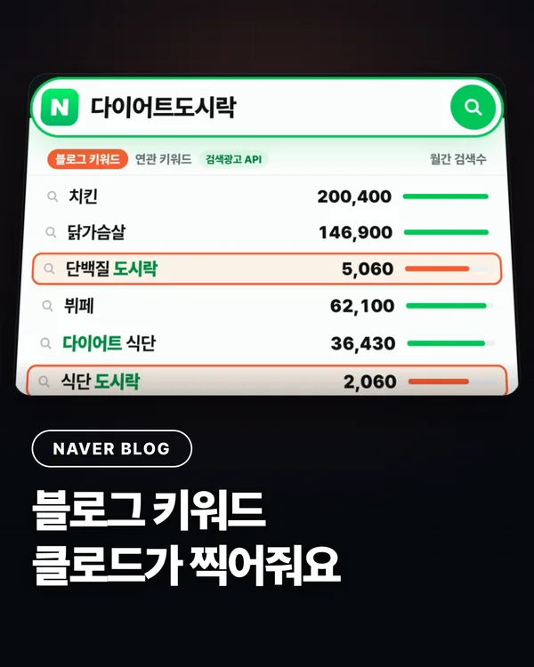
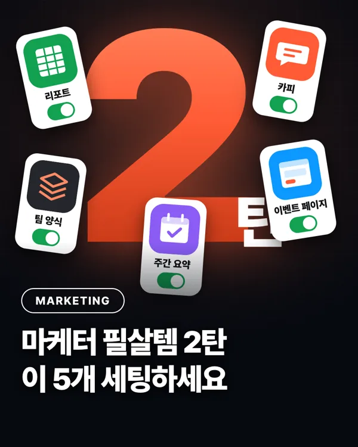
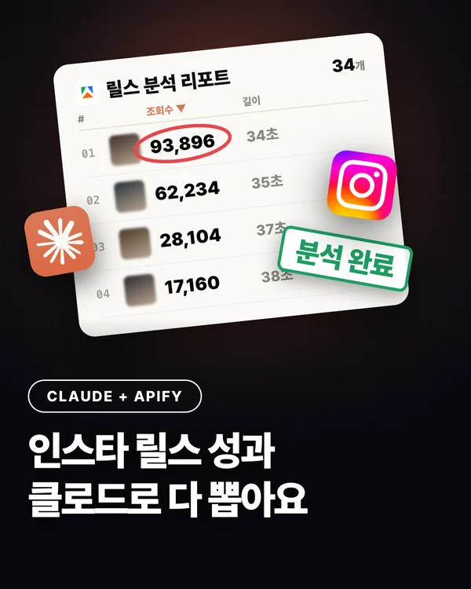
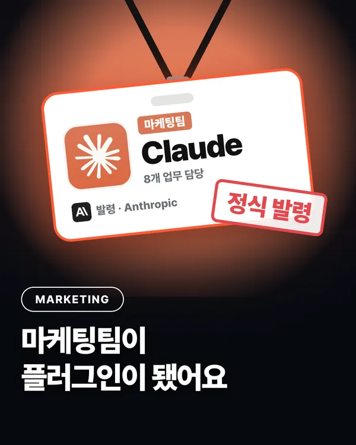
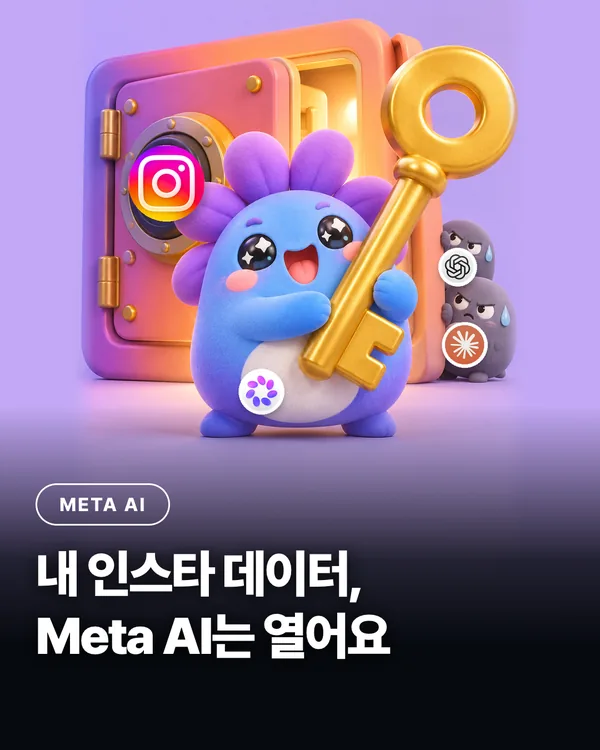
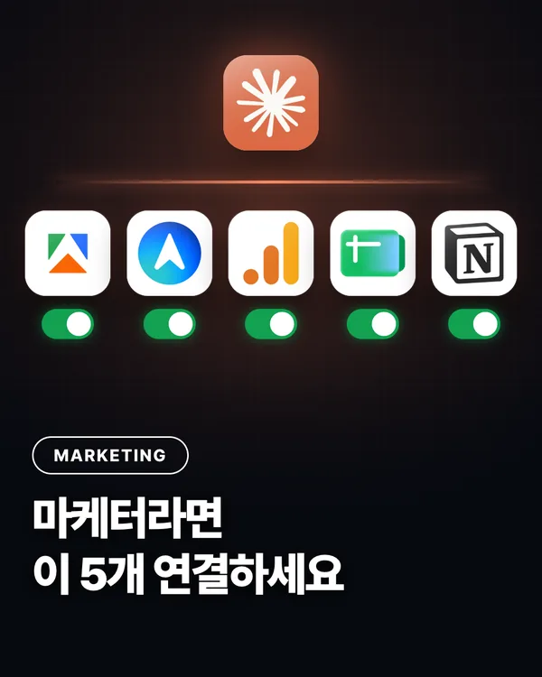
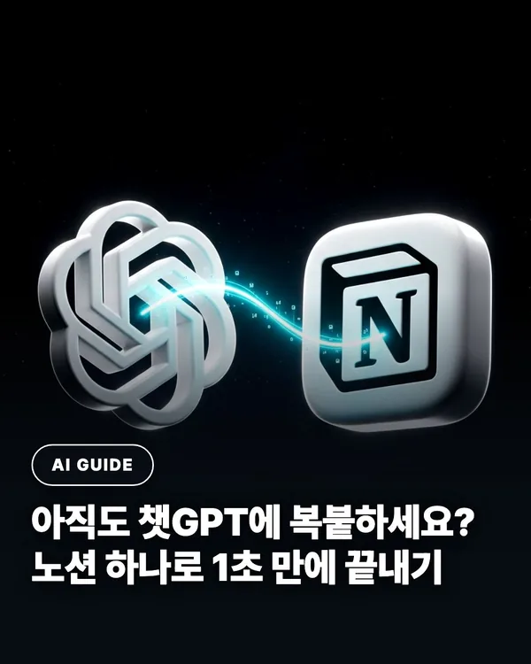
해당하는 자료가 아직 없어요.
직접 만들고 돌려 본 걸 숫자로 뜯어봤어요. 실측 데이터와 차트를 그대로 공개합니다.
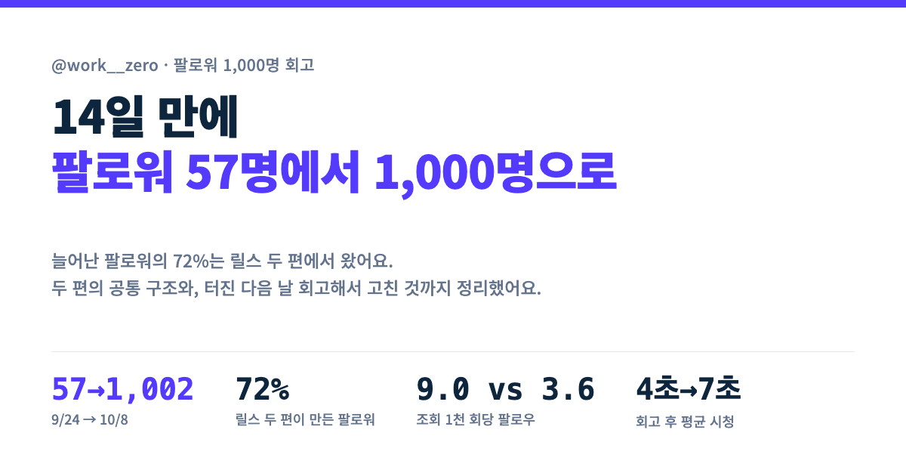
늘어난 팔로워의 72%는 릴스 두 편에서 왔어요. 두 편의 공통 구조와, 터진 다음 날 회고해서 고친 것까지 인사이트 숫자로 정리했어요.
읽어 보기 →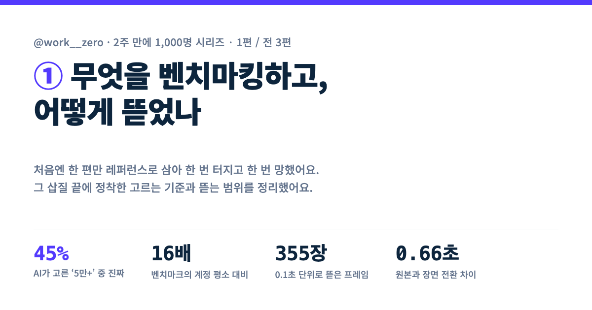
잘 된 릴스 한 편만 레퍼런스로 삼았다가 한 번은 터지고 한 번은 망했어요. 지금은 실측으로 고르고, 소재를 먼저 정한 뒤, 여러 편에서 뼈대만 가져와 내 콘텐츠로 다시 만들어요. 다음 편으로 이어져요.
읽어 보기 →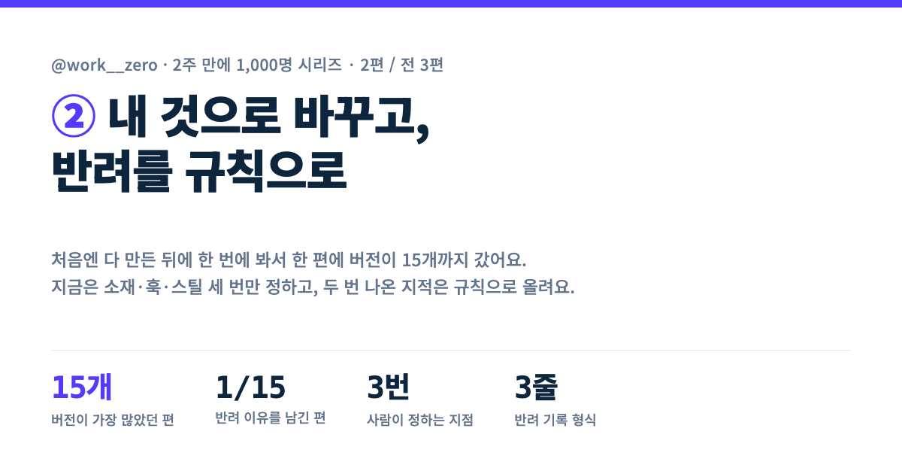
1편에서 고른 레퍼런스를 나만의 콘텐츠로 다시 만드는 단계예요. 다 만든 뒤에 한 번에 보다가 한 편에 버전이 15개까지 갔어요. 지금은 소재·훅·스틸 세 번만 정하고, 두 번 나온 지적은 AI가 매번 읽는 규칙으로 올려요.
읽어 보기 →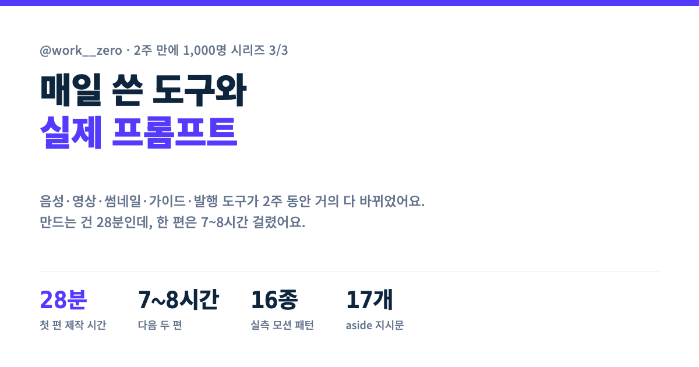
시리즈 마지막 편이에요. 음성·영상·썸네일·가이드·발행 도구가 2주 동안 거의 다 바뀌었어요. aside에 넘긴 실제 지시문과, 만드는 건 28분인데 한 편이 7~8시간 걸린 이유까지 정리했어요.
읽어 보기 →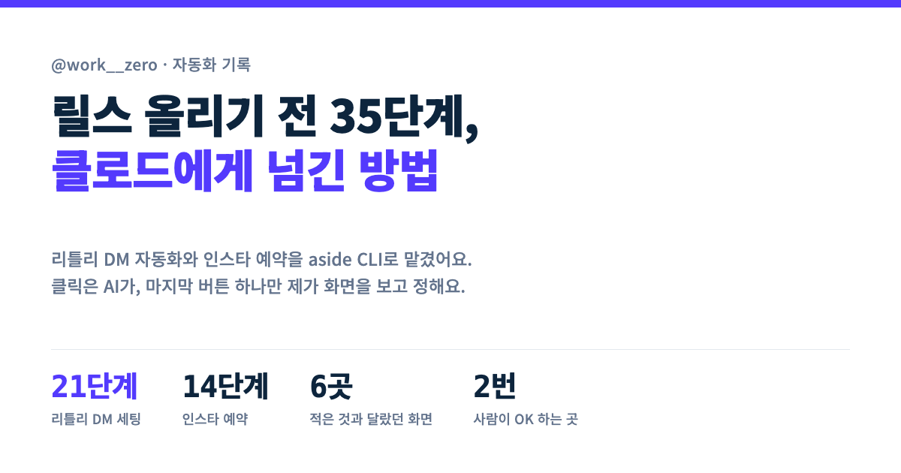
리틀리 댓글 DM 자동화와 인스타 릴스 예약을 aside CLI로 맡겼어요. 클릭은 AI가, 마지막 버튼 하나만 제가 화면을 보고 정해요. 실제 지시문과 처음 틀린 곳까지 그대로 정리했어요.
읽어 보기 →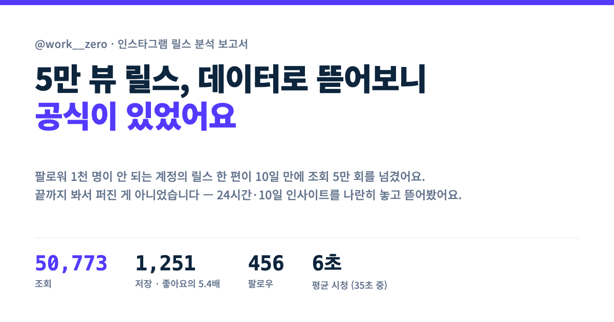
팔로워 1천 명이 안 되는 계정의 릴스가 10일 만에 조회 5만을 넘겼어요. 24시간·10일 인사이트를 나란히 놓고, 퍼뜨린 게 뭐였는지 뜯어봤어요.
읽어 보기 →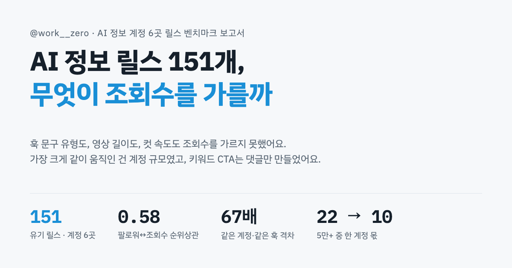
AI·업무 정보 계정 6곳의 릴스를 직접 모아 분석했어요. 훅 공식·영상 길이·CTA 중에 진짜로 조회수를 가른 건 무엇이었는지 봤어요.
읽어 보기 →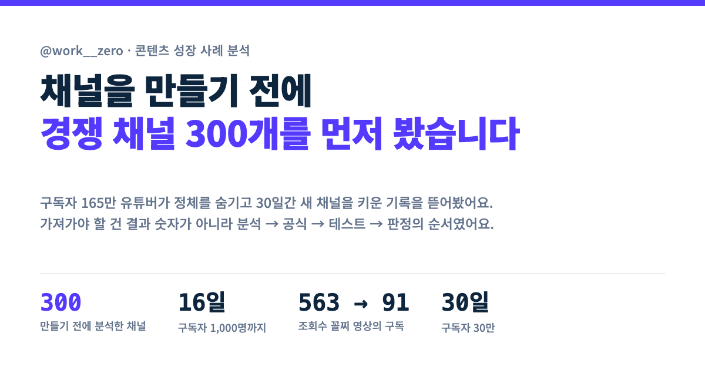
구독자 165만 유튜버가 정체를 숨기고 30일간 새 채널을 키운 기록을 뜯어봤어요. 가져가야 할 건 30만이라는 숫자가 아니라 분석 → 공식 → 테스트 → 판정의 순서였어요.
읽어 보기 →아직 뜯어본 글이 없어요.
마지막 업데이트 2026-10-21 · 읽을 수 있는 글 226편매일 밤 자동으로 모으고 정리한 AI 소식이에요. 어떻게 만드는지 보기 →
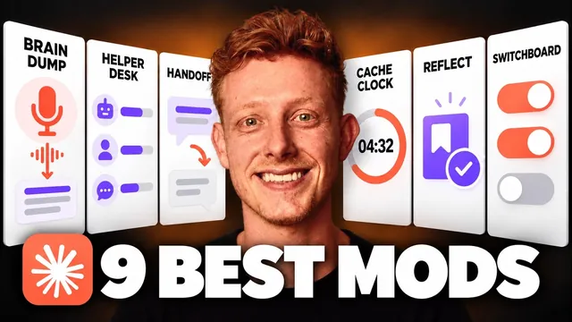
에이전트NEW2026-10-21· Ben AIClaude 모드 100개 갈아 끼워 보고 고른 베스트 9
Anthropic이 Claude Code에 '모드(mods)'를 내놓으면서 원하는 기능을 말로 설명만 하면 Claude가 직접 만들어 붙여 주는 시대가 됐어요. Ben은 몇 주 동안 100개가 넘는 모드를 분석·제작·테스트했고 그중 가장 쓸 만한 9개를 하나씩 보여 줍니다.
모드의 뼈대는 '신호 감지 → 지켜보기·바꾸기·막기'예요비용은 '캐시가 식었는지'에서 크게 갈려요비용 0인 '보여 주기' 모드가 체감 효과는 더 클 수 있어요읽어보기 →- 모델·도구NEW2026-10-21· 윤자동
윈도우 AI 왕초보 탈출하기 | 설치 없이 바로 쓰는 기본 AI 기능 5가지 (글자 복사·배경 바꾸기·Copilot)
따로 프로그램을 사지 않고 윈도우 11에 들어 있는 기능만으로 사진 속 글자 복사, 배경 바꾸기·흐리게, 물건 지우기, Copilot 정리까지 해 보는 왕초보용 안내예요. 직접 해 보다 안 된 기능과 개인정보 주의점도 함께 담겼습니다.
이미 가진 컴퓨터에 쓸 만한 AI가 들어 있어요AI 결과는 한 번에 완벽하지 않아요같은 윈도우라도 되는 기능이 달라요읽어보기 → 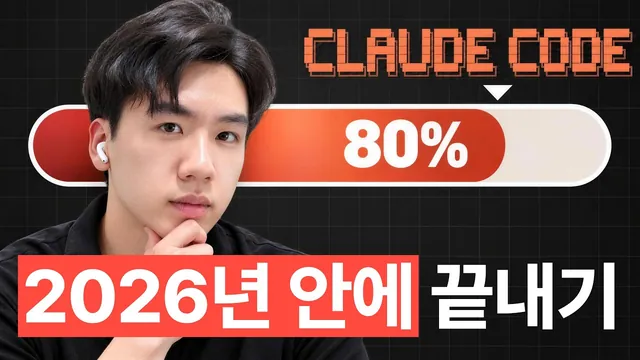
에이전트NEW2026-10-21· 투쏠ㅣAI 에이전트2027년이 오기전 클로드 코드의 80%를 마스터 하세요 [2시간 풀코스]
클로드 코드(Claude Code)를 설치하는 순간부터 CLAUDE.md, 슬래시 명령어, MCP, 스킬, 서브에이전트, 훅까지 투두 앱 하나를 계속 고쳐 가며 한 흐름으로 따라 해 보는 2시간짜리 실습 강의예요. 투쏠은 클로드 코드를 "내 일을 대신할 에이전트를 만드는 도구"로 정의하고 이 흐름만 익히면 80%는 쓸 수 있다고 봅니다.
CLAUDE.md는 권고, 훅은 강제컨텍스트는 비선형으로 불어나요스킬과 서브에이전트는 쓰임새가 달라요읽어보기 →- 비즈니스2026-10-20· Nick Saraev
2027년, Claude로 1인 사업가 되는 법
Nick Saraev는 Claude로 1인 사업을 하려면 세 가지 기술, 곧 Claude로 고객이 원하는 걸 만드는 법, 그게 왜 필요한지 설명하는 영업, 결과가 나올 때까지 버티는 꾸준함만 있으면 된다고 말해요. 실제 수주 사례와 가격 공식, 복리 효과로 각 기술을 풀어 줍니다.
지식 간극이 곧 상품이에요비용 절감보다 성장이 비싸게 팔려요수익은 ROI × 믿음 ÷ 마찰로 설계해요읽어보기 →  에이전트2026-10-20· Nick Puru | AI Automation
에이전트2026-10-20· Nick Puru | AI Automation비전공자를 위한 AI 기초 49분 정리
AI 에이전트, LLM, MCP, AGI까지 매일 듣지만 헷갈리는 AI 용어 46개를 Nick Puru가 기술 배경 없이도 알아듣게 풀어 줘요. 모델이 만들어지는 원리부터 프롬프트, 컨텍스트, RAG, 에이전트, 로컬 AI까지 한 번에 정리하고 마지막에 무엇부터 배우면 좋을지 순서도 알려 줍니다.
'책상' 하나로 컨텍스트·메모리·RAG·웹 검색이 다 설명돼요자동화와 에이전트를 가르는 기준은 '다음 단계를 누가 고르느냐'예요모델 성능 비교는 벤치마크가 아니라 내 일로 해야 해요읽어보기 →- 비즈니스2026-10-20· 윤자동
외주 받는 1인 사업자 필수 앱 3가지, 계약서 검토 AI부터 전자서명까지
외주를 받는 1인 사업자가 문의 답장부터 계약 검토, 전자서명, 정산까지 앱 3개로 처리하는 흐름을 윤자동이 실제 화면으로 보여 줘요. 답장·견적서는 Aside, 계약 검토와 전자서명은 Adobe Acrobat, 정산은 볼타이고, 그중에서도 서명 전에 계약서에 던질 다섯 가지 질문이 핵심이에요.
계약서는 요약보다 '견적서와 다른 줄'을 찾는 게 먼저예요AI 답은 출처로 바로 확인할 수 있어야 쓸 만해요문의·계약·정산이 한 흐름으로 이어지면 놓치는 게 줄어요읽어보기 → - 모델·도구2026-10-19· Nick Saraev
ChatGPT에 질문하면 안에서 무슨 일이 벌어질까
ChatGPT에 질문 하나를 보내면 답이 나오기까지 몇 초 사이에 무슨 일이 벌어지는지, Nick Saraev가 순서대로 따라가요. 프롬프트 포장, 안전 분류기, 토큰화, 데이터센터 GPU, 어텐션 연산, 한 토큰씩 생성, 추론·도구 사용까지 한 흐름으로 정리했습니다.
대화가 길어질수록 답이 흔들리는 데는 구조적인 이유가 있어요글자 세기·숫자 계산 실수는 토큰화에서 시작돼요같은 질문에 다른 답이 나오는 건 이상한 일이 아니에요읽어보기 → 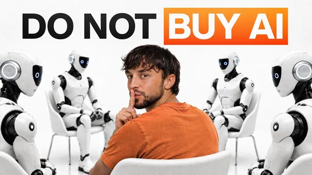
비즈니스2026-10-19· Liam Ottley대부분의 회사는 지금 AI 구매를 멈춰야 하는 이유
AI 전환 회사를 운영하는 Liam Ottley가 "대부분의 기업은 적어도 1년은 AI 시스템 구매를 멈춰야 한다"고 주장해요. 지금은 하네스(엔진)만 있고 기업용 올인원 AI 플랫폼(차체)은 아직 완성되지 않은 '대기실' 단계라서, 맞춤형 구축에 큰돈을 쓰기보다 플랫폼을 고르는 기준을 미리 세워 두라는 이야기예요.
맞춤형 AI 시스템의 약점은 품질이 아니라 유지보수예요AI 플랫폼은 전부 옮기거나 아예 안 옮기는 구조예요도입 시점보다 고르는 기준이 먼저예요읽어보기 →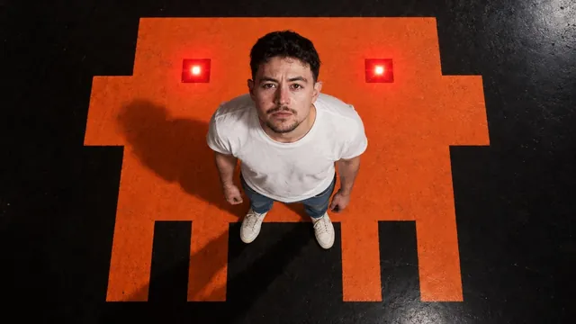
AI 소식2026-10-19· Nick SaraevAnthropic이 자본주의의 끝을 선언했다?
Anthropic이 지분 일부를 공익 기금에 내놓겠다고 발표했어요. 처음 5%만 해도 약 750억 달러인데, Nick Saraev는 이 돈이 Claude가 운영하는 기본소득으로 이어질 수 있다고 보고 그게 어떤 세상일지 상상해 봅니다.
기부가 아니라 분배 실험이에요자격 심사 비용이 사라지면 복지 설계가 바뀌어요지금 배우는 직업이 졸업 뒤에 남아 있을지 모르는 시대예요읽어보기 →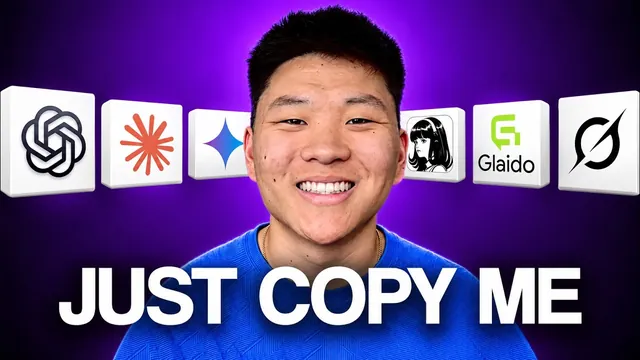
에이전트2026-10-19· Nate Herk | AI AutomationAI 도구 100개 넘게 써 보고 남긴 7개
AI 도구를 100개 넘게 써 본 Nate Herk가 매일 사업에 실제로 쓰는 7가지를 골랐어요. Claude Code·Codex, OpenRouter, Hostinger VPS, Grockbot, Glido, Kie.ai, trigger.dev를 어디에 어떻게 쓰는지까지 알려 줍니다.
에이전트 하나가 여러 구독을 대신해요도구보다 갈아탈 수 있는 구조가 중요해요모든 자동화에 AI가 필요하진 않아요읽어보기 →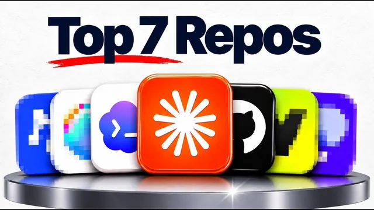
모델·도구2026-10-18· Jack Roberts화제가 된 GitHub 저장소 7개
Jack Roberts가 Claude를 한 단계 끌어올려 줄 GitHub 저장소 7개를 골라 소개해요. 무료 목소리 복제 앱, 웹페이지를 영상으로 바꾸는 Hyperframes, Claude를 시니어 엔지니어처럼 일하게 만드는 스킬 묶음, 내 컴퓨터에서 도는 무료 분류 모델까지, 별을 합치면 거의 40만 개에 이르는 목록이에요.
설치도 Claude에게 맡기되 검증은 먼저 해야 해요무료 도구의 가치는 '기본 성능'이 아니라 '내 데이터로 키울 수 있느냐'에 있어요Claude의 결과물은 맥락을 얼마나 주느냐로 갈려요읽어보기 →- 비즈니스2026-10-17· Nick Puru | AI Automation
상위 0.01% 회사는 AI를 이렇게 써요 (15분 날것 조언)
매출이 막힐 때 사람부터 뽑는 건 가장 흔한 실수라고 Nick Puru는 말해요. 서비스 기업 세 곳에 AI를 넣은 실제 숫자(성공도 빗나간 것도)와, 내 회사 어디부터 손댈지 찾는 질문 4가지를 정리했습니다.
채용은 연결 고리를 하나 더 다는 것일 뿐이에요도구 말고 숫자 하나를 먼저 정하세요절감액만 보면 좋은 프로젝트를 놓쳐요읽어보기 → - AI 소식2026-10-17· Nick Saraev
"AI는 사기다"에 대한 반박
"AI는 역사상 가장 정교한 사기"라는 한 비판가의 트윗을 Nick Saraev가 조목조목 반박하는 영상이에요. 지능은 원래 결과물로 판단한다는 점, AI 회사들이 한계를 꾸준히 경고해 왔다는 점, 매주 9억 명이 쓰고 5천만 명이 돈을 내는 서비스를 사기라 부를 수는 없다는 점이 핵심이죠.
지능을 재는 잣대는 사람에게도 AI에게도 결과물이에요"AI는 못 한다"로 선을 그으면 그 선은 계속 밀려나요돈을 내고 쓰는 사람이 많다는 건 강한 신호예요읽어보기 → 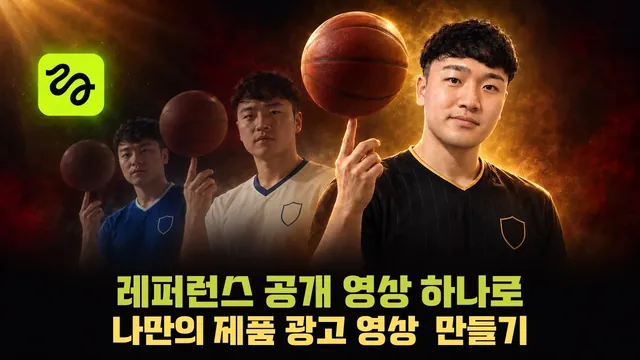
모델·도구2026-10-17· 샘 호트만 : AI 엔지니어의 시선유니폼 공개 영상, Claude한테 프로 구단처럼 만들어 달라고 해봤습니다 (Higgsfield Katana)
샘 호트만이 Claude에 연결한 Higgsfield Katana(레퍼런스 영상의 편집을 읽고 사람·옷만 바꿔 다시 만드는 도구)로 가상의 팀 '호트만 FC'의 유니폼 공개 영상을 만들어 봤어요. 홈킷 영상 하나를 잘 만들어 두면 어웨이·서드는 사진만 바꿔 같은 편집으로 뽑고, 마음에 안 드는 장면은 몇 초에 무엇을 고칠지만 적어서 손보는 흐름입니다.
잘 만든 영상 하나가 다음 버전의 설계도가 돼요프리셋은 종목이 아니라 '보여줄 대상이 오래 잡히는가'로 골라요수정은 "몇 초에 무엇을 어떻게"로 좁힐수록 싸요읽어보기 →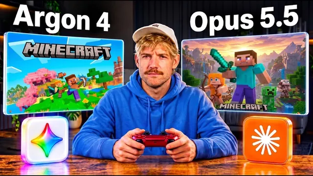
모델·도구2026-10-16· Jack RobertsGemini 4 Argon vs Opus 5.5, 같은 앱 만들기 대결 (날것 그대로)
벤치마크 70% 이상에서 Opus 5.5를 앞섰다는 Gemini 4 Argon을 같은 프롬프트로 7단계 과제에 붙여 봤더니, Jack Roberts의 판정은 일곱 번 모두 Claude 승이었어요. 다만 토큰은 Argon이 400만, Claude가 2200만을 써서 비용 효율만큼은 Argon 쪽이 확실히 앞섰습니다.
벤치마크 1위가 실전 1위는 아니에요토큰 효율은 '한 번에 끝날 때'만 의미가 있어요모델만큼 하네스가 중요해요읽어보기 → 모델·도구2026-10-16· Ben AI
모델·도구2026-10-16· Ben AIClaude 스킬, 쓰지 말고 역설계하세요
Ben은 Claude 스킬(skill)을 만들 때 처리 단계를 일일이 설명하지 말고 잘 된 결과물과 안 된 결과물을 보여 준 뒤 Opus 5.5가 거꾸로 스킬을 설계하게 하라고 말해요. 화제의 'Reverse engineer anything' 저장소에서 출발해, 스킬을 역설계하는 3단계 과정과 실제 뉴스레터 사례까지 보여 주는 영상이에요.
설명보다 예시가 더 많은 정보를 담아요나쁜 예시가 좋은 예시만큼 중요해요'확인됨·추론됨·알 수 없음' 태그가 환각을 막는 안전장치예요읽어보기 →- 모델·도구2026-10-16· Nick Saraev
이거 하나면 끝나는 AI 로드맵
Nick Saraev가 AI를 거의 모르는 사람도 일주일이면 기초부터 돈 버는 법까지 잡을 수 있게 짠 학습 로드맵이에요. 1950년대 퍼셉트론에서 시작해 LLM 핵심 개념 8가지, 칩부터 앱까지 이어지는 AI 산업 구조, 연구소별 철학, 도구 고르는 법을 거쳐 "AI 이전에도 돈이 되던 일에 AI를 붙여라"라는 결론까지 이어집니다.
"AI 이전에도 돈이 됐나?"가 가장 강력한 필터예요AI는 양파 구조라 바깥 층만 봐서는 판단이 흔들려요프롬프트 실력은 곧 위임 실력이에요읽어보기 → - 모델·도구2026-10-16· 페이퍼로지
굿바이 파워포인트, PPT는 이제 HTML로 만듭니다.
페이퍼로지가 PowerPoint 대신 HTML로 발표 자료를 만드는 방법을 보여줘요. 프롬프트와 모션 템플릿만 있으면 Claude, GPT, 젠스파크 어디서든 만들 수 있고, 30장짜리 한 벌을 만드는 비용은 젠스파크가 가장 낮았다고 합니다.
발표 자료가 파일이 아니라 브라우저 화면이 돼요재료는 프롬프트와 모션 템플릿 두 가지예요PPT 한 벌 비용은 도구마다 크게 달라요읽어보기 → 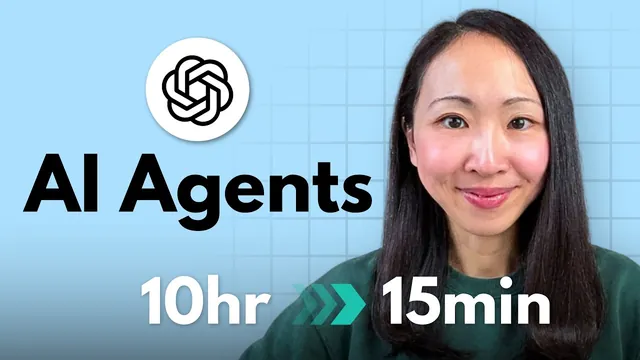
마케팅2026-10-16· Grace LeungChatGPT Work로 지금 바로 맡길 수 있는 AI 에이전트 10개
Grace는 ChatGPT의 에이전트 기능에 마케팅 업무 10가지를 맡기는 과정을 직접 보여 줘요. 발표 자료, 웹사이트, 고객 리서치, 데이터 분석, 리드 발굴, 캠페인, 경쟁사 분석, 글쓰기, 제안서, AI 검색 노출까지 각각 어떻게 세팅하고 무엇을 받았는지 정리했습니다.
세팅이 결과물의 품질을 좌우해요목표와 큰 방향만 주고 방법은 맡겨요한 번 잘 돌린 과정은 skill로 저장해요읽어보기 →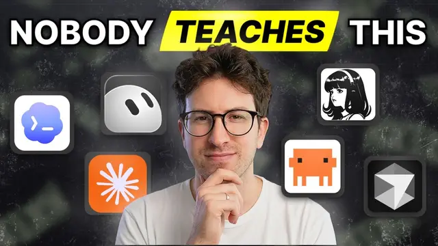
마케팅2026-10-16· Greg Isenberg연봉 100만 달러 직무가 온다 — AI 에이전트로 마케팅팀을 대신하는 '마케팅 엔지니어'
Greg Isenberg가 앞으로 18~24개월 동안 테크 업계에서 가장 몸값이 높아질 사람으로 '마케팅 엔지니어'를 꼽아요. AI 에이전트·데이터·코드·안목으로 시장 신호를 영업 파이프라인으로 바꾸는 사람이에요. 마케팅이 변해 온 4단계, 가장 먼저 만들 '그로스 레포', 도구 조합, 에이전트 직무 기술서 쓰는 법, 냉난방 공조(HVAC) 업체에 소프트웨어를 파는 회사를 예로 든 시스템 6개, 돈 버는 길 4가지와 30일 학습 계획까지 담았어요.
마케팅 기억은 대화창이 아니라 '그로스 레포'에 쌓으세요사람을 뽑을 때처럼 에이전트에게도 직무 기술서를 써 주세요보낸 메시지 수 말고 받은 답장으로 성과를 판단하세요읽어보기 →- 모델·도구2026-10-15· Ben AI
Claude Motion이 일하는 방식을 바꿔요 (실사용 8가지)
Anthropic이 출시한 Claude Motion은 영상 모델 없이 코드로 영상과 모션 그래픽을 만드는 기능이에요. Ben AI의 Ben이 데이터 시각화, 제품 데모, 온보딩 튜토리얼, 주간 리포트까지 실제 업무에 쓰고 있는 8가지 사례와 프롬프트 요령을 보여 줘요.
코드 기반 영상이라 '수정'이 싸요좋은 결과의 공식은 참고 영상 + 스토리보드 + 디자인 시스템이에요영상이 '보고서 포맷'이 됐어요읽어보기 → - 모델·도구2026-10-15· 샘 호트만 : AI 엔지니어의 시선
우리 집 고양이를 AI 인플루언서로 만들었습니다, 사진 한 장과 춤 영상 하나로 (Higgsfield AI Influencer 2.0)
샘 호트만이 고양이 사진 한 장과 춤 영상 하나로 Higgsfield AI Influencer 2.0을 돌려 자기 집 고양이 '복자'를 춤추는 AI 인플루언서로 만든 과정을 보여 줘요. 열흘 동안 14편을 만들며 크레딧을 날려 보고 얻은 결론은 하나예요. 얼굴은 우리 고양이가 정하지만 나머지는 거의 레퍼런스 영상이 정한다는 거예요.
결과의 대부분은 레퍼런스가 정해요일관성은 '고정'에서 나와요변주는 한 번에 하나씩 해야 해요읽어보기 → - 모델·도구2026-10-14· Nick Saraev
상위 0.1% CEO처럼 AI 쓰는 법
Nick Saraev는 AI를 가장 잘 쓰는 사람들과 평범한 사용자의 차이가 모델이나 도구가 아니라 AI와 대화하는 방식에 있다고 봐요. 타이핑 대신 말하기부터 "결점을 물어보기", "직접 시켜 보기"까지, 바로 따라 할 수 있는 7가지 습관을 정리한 영상이에요.
입력 속도가 곧 AI 활용량이에요AI의 동조 성향을 역이용해야 해요'AI가 이걸 할까?'는 직접 해 봐야 답이 나와요읽어보기 → - 모델·도구2026-10-14· 샘 호트만 : AI 엔지니어의 시선
AI 인플루언서가 사진 한 장으로 끝나는 이유 (같은 얼굴로 일관성 유지하며 영상 이어가기)
AI로 예쁜 모델 사진 한 장 만드는 건 쉬워도, 그 사람을 다음 게시물에서 다시 만나게 하는 건 어려워요. 샘 호트만은 캐릭터 시트 한 장과 모션 트랜스퍼로 같은 인물을 유지한 채 옷과 배경을 하나씩 바꿔 보며, AI 인플루언서 계정을 이어 가는 기준 세 가지를 정리해요.
팬은 얼굴이 아니라 '기준'에 붙어요한 번에 하나만 바꿔야 원인을 알 수 있어요다시 뽑기 전에 쓸 구간부터 찾아요읽어보기 → 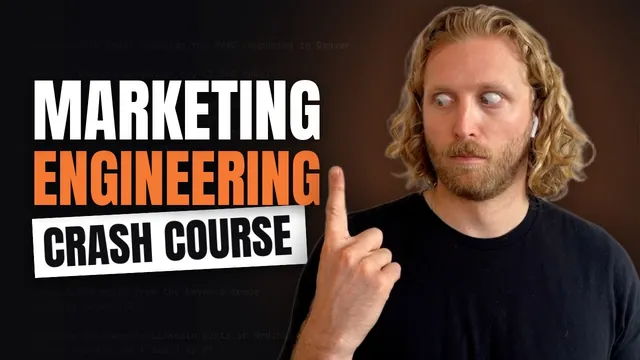
마케팅2026-10-14· Cody SchneiderClaude Code로 배우는 마케팅 엔지니어링 속성 과정
Cody Schneider가 코딩 에이전트에게 마케팅 실무(광고 업로드, 데이터 분석, 리드 수집, 키워드 조사, 블로그 발행)를 시키는 마케팅 엔지니어링의 필수 구성 요소와, Claude Code로 그 작업을 실제로 돌려 보여 준 시연을 정리했어요.
광고 플랫폼 API로 직접 읽지 말고 웨어하우스에서 읽어요마케팅 작업 하나하나가 에이전트에게 시킬 수 있는 단위예요여러 작업을 동시에 백그라운드로 돌려요읽어보기 →- 에이전트2026-10-14· 빌더 조쉬 Builder Josh
카카오 AI 전략 맡던 대표가 말하는 AI 에이전트 사고가 나기 전에 회사가 깔아야 할 통제 4단계 (임페라이 음병찬 대표님)
카카오에서 AI 사업 전략을 맡았던 임페라 대표가 AI 에이전트를 회사에 들이기 전에 어떤 통제 장치를 깔아야 하는지 설명해요. 에이전트에게 착하게 굴라고 타이르는 대신 실제로 행동하는 지점을 따로 통제하라는 게 요지예요. 그 구조를 식별·통제·증명·최적화의 4단계로 풀어 보여 줍니다.
프롬프트로 막는 건 확률을 낮출 뿐이에요등록돼 있어도 섀도우일 수 있어요통제 기록은 비용이 아니라 자산이에요읽어보기 →  자동화2026-10-13· Nick Saraev
자동화2026-10-13· Nick Saraev연 매출 100만 달러 회사를 일주일 동안 Claude Code에 맡겨 봤습니다
Nick은 연 매출 약 100만 달러 규모의 에이전시에 Claude를 붙여 일주일 동안 업무 대부분을 자동화했어요. 화면 캡처로 업무를 기록하고 작업마다 평가(evals)로 점수를 매겨 스킬로 굳힌 뒤, 예약 실행할 것과 사람이 볼 것을 나누는 표준 과정을 단계별로 보여 줘요.
내 일은 말보다 화면이 더 정확하게 설명해요자동화의 진짜 시간은 '채점'에 들어가요감독이 필요한 일은 예약하지 않아요읽어보기 →- 에이전트2026-10-13· Nate Herk | AI Automation
AI 자문단을 만들었어요 — 버핏·베조스가 내 사업을 토론한다면
Nate는 베조스, 워런 버핏, 알렉스 호르모지 같은 사업가 7명을 Claude Code 서브에이전트로 만들어 자기 사업의 자문단으로 쓰고 있어요. 질문 하나를 던지면 이들이 서로 토론하고 투표한 뒤 결론을 PDF로 정리해 주는 구조인데, Nate는 이 스킬을 무료로 나눠 주겠다고 해요.
에이전트마다 '뇌' 폴더를 따로 채웠어요한 명에게 묻는 대신 여럿이 토론하고 투표해요토론 화면은 없어도 돌아가요읽어보기 → 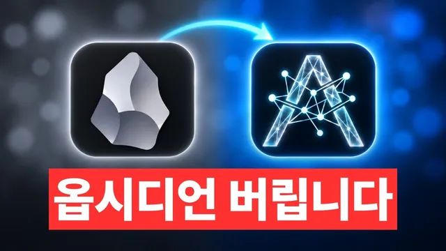
에이전트2026-10-13· 투쏠ㅣAI 에이전트옵시디언 버리고 이걸로 갈아탑니다
혼자 쓰던 옵시디언 LLM 위키를 팀원과 나눠 쓰고 싶은데, 보여 주면 안 되는 문서까지 AI가 읽어 버릴까 걱정이라면 이 영상이 답이에요. 투쏠이 폴더 단위 권한과 MCP 연결을 함께 제공하는 팀용 세컨드 브레인 '발다'를 설치부터 Claude 연결, 권한 차단 확인까지 직접 보여 줘요.
팀 지식 공유의 핵심은 '공유'보다 '권한'이에요사람의 권한이 그대로 AI의 권한이 돼요도구 하나를 깊게 익히면 다음 도구는 인터페이스만 바뀐 것이에요읽어보기 →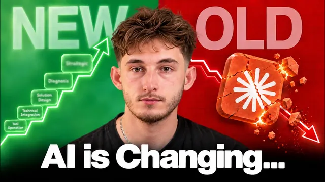
에이전트2026-10-12· Nick Puru | AI Automation욕먹을 각오로 말할게요, Claude Code 시대는 끝나 갑니다
1년 전 "n8n 공부는 그만하라"고 했던 Nick Puru가 이번엔 Claude도 마찬가지라고 말해요. 도구는 계속 바뀌니 도구 조작이 아니라 비즈니스의 진짜 문제를 찾고 고치는 '오퍼레이터'가 되라는 이야기를, 자기 회사 Reprise의 문의 1,800건과 실제 프로젝트 숫자로 풀어 줘요.
도구 숙련도는 도구가 바뀔 때마다 리셋돼요사장이 말하는 문제와 돈이 새는 곳은 다를 때가 많아요모델은 모두 같으니 차이는 맥락에서 나요읽어보기 →- 모델·도구2026-10-12· 빌더 조쉬 Builder Josh
"들어오던 수주를 다 멈췄습니다" 컨설팅 200건 하던 회사가 하룻밤에 AI 올인을 결심한 이유 (아크포인트 오태완 대표님)
컨설팅 프로젝트를 200건 넘게 해 온 아크포인트의 오태완 대표가 클로드 코드를 처음 써 본 날 밤 "AI는 몰빵해야 한다"고 결심하고, 들어오던 수주를 멈춘 뒤 회사를 AI 네이티브로 바꾼 과정을 빌더 조쉬와 이야기해요. 매일 아침 스터디 스킬, 'AI 슬롭'을 가려내는 기준, 옵시디언으로 만든 회사의 뇌, 그리고 지방 중소기업과 수익을 나누는 사업 모델까지 실제 화면과 함께 풀어놓습니다.
AI 결과물은 병목을 없앴는지, 옮겼는지로 판단해야 해요AI가 회사를 '조회'할 수 있어야 대표의 판단이 쌓여요AX의 기회는 AI를 못 쓰는 곳에 있어요읽어보기 → - AI 소식2026-10-12· 빌더 조쉬 Builder Josh
크래프톤 AI 역량 평가에서 개발 경험 없는 매장 직원 출신이 상위권에 오른 이유 (크래프톤 구한모·조정석님)
크래프톤 AI 프론티어 본부의 구한모·조정석이 만든 AI 역량 평가 도구 '프로브'를 다룬 인터뷰예요. 코딩 테스트 대신 AI와 함께 실제 업무를 해 보는 환경을 주고 결과물·AI 활용·이해도를 기술·의도·인지 세 축으로 채점했더니, 개발 경험 없는 매장 직원 출신이 상위권에 올랐다는 이야기가 핵심입니다.
AI 네이티브는 워크플로를 다시 짜는 사람이에요결과물보다 그 결과물을 설명할 수 있느냐가 갈라요잘하는 사람일수록 비용을 적게 써요읽어보기 →  에이전트2026-10-12· Cheeky Pint
에이전트2026-10-12· Cheeky Pint모델도 안 보고 1,000억 달러를 걸었다 — 저커버그·알렉산더 왕의 Muse Wonder
마크 저커버그와 알렉산더 왕(Alexandr Wang)이 Stripe 공동창업자 John Collison의 팟캐스트 Cheeky Pint에 나와 메타의 새 프런티어 모델 Muse Wonder를 소개해요. 모델을 보기도 전에 1천억~2천억 달러 규모의 투자를 결정한 과정, "모델이 곧 제품"이라는 관점, 에이전트가 장을 보는 시대의 커머스, 그리고 1년 만에 연구소를 새로 세운 방식까지 한 번에 들을 수 있어요.
모델이 곧 제품인 시대엔 '행동 명세'가 기획서예요남이 만든 점수판 대신 내 고객 기준의 평가표를 만드세요에이전트가 손님이 되는 시장이 열리고 있어요읽어보기 →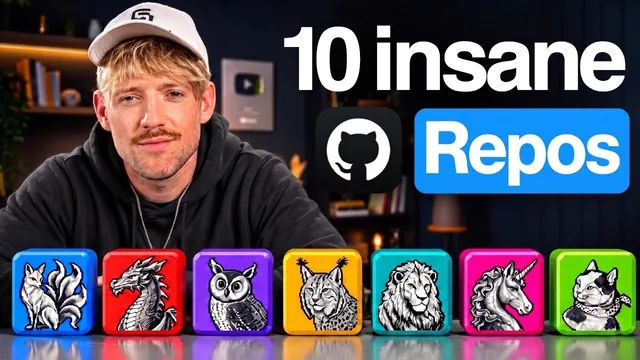
에이전트2026-10-11· Jack Roberts돈 되는 새 GitHub 저장소 10개, 19분 정리
Jack Roberts가 지금 GitHub에서 뜨고 있는 오픈소스 저장소 10개와 보너스 두 개를 골라 소개해요. 어도비 제품군을 통째로 다시 만든 무료 앱부터 AI 에이전트 전용 브라우저, 100개의 답을 토너먼트로 붙이는 스킬, 보안 감사 스킬까지 "에이전트에게 맡길 수 있는 도구"가 한 줄로 정리돼 있어요.
무료인 것보다 에이전트가 직접 돌릴 수 있다는 점이 커요연결은 한 번 해 두고 여러 에이전트가 같이 써요답 하나 대신 100개를 붙여서 골라요읽어보기 →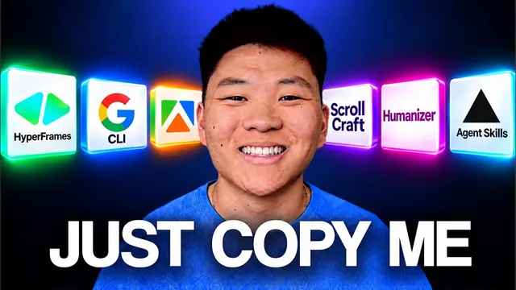
모델·도구2026-10-11· Nate Herk | AI AutomationClaude용 GitHub 저장소 100개 써 보고 고른 베스트
Nate Herk가 Claude용 GitHub 저장소 100개 넘게 직접 써 보고 골라낸 10개(+보너스)를 소개해요. 영상 편집, 구글 계정 연동, 스크래핑, 웹사이트, 앱, 결제, 테스트, SEO까지 각 저장소가 어떤 문제를 풀고 그걸로 어떻게 돈 받는 결과물을 만드는지 정리했어요.
저장소는 무료, 돈은 결과물에서 나와요Claude의 "잘 돼요"는 검증이 아니에요절약 광고 수치는 그대로 믿으면 안 돼요읽어보기 → AI 소식2026-10-11· David Senra
AI 소식2026-10-11· David Senra알렉산더 왕이 말하는 메타 Muse 제작기: 프로토타입 2주, 다듬기 7개월
메타 슈퍼인텔리전스 랩(MSL)을 이끄는 알렉산더 왕(Alexandr Wang)이 David Senra와 마주 앉아, 개인 에이전트 앱 Muse를 프로토타입 2주·다듬기 7개월 만에 내놓은 과정을 이야기해요. 한마디로 "코딩 에이전트 경쟁에 뛰어드는 대신 개인 에이전트에 걸었고 100개가 넘는 체크리스트로 모델을 끝까지 다듬었다"는 거예요. Scale AI를 떠나 메타로 온 결정과 200명 넘는 직속 보고 체계 이야기도 함께 나옵니다.
남들이 몰리는 곳 대신 내가 유리한 곳을 골랐어요"좋아졌다"는 느낌 대신 체크리스트로 출시를 정했어요사람은 회사 말고 "나한테 뭘 해 주는지"에 반응해요읽어보기 →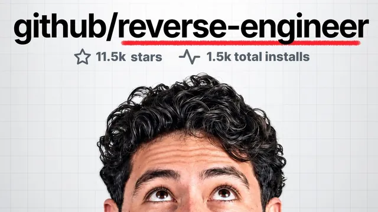
모델·도구2026-10-10· Nick Saraev"뭐든 역설계한다"는 화제의 GitHub 저장소, 직접 써 봤어요
요즘 화제인 깃허브 저장소 'Reverse engineer anything(REA)'을 Nick Saraev가 직접 써 보고, Mac 미리보기 앱을 REA를 쓴 쪽과 안 쓴 쪽으로 나눠 재현해 비교해요. Nick은 도구가 쓸 만하긴 해도 새롭지는 않고, 진짜 변화는 소프트웨어 자체가 상품이 되는 흐름이라고 봐요.
화제성 지표와 실제 데모를 구분해서 보세요도구를 연결하는 층보다 모델 자체가 빠르게 일을 흡수해요"따라 만들기"가 쉬워질수록 가치는 조합과 맥락으로 옮겨가요읽어보기 →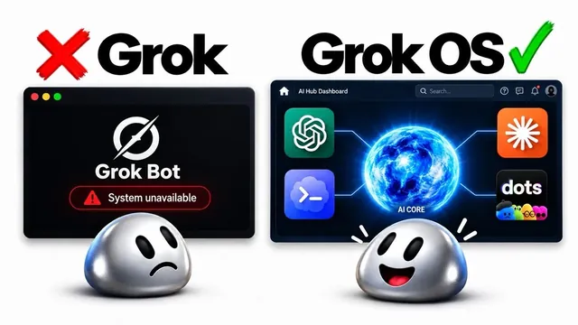
에이전트2026-10-10· Jack RobertsGrok 에이전틱 OS로 Grok 봇 10배 키우기 (10분)
Jack Roberts가 Grok 봇(Grokbot)의 큰 업데이트 세 가지를 소개하고, 그래도 남는 가장 큰 한계인 "다른 AI와 단절돼 있다"는 문제를 에이전틱 운영체제(Agentic OS)로 푸는 방법을 보여 줘요. Grok 봇과 ChatGPT의 Dots를 하나의 운영체제 안에서 함께 부리는 장면이 핵심이에요.
에이전트의 성능은 모델보다 맥락에서 갈려요도구 하나에 올인하기보다 역할을 나눠 쌓는 게 현실적이에요자동 라우팅은 편하지만 무엇이 돌았는지는 안 보여요읽어보기 →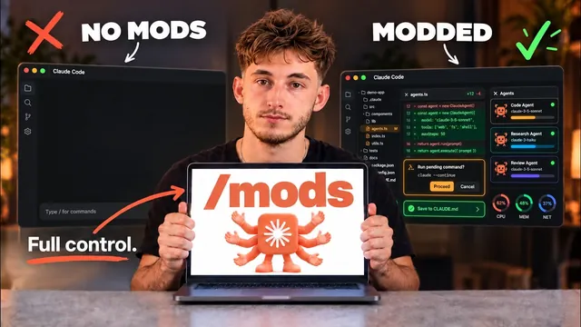
에이전트2026-10-10· Nick Puru | AI Automation이제 Claude Code를 내 입맛대로 바꿀 수 있어요
Anthropic이 10월 1일 내놓은 Claude Code 모드(mods)는 프롬프트 한 줄로 Claude Code 화면과 동작 방식을 직접 바꾸는 기능이에요. Nick Puru가 지난 2주 세션 기록에서 자기에게 필요한 모드를 찾아내 삭제 가드·전송 전 승인·영수증 모드 세 가지를 만들어 보고, 다른 사람이 만든 모드를 설치할 때의 보안 위험까지 정리합니다.
지침은 요청, 모드는 보장필요한 모드는 내 세션 기록이 알려 줘요모드는 내 권한으로 도는 코드예요읽어보기 →- 에이전트2026-10-10· 샘 호트만 : AI 엔지니어의 시선
쇼츠 편집을 Claude Code로 100% 자동화하는 방법 (전부 오픈소스 제공)
셀카 토킹헤드 영상 하나와 명령어 한 줄이면 Claude Code가 무음 정리·자막·효과음·모션 그래픽까지 입힌 쇼츠를 만들어 주는 오픈소스 시스템을 샘 호트만이 직접 돌려 보여 줘요. 남들과 똑같아지지 않도록 레퍼런스 영상에서 내 취향을 뽑아 시스템에 계속 반영하는 방법까지 다뤄요.
비주얼 품질은 모델 설정보다 맥락이 좌우해요전사 모델과 LLM의 역할을 나누면 자막 오타가 줄어요취향은 한 번에 정하는 게 아니라 스킬·문서에 쌓아 가는 거예요읽어보기 → - 모델·도구2026-10-09· Nick Saraev
Claude로 '진격의 거인' 게임을 만들어 버렸습니다
Nick Saraev가 Opus 5.5로 '진격의 거인'과 '마인크래프트'를 섞은 게임을 만들고, 직접 플레이하며 고친 끝에 친구들과 온라인 멀티플레이까지 성공한 과정을 보여 줘요. 총 토큰 비용은 31.44달러였고, 기획서 대신 "플레이하면서 말로 고치는" 방식이 핵심이에요.
완벽한 기획서보다 '써 보고 고치기'가 빨라졌어요AI 작업 비용은 세션 운영 방식에 따라 달라져요모델 등급마다 '씨앗'의 값과 완성도가 달라요읽어보기 → - 비즈니스2026-10-09· Eugene Kadzin
연 매출 $15M SEO 에이전시는 어떻게 굴러갈까
메뉴판처럼 가격을 걸어 두고 선결제로 SEO 서비스를 파는 에이전시 Fat Joe의 공동창업자 Joe Davis가 Eugene Kadzina의 라이브 쇼에 나왔어요. AI 시대에 SEO 에이전시가 살아남는 지점, 상품화(productized) 모델로 바꾼 이유와 첫 실수, 광고로 첫 100만 달러를 만든 방법, 그리고 지금 처음부터 시작한다면 팔 서비스 S~D 등급표까지 담겼어요.
상품화는 100% 해야 작동해요고객은 과정이 아니라 결과를 사요AI에 관심 없는 고객층이 AI 활용의 최적지예요읽어보기 → 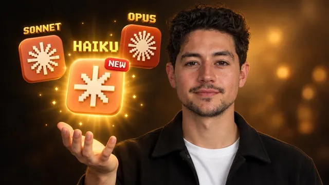
모델·도구2026-10-08· Nick SaraevHaiku 5.5를 24시간 굴려 봤어요 — Opus랑 얼마나 차이 날까?
Nick Saraev가 700달러 넘게 들여 Haiku 5.5를 Sonnet 5.5·Opus 5.5와 같은 프롬프트로 맞붙였어요. 게임·웹사이트·회계 감사·다큐 영상까지 만들어 본 결론은 이래요. Opus가 대체로 가장 좋긴 한데, 가격 차이만큼 결과 차이가 크지는 않아요. 그래서 Haiku 5.5는 "싸게 많이 돌리는 실무 모델"로 쓸 만하다는 거예요.
가격 차이만큼 품질 차이가 나지 않아요텍스트 업무는 이미 모델 간 차이가 거의 없어요비싼 모델이 늘 이기지는 않아요읽어보기 → 모델·도구2026-10-08· Jack Roberts
모델·도구2026-10-08· Jack RobertsClaude 모션 디자인, 1,000만 원짜리 웹사이트를 혼자 만든다
Jack Roberts가 Claude 모션 디자인으로 영상과 코드 애니메이션을 겹친 웹사이트를 만드는 과정을 보여 줘요. 레퍼런스 찾기, Higgsfield로 이미지·영상 생성, Claude로 코드 모션 입히기, MongoDB로 백엔드 확장까지 한 흐름으로 정리했어요.
영상과 코드를 겹치는 게 차별점이에요사이트의 사소한 화면이 브랜드를 말해 줘요예쁜 프런트만으로는 사업이 안 돼요읽어보기 →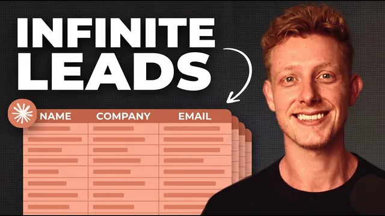
자동화2026-10-08· Ben AIClaude 스킬 하나로 리드가 끝없이 들어와요 (무료 템플릿)
Ben AI가 무료로 나눠 주는 Claude 리드 생성 스킬 하나로 리드 수집·자격 검증·정보 보강·개인화 아웃리치 메시지 작성까지 자동화하는 방법을 보여 줘요. 실제로 굴리고 있는 캠페인 세 가지와, 스킬을 만들기 전에 꼭 고민해야 할 네 가지(리드 소스·자격 요건·데이터 보강·메시지 템플릿)를 정리합니다.
리드 생성은 '스킬 하나'가 아니라 '실험 여러 개'예요메시지는 사람이 쓰고 Claude는 변수만 채워요소스가 데이터를 안 주면 조사 단계를 끼워 넣어요읽어보기 →- 자동화2026-10-08· 윤자동
AI 직원이 카톡 답장한다고? 4천 명 오픈채팅방에서 실제로 쓰는 법 공개
4천 명 오픈채팅방을 운영하는 윤자동이 라이브에서 카카오톡 자동화의 원리와 방법 네 가지(메신저봇R·카카오 CLI·윈도우 PC 카톡·리눅스 서버+아이리스)를 비교하고, 24시간 답장하는 AI 직원 '클과장'의 실제 구조와 관리 화면까지 공개해요. 계정 정지 위험과 운영 규칙도 본인 경험을 바탕으로 짚어 줍니다.
카톡봇은 읽기·생각하기·보내기 3단계로 나눠 보면 쉬워져요잘 만든 봇은 답하는 능력보다 입 다무는 판단이 핵심이에요정지 위험은 감수하고 시작해야 해요읽어보기 → 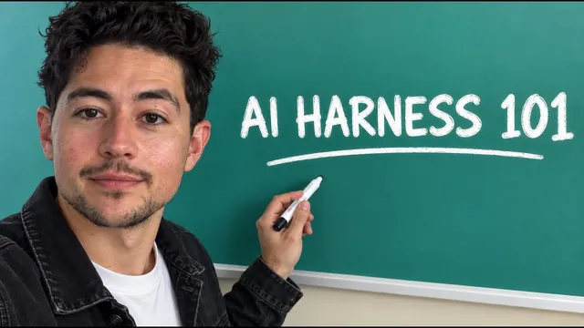
에이전트2026-10-07· Nick SaraevAI 하니스, 24분 만에 이해하기 (비전공자용)
Claude Code와 Codex는 AI 모델이 아니라 모델을 감싼 '하니스(harness)'예요. Nick Saraev가 하니스를 이루는 맥락·메모리·도구·검증·권한 다섯 가지와 그 위에서 도는 에이전트 루프, 그리고 앞으로 하니스가 어디로 갈지를 비전공자 눈높이로 풀어 줘요.
"어떤 모델을 쓰나"보다 "어떤 하니스에 넣었나"가 결과를 가를 수 있어요맥락 파일은 한 번 쓰고 계속 돌려받는 투자예요AI의 "좋아 보이네요"를 믿지 말고 확인 장치를 붙이세요읽어보기 →- 자동화2026-10-06· Ben AI
앤트로픽은 클로드 스킬을 진짜 이렇게 만듭니다
Ben이 Anthropic의 Claude 스킬 가이드와 모범 사례를 살펴보고 업무 자동화가 실제로 안정적으로 돌아가는 스킬을 만드는 8가지 방법을 정리했어요. 한마디로 "설명하지 말고 한 번 직접 해 보고 나서 스킬로 만들라"는 거예요.
스킬은 '설명'이 아니라 '시연'에서 나온다컨텍스트 창 관리가 곧 스킬 품질스킬은 5~10번 고쳐야 쓸 만해진다읽어보기 → 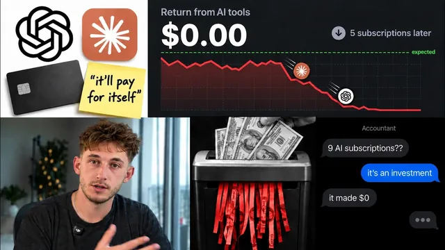
AI 소식2026-10-05· Nick Puru | AI AutomationAI 도입 100번 해보고 알게 된 것 전부
AI 파일럿 프로젝트의 95%가 측정 가능한 성과를 못 낸다는 MIT 연구와 100여 개 기업 도입 경험을 겹쳐 보면, 성공한 5%는 도구가 아니라 "어떤 숫자를 바꿀지 정하는 회의"에서 출발했어요. Nick Puru가 그 5%가 지키는 네 가지 순서를 정리해 줍니다.
실패의 시작은 기술이 아니라 '정하지 않은 숫자'도구 10개보다 공유된 기억 하나데모와 운영 사이에는 인증·예외·담당자가 있다읽어보기 →- 에이전트2026-10-05· Nate Herk | AI Automation
클로드로 안드레이 카파시를 한 명 더 만들었다
Nate Herk가 Andrej Karpathy의 블로그·강의·GitHub·X 게시물을 70만 단어 넘게 모아 위키로 정리했어요. 거기서 뽑은 7가지 교육 원칙을 Claude Code의 서브 에이전트(sub-agent)와 스킬(skill), 실행 관문 훅(hook)으로 바꾸는 네 단계를 공개합니다. 핵심은 사람을 흉내 내는 게 아니라 그 전문가가 생각하고 가르치는 방식을 복제해 내 프로젝트에 붙이는 거예요.
AI 품질은 모델이 아니라 시스템에 담긴 전문 지식이 결정해요원문 더미보다 '연결된 위키'가 핵심이에요"작동한다"는 말 전에 실행을 강제하는 장치가 신뢰를 만듭니다읽어보기 → 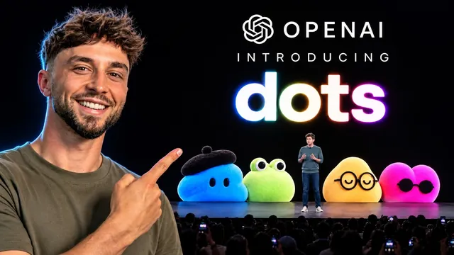
에이전트2026-10-05· Liam OttleyChatGPT 새 비즈니스 플랫폼 써봤다 — 갈아탈 만한가?
OpenAI가 Dev Day에서 'ChatGPT 비즈니스 플랫폼'을 내놓았어요. 팀 전체와 AI 에이전트가 한곳에서 일하는 형태인데, Liam Ottley가 자기 회사를 통째로 옮겨 써봤습니다. 결론은 이래요. 1인용 AI에서 여럿이 쓰는 AI로 가는 건 분명한 다음 단계지만, 옮기는 비용이 크니 작게 시작하고 우연이 아니라 의도를 가지고 고르라는 겁니다.
AI 도입의 진짜 난제는 '혼자 쓰기 → 팀 전체'로 넘어가는 지점이에요플랫폼은 편하지만 한번 들어가면 나오기 어려워요도구가 평준화될수록 값어치는 설정·전략·교육으로 옮겨갑니다읽어보기 →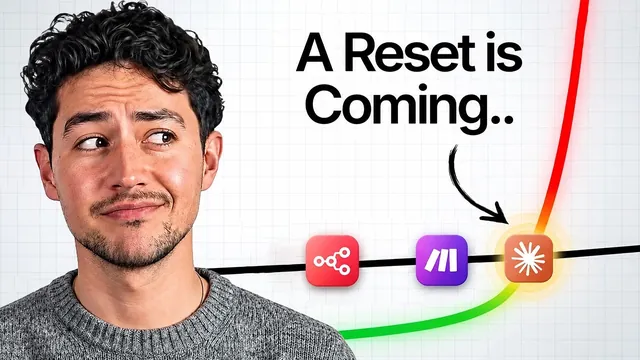
자동화2026-10-05· Nick Saraev2027년에도 AI 자동화가 돈이 될까?
AI 자동화로 1천만 달러 가까이 번 Nick Saraev가 "이 일은 영원하지 않아요"라고 말합니다. 그런데 결론이 의외예요. 모든 지식 노동이 자동화되는 세상이라면, 자동화를 해주는 쪽이 오히려 가장 오래 버틴다는 거죠. 2027년은 역사상 가장 돈이 되는 해이자 내리막의 시작점이 될 거라고 봅니다.
"만들 줄 안다"의 값은 빠르게 0에 가까워져요지식 격차로 버는 장사는 끝나갑니다자동화 산업은 오히려 오래 버팁니다, 대신 모습이 바뀌어요읽어보기 →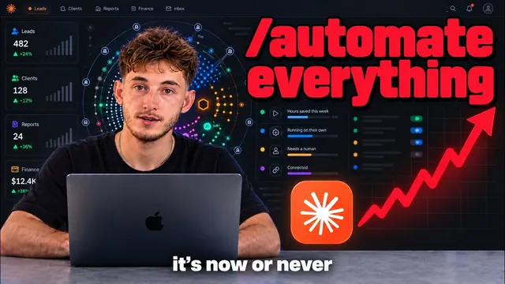
자동화2026-10-04· Nick Puru | AI Automation진짜예요, AIOS 한번 깔면 사업이 뒤집힙니다
3년간 약 100개 기업에 AI 시스템을 깔아 본 Nick Puru 팀이, 도구가 아니라 숫자에서 출발하는 AI 운영체제(AIOS) 도입 6단계를 공개했어요. 레버리지 찾기, 정직한 계산, 리더십 합의, 업무 감사, 작게 만들기, 팀 정착 순입니다. 실제 고객사 수치를 그대로 보여주는데, 목표에 못 미친 수치까지 숨기지 않았어요.
AI 도입은 툴이 아니라 숫자에서 시작해요가장 귀찮은 일과 가장 돈이 되는 일은 다릅니다실패는 기술보다 합의와 사람에서 나옵니다읽어보기 →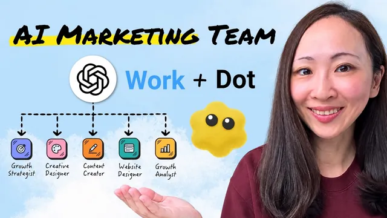
마케팅2026-10-03· Grace LeungChatGPT Work + Dot으로 AI 마케팅팀 만들기 (에이전트 + 스킬)
Grace는 ChatGPT Work 안에서 코딩 없이 스킬 몇 개와 전문 에이전트를 만들고 상시 비서 에이전트에게 Slack으로 일을 시켜 마케팅팀처럼 굴리는 전 과정을 가상의 어학 플랫폼 브랜드 하나로 보여 줍니다. 폴더 구성부터 광고, 랜딩 페이지, 2주치 소셜 콘텐츠, 리드 마그넷 캠페인까지 따라 할 수 있는 순서가 담겨 있어요.
맥락 파일이 먼저예요스킬은 절차, 에이전트는 판단이에요비서 에이전트는 자리를 비웠을 때 값어치가 커져요읽어보기 →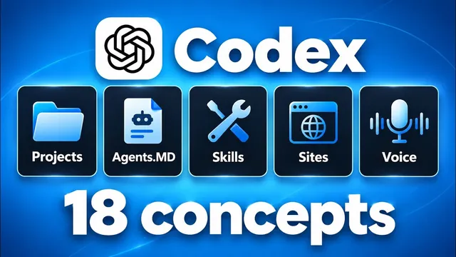
에이전트2026-10-03· Nate Herk | AI Automation코딩 몰라도 되는 Codex 개념 총정리
코딩을 몰라도 Codex를 바로 쓸 수 있게, Nate Herk가 18가지 핵심 개념을 정리했어요. 프로젝트와 agents.md부터 스킬, 서브에이전트, 예약 작업, 음성 모드까지 기초 → 환경 → 제어·사용자 지정 → 도구·규모 네 파트로 나눠서 실제 화면과 함께 설명합니다.
AI의 기억은 '파일'로 만들어요목표를 주고 물러나는 쪽이 더 잘 됩니다모든 작업에 최고 모델을 쓸 필요는 없어요읽어보기 →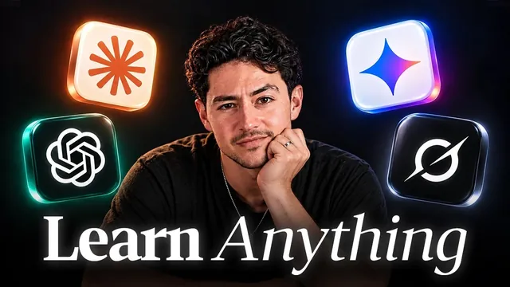
AI 소식2026-10-03· Nick SaraevAI로 어려운 걸 남보다 빨리 익히는 법
사람은 읽고 듣는 '소비'가 아니라 떠올리고 설명하고 직접 해보는 '산출'로 배웁니다. Nick Saraev가 대부분이 쓰는 '설명자' 말고, AI가 맡을 수 있는 나머지 9가지 학습 역할과 각각의 프롬프트를 정리했어요. 면접관, 지도 제작자, 소크라테스식 질문자, 시험관, 검사자, 청취자, 진단가, 스파링 파트너, 서기입니다.
'이해했다'는 느낌은 증거가 아니에요AI의 역할을 바꾸면 결과가 바뀝니다개별 실수가 아니라 뿌리를 고치세요읽어보기 →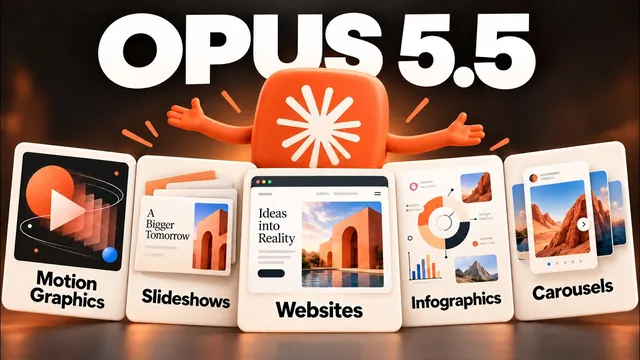
모델·도구2026-10-02· Ben AIOpus 5.5가 디자인 판을 갈아버렸다 (미친 활용 5가지)
Claude Opus 5.5와 데스크톱 앱에 들어온 Claude Design으로 디자인 시스템을 한 번 세팅하면, 영상 애니메이션부터 슬라이드, 랜딩 페이지, 소셜 캐러셀까지 브랜드에 맞게 빠르게 나옵니다. 반복되는 작업은 스킬과 예약 작업으로 넘기는 방법까지 보여줘요.
디자인 시스템 한 번이 이후 모든 결과물의 품질을 결정해요영상도 코드로 만들면 싸고 수정이 쉬워요레퍼런스와 제약이 품질을 좌우합니다읽어보기 →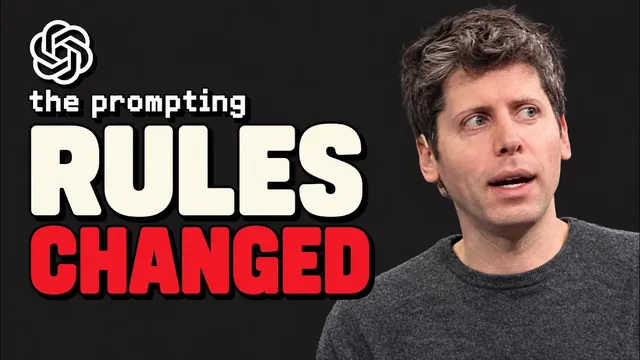
모델·도구2026-10-02· Nick Puru | AI Automation오픈AI 엔지니어가 직접 공개한 GPT-6 Astra 프롬프트법
OpenAI가 직접 공개한 GPT-6 Astra 프롬프트 가이드에서 Nick Puru가 6가지를 추렸어요. 자료를 주고, 글쓰기 스타일을 지정하고, "도와줄래?"를 실행 지시로 바꾸고, 완료 기준을 정의하고, "깊이 생각해" 문구를 지우고, 옛 맞춤 지침을 정리하라는 겁니다. 일부는 이전 모델에서 통하던 습관과 정반대예요.
더 똑똑한 모델일수록 옛 습관이 독이 돼요품질은 사고 설정이 아니라 입력에서 나옵니다'완료'를 정의하면 AI가 스스로 검수해요읽어보기 → AI 소식2026-10-01· 희야기 | HeeChan
AI 소식2026-10-01· 희야기 | HeeChanOpenAI 엔지니어가 말하는 AI 시대에 몸값이 폭등중인 사람의 특징 | 시대의 흐름 Ep.1
AWS에서 시작해 마이크로소프트·페이스북·스타트업을 거쳐 지금은 OpenAI에서 엔지니어링 리드로 일하는 Jay가, AI 시대에 몸값을 올리는 사람의 공통점을 이야기해요. 답은 생각보다 단순했어요. "끝까지 파고드는 호기심, 그리고 직접 만들어 보는 경험"이 결국 기회와 보상을 끌고 온다는 거예요.
호기심은 "다음 단계"까지 가야 몸값이 돼요스킬보다 모델의 빈틈을 아는 게 오래가요배움의 최단 경로는 외부 사용자에게 내놓는 제품이에요읽어보기 →- 모델·도구2026-10-01· Nate Herk | AI Automation
월 500달러 Codex Ultrafast 써봤다 — 핵심만 정리
월 500달러 플랜에서만 쓸 수 있는 Codex의 Ultrafast 모드를 직접 돌려봤어요. 속도 차이는 확실한데 한도 소모가 2~4배라, "급할 때 당기는 레버" 이상의 가치는 없다는 결론입니다.
빠른 모드의 가치는 '속도'가 아니라 '속도 대비 한도 소모'예요작업이 단순할수록 Ultrafast의 효율이 좋습니다같은 모델도 모드에 따라 결과 느낌이 달라질 수 있어요읽어보기 → 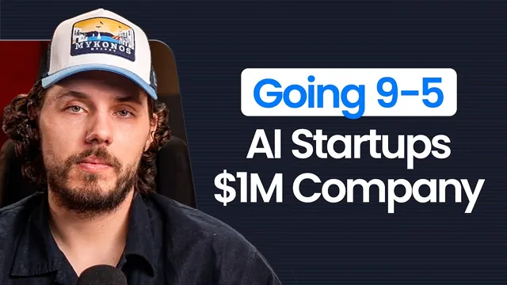
에이전트2026-10-01· Eugene Kadzin클로드 코드가 6개월 만에 내 사업을 죽였다
AI 에이전트 구현 에이전시를 8년간 운영해 온 Eugene Kadzina가 꺼낸 이야기예요. 앞으로 3~5년 안에 프리랜서나 고가 서비스 사업은 AI 에이전트에 밀리기 쉬우니, 돈이 모이는 더 큰 조직에 합류하는 편이 오히려 안전한 선택일 수 있다는 주장입니다. 본인도 "반박해 달라"고 전제를 깔아요.
"AI를 쓰는 사람 vs 안 쓰는 사람"은 과도기 비교예요고가 서비스의 경쟁자는 다른 에이전시가 아니라 구독형 소프트웨어일 수 있어요돈의 이동 방향을 보고 포지션을 정하는 게 전략이에요읽어보기 →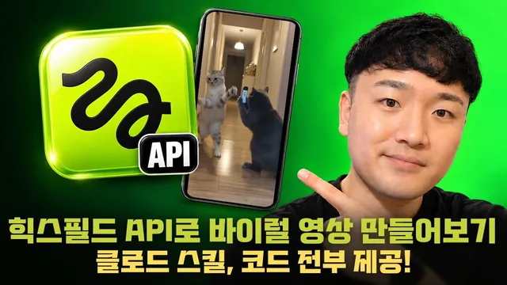
마케팅2026-09-30· 샘 호트만 : AI 엔지니어의 시선Higgsfield API를 이용해서 바이럴된 밈 영상을 대량으로 만들어보자 (코드, 스킬 전부 제공!)
레퍼런스 밈 영상과 사진만 넣으면 Claude가 영상을 분석하고 프롬프트까지 써서 새 밈 영상을 뽑아 주는 시스템이에요. Higgsfield API로 만들었고, 실제로 얼마가 들었는지 비용까지 공개합니다.
API는 사람 대신 주문서를 쓰는 프로그램이에요종량제는 테스트 설계가 곧 비용 관리입니다입출력을 이해하면 나머지는 AI가 짭니다읽어보기 →- 에이전트2026-09-30· Jack Roberts
Claude + Jev, 역대 가장 싼 에이전트 OS
Jack Roberts가 새로 나온 빠르고 저렴한 모델 Jev(자막 표기 기준)를 자기 에이전트 운영체제에 붙여서 돌려봤어요. 이메일 분류, 음성 비서, 릴스 편집, 청구서 확인, 의미 검색까지 실제 화면으로 보여줍니다. 결론은 이래요. 이 모델은 글을 길게 쓰게 하는 것보다, A냐 B냐를 고르고 점수를 매기는 분류기로 쓸 때 값어치가 가장 큽니다.
싼 모델은 '분류기'로 쓸 때 가장 쓸모 있어요비싼 모델 앞에 싼 모델을 문지기로 세우세요읽지 못하는 건 다른 싼 모델이 먼저 글로 바꿔 줍니다읽어보기 → - 마케팅2026-09-30· 빌더 조쉬 Builder Josh
월 1억 광고비를 AI가 굴립니다, 하루 10개 소재 만들고 1시간마다 끄고 켜는 방법 (퍼널랩스 엘런님)
퍼널랩스 앨런(추진호) 대표는 월 1억 원쯤 되는 광고비 집행을 AI에게 맡기고 있어요. 7년간 쌓은 세일즈 노하우를 규칙으로 넣어 둔 덕분입니다. 그 자동화 구조와 함께, "고객이 어떤 마음일지 상상하는 힘"이라는 파는 기술 이야기를 같이 다룹니다.
AI 광고 운영은 '규칙 + 판단 기준'이 만들어요사람 검수를 줄이는 대신 손실 상한을 설계하세요경쟁이 늘수록 전환율이 곧 광고 여력입니다읽어보기 → 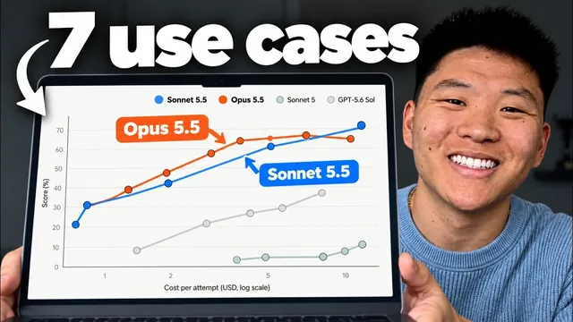
모델·도구2026-09-30· Nate Herk | AI AutomationSonnet 5.5 vs Opus 5.5 붙여봤다 — 핵심만
Nate Herk가 같은 프롬프트로 Sonnet 5.5와 Opus 5.5를 7가지 실전 과제에 돌려서 비교했어요. 결론은 이렇습니다. 결과 기준이 명확하면 Sonnet, 모호하고 창의적인 목표면 Opus. 비용은 Opus가 대략 두 배예요.
프롬프트가 모호할수록 Opus의 값어치가 커져요스킬이 있으면 모델 격차가 줄어듭니다한 번 더 시키는 비용을 계산에 넣으세요읽어보기 →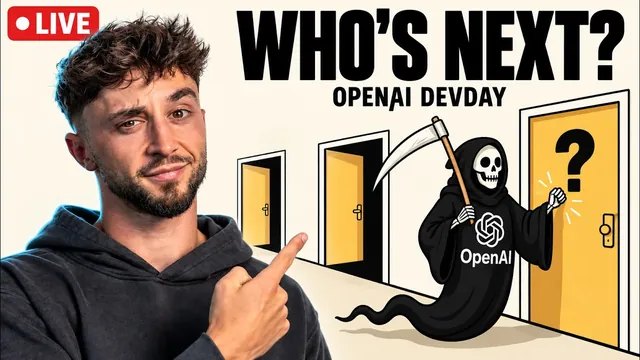
에이전트2026-09-30· Liam Ottley오픈AI DevDay 2026, 팀원들과 실시간 리액션
Liam Ottley 팀이 OpenAI DevDay 2026 키노트를 라이브로 보면서 반응한 영상이에요. 24시간 일하는 에이전트 "dots", 팀 협업 공간 "spaces", 더 싸고 빠른 GPT 6.1 Soul과 ultra fast, 개발자용 agents API와 마켓플레이스까지 정리하고, AI 에이전시가 이 변화를 어떻게 기회로 쓸지 이야기합니다.
AI가 도구에서 '위임받는 직원'으로 넘어갑니다속도와 가격이 같이 내려가면 쓰는 방식이 바뀌어요연구소가 개발을 가져가도 서비스의 값어치는 남아요읽어보기 →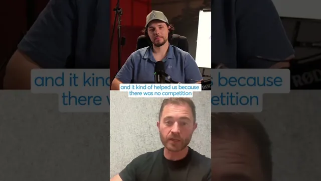
마케팅2026-09-30· Eugene KadzinARR 1,500만 달러 에이전시, 고객 확보 전략 전부 공개
연 매출 1,500만 달러 SEO 에이전시 창업자가 0에서 첫 100만 달러까지 끌어올린 유일한 핵심 채널은 구글 광고였다고 말합니다. 가격 공개, 구매 버튼, 셀프 온보딩, 선결제 덕분에 번 돈을 전부 광고에 다시 넣을 수 있었어요.
검색하는 사람에게 광고를 보여주는 게 가장 논리적이에요가격 공개와 구매 버튼이 신뢰를 앞당깁니다선결제는 광고 재투자의 연료입니다읽어보기 →- 에이전트2026-09-30· Nick Puru | AI Automation
Codex 사용량 한도, 두 번 다시 안 터뜨리는 법
Nick Puru가 Codex 사용량 한도를 훨씬 오래 쓰는 방법을 정리했어요. 사용량을 눈으로 확인하고, 작업에 맞는 작은 모델을 고르고, 채팅을 새로 열고, 프롬프트를 구체적으로 쓰는 게 핵심입니다. 그리고 "서브에이전트로 아끼라"는 흔한 조언은 오히려 토큰을 더 태울 수 있다고 해요.
채팅 길이가 곧 비용이에요비싼 모델은 어려운 일 전용으로 쓰세요'아끼는 기능'이 오히려 토큰을 태울 수 있어요읽어보기 → - 모델·도구2026-09-30· Nick Saraev
월 500달러 ULTRAFAST로 돌린 GPT-6 Astra, 좀 무섭다
OpenAI의 월 500달러 Pro 플랜에 들어 있는 Astra Ultrafast(최대 초당 300토큰)로 앱·웹사이트·게임을 몇 분 만에 완성하는 과정을 보여 줍니다. 그리고 이 속도를 사업에 어떻게 쓸 수 있을지까지 제안해요.
속도는 '몇 번 더 시도할 수 있느냐'를 바꿉니다테스트 포함 시간이 진짜 기준이에요서비스 사업자에게는 '상담 중 즉석 제작'이 새 무기입니다읽어보기 → - 에이전트2026-09-30· Nick Puru | AI Automation
고민할 것 없다, 승자는 Grok Bot이다
SpaceX가 내놓은 AI 직원 앱 Grokbot을 들여다봅니다. 클라우드 컴퓨터에서 AI 직원이 24시간 일하게 해주는 서비스인데, OpenClaw와 Hermes가 보여준 "항상 켜진 에이전트"를 비개발자도 몇 분 만에 쓸 수 있게 만들었어요. 가격도 월 20달러 수준까지 내려왔습니다.
항상 켜진 AI 직원의 진입장벽이 서버 관리에서 '앱 설치'로 내려왔어요봇의 성패는 직무 설명 한 문장에 달려 있어요'나'를 알려주는 문서와 '내 고객'을 알려주는 CRM은 별개예요읽어보기 → - 에이전트2026-09-28· Nate Herk | AI Automation
GPT-6 Astra에게 1만 달러 주고 주식을 맡겨봤다
Nate Herk가 GPT-6 Astra에게 실제 돈 1만 달러를 맡겨서 7거래일 동안 주식 거래를 시키고 S&P 500과 수익률을 겨뤘어요. 결과는 9,900달러로 마감해 같은 기간 S&P 500(9,980달러 상당)에 졌습니다. 에이전트가 초반에 너무 소극적이었던 점과, 모델이 직접 주문을 거부한 문제가 핵심 교훈으로 남았어요.
여러 번 깨어나는 에이전트는 '인수인계 메시지'로 하나처럼 만들어요모델이 거부하는 단계는 '판단'과 '실행'을 분리해서 풉니다보수적인 기본값은 '아무것도 안 하는 자동화'가 돼요읽어보기 → - 자동화2026-09-28· Liam Ottley
Jev로 돈 버는 방법 10가지, 라이브로 쪼개본다
Liam Ottley가 라이브 방송에서 Typesafe AI의 새 모델 Jev를 딥리서치로 해부하고, 이 모델로 돈 버는 방법을 정리했어요. 결론은 이렇습니다. Jev는 "글을 쓰는 모델이 아니라 판정하는 모델"이고, 기존 에이전시 상품을 더 싸게 바꾸는 것보다 데이터를 모으고 분류해 파는 사업에서 진짜 기회가 열립니다.
'판단'이 공짜가 되면 가치는 데이터로 이동해요샘플 검수에서 전수 검수로 넘어갑니다고객은 기술 이름이 아니라 결과를 삽니다읽어보기 → - 자동화2026-09-28· 샘 호트만 : AI 엔지니어의 시선
집에서 돌리는 최신 로컬 AI 모델, 콘텐츠 자동화에 어디까지 쓸 수 있을까? (워크플로우, 프롬프트 제공)
32GB VRAM GPU 한 대로 최신 로컬 AI 모델 네 종류(이미지·아바타·영상·음악)를 직접 돌려 봤어요. 콘텐츠 자동화 파이프라인에 바로 넣어도 되는 모델과, 아직 사람이 붙어야 하는 모델을 가려낸 실측 리뷰입니다. 결론은 아바타(인피니티토크)와 음악(V2)은 합격, 이미지(Qwen Image 2.1)는 불합격, 영상(미니맥스 H3)은 프롬프트 연구가 더 필요하다는 거예요.
"돌아간다"와 "자동화에 쓸 수 있다"는 달라요로컬 모델의 진짜 값어치는 비용보다 '제약 없음'이에요영상 품질의 병목은 모델보다 프롬프트예요읽어보기 →  모델·도구2026-09-27· Tao Prompts
모델·도구2026-09-27· Tao PromptsClaude Opus 5.5로 AI 영상 한 단계 끌어올리기
Tao Prompts는 AI 영상이 모션 그래픽 속 글자와 오버레이를 정밀하게 다루지 못한다고 봐요. 그래서 글자 없는 영상을 먼저 만들고 그 위에 Claude Opus 5.5가 코드로 그래픽과 효과음을 얹는 작업 순서를 보여 줍니다.
AI 영상의 약점은 영상 품질이 아니라 글자 통제예요영상 모델과 Claude Opus의 역할을 나누면 결과물이 정확해져요Claude 안에서 생성부터 효과음까지 이어져요읽어보기 →- 에이전트2026-09-27· 빌더 조쉬 Builder Josh
옵시디언 국내 최고 권위자가 녹음 1,400개와 노트 1만 개를 AI로 굴리는 방법 (커맨드스페이스 구요한님)
옵시디언 전도사로 활동하는 커맨드스페이스 구요한님이 녹음 1,400개와 노트 1만 개를 AI가 읽을 수 있는 지식 체계로 어떻게 설계했는지 보여 줘요. 목차·메타데이터·번호 체계를 사람이 먼저 잡아 두니 에이전트가 그 위에서 분류와 연결을 대신 맡게 됐다는 이야기입니다.
설계가 먼저 있어야 AI가 분류를 맡을 수 있어요볼트를 저자 기준으로 나누면 신뢰도가 섞이지 않아요위임의 범위는 내가 아는 범위까지예요읽어보기 → - 모델·도구2026-09-27· Nick Saraev
AI 뉴스 좀 끊으세요
AI 뉴스를 매일 따라가는 건 교육이 아니라 오락에 가깝고, 그 뉴스 대부분은 돈을 받고 부풀려진 거예요. Nick Saraev는 뉴스를 끊고, 필요한 걸 직접 검색해 배우고, 모델이 바뀌어도 가치가 떨어지지 않는 영업 같은 소프트 스킬에 집중하라고 말합니다.
소수점 버전 업은 업무를 바꾸지 않아요화제성 뒤에는 인센티브가 있습니다도구 지식은 감가상각되고, 영업 능력은 복리로 쌓여요읽어보기 → - 에이전트2026-09-27· Eugene Kadzin
이 사람 때문에 일자리가 사라지고 있다
회의 예약 AI 에이전트로 GTM 엔지니어와 대행사, 프리랜서 일자리를 없애고 있다는 비판에 개발자가 답합니다. "죄책감은 전혀 없습니다. 적응하지 못하면 도태될 뿐이고, 위기에는 항상 기회가 있어요." 짧은 인터뷰 클립이고, 핵심은 피해자 모드 대신 내 강점을 다시 찾으라는 메시지예요.
AI가 대체하는 건 '쉽고 반복적인 부분'이에요피해자 모드는 가장 비싼 선택입니다기술이 느리게 도는 시장을 노리세요읽어보기 → - 비즈니스2026-09-26· Liam Ottley
AI·사업·소싱 질문 다 받습니다 — @thesourcingguy와 Q&A
Liam Ottley가 중국 소싱 에이전시를 운영하는 Isaac(the sourcing guy)과 함께 진행한 라이브 Q&A예요. AI를 활용한 아웃바운드 영업, AI 서비스 사업을 처음 시작해 월 1만 달러까지 키우는 법, 고객이 실제로 돈을 내는 이유, 그리고 Isaac의 저비용 이커머스 제품 전략(80/20 원칙)까지 한 번에 다룹니다.
고객은 모델명이 아니라 절감액과 역량에 돈을 냅니다핵심 업무를 뜯기보다 바깥에서 시작하세요완전히 새로 만들기보다 검증된 80%에 20%를 더하세요읽어보기 → - AI 소식2026-09-26· Jack Roberts
20달러 Grok Bot이 10배 좋아졌다… 저 그만할게요
Jack Roberts가 비용이 70% 저렴해지고 새 기능이 붙은 GrokBot을 실제 업무 사례 5가지로 테스트했어요. API 없는 서비스 연결, 데이터 분석, 음성 대화, 다른 앱 대신 조작하기, 화면 녹화로 작업 가르치기까지 다룹니다. (이 영상은 xAI의 후원을 받았고, 테스트는 직접 한 것이라고 밝혔어요.)
API가 없다는 게 더 이상 자동화의 벽이 아니에요가져오는 것보다 해석이 돈이 됩니다설명 대신 보여주는 방식으로 업무를 넘깁니다읽어보기 → - 모델·도구2026-09-25· Ben AI
GPT-6 + GPT Sites, 이제 뭐든 만들 수 있다
Ben AI 채널의 Ben이 ChatGPT의 새 플러그인 'Sites'로 다섯 가지를 직접 만들어 보여 줍니다. 웹사이트, 내부 앱, 자동 보고서, 대화형 프레젠테이션, 자동 갱신 대시보드예요. 그리고 GPT-6 Astra 같은 강력한 모델에서 한 번에 좋은 결과를 뽑는 프롬프트 작성법까지 정리합니다.
강력한 모델일수록 첫 프롬프트가 비용을 좌우해요'만들기'보다 '돌아가게 두기'가 진짜 가치예요광고 많고 불편한 SaaS는 이제 직접 대체할 수 있어요읽어보기 → - AI 소식2026-09-25· Nate Herk | AI Automation
Opus 5.5가 영상 편집을 바꿔놨다 (무료 스킬 포함)
Nate Herk가 Opus 5.5와 무료 도구 하이퍼프레임(HyperFrames)으로 자연어 프롬프트 하나만 써서 영상을 편집한 사례들을 보여 줍니다. 모션 그래픽, 사운드, B-roll까지 다 들어가요. 그리고 AI 영상 편집에서 늘 지키는 다섯 가지 원칙(받아쓰기, 불필요한 부분 잘라내기, 계획, 스킬, 검증 루프)을 정리합니다.
정확한 지시보다 '원하는 감정'을 전달해도 됩니다좋아하는 결과물을 분석시켜 스킬로 만드는 게 품질을 복제하는 방법이에요검증 루프가 첫 결과물의 품질을 결정해요읽어보기 → - 에이전트2026-09-25· Nick Saraev
클로드 코드에 3만 1,141달러 태워서 배운 것
몇 달 동안 Claude Code에 3만 달러 넘게 쓴 Nick Saraev가, 처음 시작할 때 알았으면 좋았을 요령 15가지를 쉬운 것부터 어려운 순으로 정리했어요. 결과의 일관성을 확보하는 평가 루프, 컨텍스트 창 관리, 병렬 작업과 저렴한 모델 활용, CLAUDE.md 운영, 장애 대비용 백업 모델까지 다룹니다.
AI 결과물은 한 번이 아니라 성공률로 판단해야 해요컨텍스트는 비용이자 지능이에요세세하게 통제하기보다 '완료 기준'과 '진단 먼저'로 맡기세요읽어보기 → - 모델·도구2026-09-24· Nate Herk | AI Automation
Opus 5.5를 effort 단계별로 전부 테스트했다
Nate가 Opus 5.5에 같은 프롬프트를 넣고 effort 레벨 6단계(Low, Medium, High, Extra, Max, UltraCode)를 전부 돌려 결과물과 시간, 비용을 비교했어요. 결과가 의외입니다. 가장 비싼 Max가 아니라, 비용이 그 절반 정도인 Extra가 1등이었어요.
가장 비싼 설정이 가장 좋은 결과는 아니에요effort를 올리면 달라지는 건 '상호작용의 깊이'였습니다기본값은 Medium, 올리는 기준은 '뒤져야 할 자료의 양'이에요읽어보기 → - 모델·도구2026-09-24· Jack Roberts
Opus 5.5로 클로드 디자인이 10배가 됐다
Jack Roberts가 Opus 5.5로 슬라이드, 웹사이트, 숏폼 영상, 로고 애니메이션까지 수정 없이 한 번에 뽑아낸 과정을 7단계로 정리했어요. 핵심은 웹 크롤링 툴 Firecrawl로 브랜드 정보를 가져온 뒤 Opus 5.5에 넘기는 조합입니다.
브랜드 정보 추출 + 디자인 모델 조합이 핵심이에요정지 이미지에서 루프 애니메이션으로 기준이 바뀝니다한 번 만든 스타일을 시스템으로 저장해야 확장됩니다읽어보기 → - 모델·도구2026-09-24· Ben AI
Opus 5.5 vs Fable 5.1, 실전 7가지로 붙여봤다 (상대가 안 됨)
Ben AI 채널의 Ben이 Claude의 신모델 Opus 5.5와 Fable 5.1을 실제 업무 7가지에 똑같이 돌려 봤어요. 슬라이드 제작, 디자인, 조사, 문서 작성, 데이터 분석, 세컨드 브레인 분석까지요. 결과는 Opus 5.5가 품질·비용·속도 대부분에서 이겼지만, 맥락과 데이터가 방대한 작업만큼은 Fable 5.1이 더 깊게 파고들었습니다.
벤치마크보다 내 업무로 직접 비교하세요토큰을 더 쓴 모델이 더 비싼 건 아니에요맥락 양이 모델 선택의 기준이 됩니다읽어보기 → - 모델·도구2026-09-23· Nate Herk | AI Automation
Opus 5.5 vs GPT-6 Sol, 실전 10가지 맞대결
Nate Herk가 Claude Opus 5.5와 GPT-6 Sol에게 10가지 실제 업무를 동일한 프롬프트로 맡겨 봤어요. 웹사이트 제작부터 3D 게임, 코드베이스 검토, 브라우저 작업까지요. 결과는 가격이 3배 비싼 Opus 5.5가 7대 1로 압승이었지만, 코드 검토처럼 정형화된 작업에서는 Sol이 20분의 1 비용으로 더 나은 결과를 낸 역전도 있었습니다.
비싼 모델이 항상 이기지 않아요작업 성격에 따라 모델을 나눠 써야 합니다여러 에이전트를 같은 작업 공간에서 돌릴 때는 격리 지시가 필수예요읽어보기 → - 자동화2026-09-23· Ben AI
Jev로 클로드를 10배 쓰는 법
ChatGPT 공동 창업자 중 한 명이 내놓은 새 AI 모델 'Jev'는 텍스트를 쓰는 대신 '결정'만 출력합니다. 그래서 일반 LLM보다 최대 200배 빠르고 400배 저렴하게 대량 분류·라우팅을 처리해요. Claude와 묶어 쓰면 리드 스코어링부터 이탈 예측, 브라우저 자동화까지 예전엔 비용 때문에 포기했던 자동화가 가능해집니다.
분류와 라우팅은 텍스트 생성이 아니에요저렴함이 새로운 활용 사례를 만듭니다Jev 단독이 아니라 Claude와 묶어야 진짜 힘이 나옵니다읽어보기 → - 자동화2026-09-23· Nick Puru | AI Automation
이제 GPT-6 Astra가 당신 사업을 대신 굴린다
AI 도입 컨설팅을 하는 닉 푸루(Nick Puru)가 ChatGPT 데스크톱 앱과 GPT-6 Astra로 "말만 하는 AI"를 "실제로 일하는 AI 팀"으로 바꾸는 설정 전체를 보여 줍니다. 메모리, 스킬, 플러그인, 전문 워커, 예약 작업을 차례로 붙여요. 결론은 마법 버튼이 아니라, 워크플로우 하나를 세 번 연속 성공시킨 뒤 넓혀 가라는 겁니다.
AI를 '쓰는' 회사와 AI '네이티브' 회사는 다릅니다많이 붙일수록 오히려 나빠져요자동화의 성패는 '범위'에서 갈립니다읽어보기 → - 에이전트2026-09-22· 투쏠ㅣAI 에이전트
이제 영상 편집하는데 시간낭비하지 마세요
캡컷(CapCut)으로 촬영과 1차 자막까지는 수동으로 하고, 그 이후 인트로 편집(컷 전환, 애니메이션, 스타일)은 캡컷 프로젝트의 드래프트 파일 경로를 직접 지정한 AI 에이전트에게 맡기는 반자동 편집 워크플로우예요. 처음부터 끝까지 실제 화면으로 보여 줍니다.
편집 툴 자체의 AI 자막 기능을 믿지 마세요파일 경로 하나가 에이전트 자동화 여부를 가릅니다가이드와 수치 기준이 없으면 AI는 대충 만들어요읽어보기 → - 에이전트2026-09-21· Liam Ottley
46명 회계법인을 AI로 4일 만에 재설계했다
유튜버 Liam Ottley가 영국 세무·회계 자문사 Thomas and Co를 찾아가, 나흘 동안 "VAT 워킹페이퍼" 작성 업무를 AI 에이전트 플랫폼 Kylon으로 자동화하는 과정을 그대로 따라간 브이로그예요. 고객 계좌에 찍힌 숫자를 증빙과 대조하는 그 문서 말입니다.
자동화 전에 반드시 '측정'부터 하세요규제 산업 자동화의 진짜 장벽은 기술이 아니라 '암묵지'와 '책임 소재'입니다음성 인터뷰로 암묵지를 옮기는 방식이 텍스트보다 훨씬 빨라요읽어보기 → - 자동화2026-09-20· Nick Saraev
AI 좋아하는데, GPT-6 Astra는 솔직히 무섭다
AI 자동화 채널을 운영하는 닉 사라예프(Nick Saraev)가 GPT-6 Astra의 위험한 시연 장면을 보여 줍니다. AI를 사랑하는 자신조차 인정할 수밖에 없는 이 기술의 어두운 이면과, 지금이 그 흐름을 바꿀 수 있는 마지막 기회라는 경고예요.
AI의 '쓸모'는 능력의 일부일 뿐, 나머지는 통제되지 않은 위험 지대예요신기술의 부작용은 초기에 가장 크고, 선용에는 오랜 시간이 걸립니다AI 위험 논의를 '이상한 사람' 취급으로 막는 사회적 압력이 실재합니다읽어보기 → - 모델·도구2026-09-19· Nate Herk | AI Automation
Jev를 실전 12가지로 써봤다 — 솔직한 후기
"글을 쓰지 않고 오직 예/아니오·분류·점수 같은 결정만 내리는" 신형 AI 모델 Jev를 이메일 분류부터 실시간 트레이딩 봇까지 12가지 실전 사례로 테스트했어요. 대량 반복 판단 업무에서 기존 모델 대비 압도적인 속도·비용 우위를 데이터로 보여 줍니다.
'결정 전용'이라는 좁은 역할이 오히려 강점이에요대량·반복 판단일수록 비용 격차가 기하급수적으로 벌어집니다속도와 비용이 좋아졌다고 그대로 신뢰하면 안 돼요읽어보기 → - 모델·도구2026-09-18· Jack Roberts
GPT-6 Astra로 자비스를 만들었다… 이건 좀 미쳤다
유튜버 Jack Roberts가 GPT-6 Astra로 만든 "에이전틱 OS"를 시연합니다. Claude·Codex·이메일·사진·캘린더·재무 정보를 하나의 로컬 메모리에 모으고, 음성 명령으로 일정을 잡거나 이미지·영상을 생성하고 웹사이트까지 직접 편집·빌드하는 개인·비즈니스 운영체제예요.
"연결 → 정리 → 실행"이 에이전틱 OS의 본질이에요이미 연결된 도구를 재사용하는 설계입니다수동 메모리 입력 + 매직 서치의 조합이 실용적이에요읽어보기 → - 모델·도구2026-09-18· Ben AI
GPT-6 Astra + GPT Work, 판이 바뀐다
GPT-6(Astra 모델)과 챗GPT Work를 결합하면 프롬프트 한 번으로 인터랙티브 대시보드, 엑셀·구글시트 모델, 조간 브리핑, SNS 인포그래픽, 웹사이트까지 만들 수 있어요. 실제 화면을 보여 주며 각 사용법과 프롬프트 짜는 법을 설명합니다.
"무엇을"보다 "왜"를 설명해야 해요레퍼런스 이미지나 링크 하나가 긴 설명보다 강력합니다브레인덤프 → 구조화 스킬로 프롬프트 품질을 끌어올릴 수 있어요읽어보기 → - 에이전트2026-09-18· 빌더 조쉬 Builder Josh
회의록 만드는 회사가 자기 팀을 통째로 AI로 복제한 이유 (feat. 여울님, 현제님)
연매출 40억 규모의 AI 회의록 스타트업 티로(Tiro)는 팀원 12명 전원에게 자신을 복제한 개인 AI 에이전트를 하나씩 붙여 줬어요. 소울(말투)·위키(개인 데이터)·온톨로지(회사 공용 규칙) 3계층으로 구성하고, 회사 업무의 98%를 시뮬레이션하는 것을 목표로 운영하고 있습니다.
역할별 에이전트가 아니라 개인별 복제 에이전트를 만드세요모든 규칙을 온톨로지로 만들 필요는 없어요조직의 진짜 성장 병목은 에이전트가 아니라 사람이에요읽어보기 → - 자동화2026-09-18· Nick Puru | AI Automation
원가 0원으로 AI 웹사이트 팔아 마진 남기는 법
AI로 20분 만에 홈페이지를 뽑아 지역 업체에 완전 무료로 먼저 던져주고, 월 몇백 달러짜리 유지보수 계약으로 발을 들인 다음 자동화·컨설팅 같은 진짜 돈 되는 서비스로 넘어가는 영업 구조예요. 리모델링 업체 실제 사례로 처음부터 끝까지 보여 줍니다.
무료는 손해가 아니라 진입 장벽 제거예요매출 규모보다 매출의 분산이 사업의 맷집을 만듭니다업종 선택 하나가 한 해 성과 전체를 좌우합니다읽어보기 → - 모델·도구2026-09-17· Ben AI
앤트로픽이 소상공인용 클로드를 내놨다 (스킬 44개)
Anthropic이 44개 스킬·35개 커넥터로 확장된 Claude "Small Business" 플러그인을 새로 내놨어요. 설치 방법부터 가장 쓸모 있는 10개 스킬, 커스터마이징 방법, 자동 실행(스케줄링)까지 실제 화면으로 보여 줍니다.
모든 스킬이 하나의 메모리를 공유해요"Record a skill"이 커스터마이징의 게임체인저입니다스케줄드 태스크로 이어지면 완전 자동화가 돼요읽어보기 →  마케팅2026-09-16· 오분디마
마케팅2026-09-16· 오분디마"마케팅의 판도가 바뀐다" 클로드 코드로 기획부터 집행까지 에이전틱하게 끝내는 법 | 빌더 조쉬 김승권 대표 | 맠해팅 EP.11
빌더 조쉬 김승권 대표가 클로드 코드로 카드뉴스 에이전트 팀을 만드는 과정을 직접 보여 주면서, 마케팅이 기획부터 집행까지 에이전틱하게(AI가 스스로 판단하고 도구를 써서 일을 이어 가는 방식으로) 바뀌는 흐름과 마케터가 먼저 손대야 할 두 가지 도구, 그리고 조심할 점을 정리한 인터뷰입니다.
에이전트는 팀으로 일을 시켜야 품질이 올라가요서브 에이전트는 정규직, 스킬은 프리랜서로 구분하면 편해요마케팅 자동화는 기획에서 측정까지 이미 이어지고 있어요읽어보기 →- 모델·도구2026-09-16· Nick Puru | AI Automation
GPT-6 Astra + DeepSeek 4.1 = 최전선 조합
"DeepSeek이 GPT-6 Astra보다 80배 싸다"는 마케팅 문구를 실제 실무 작업 세 가지로 검증했어요. 웹사이트, 세일즈덱, 제안서요. 결과는 진짜 절감 폭이 10배였고, 그 차이만큼 정확도와 신뢰도에서도 차이가 났습니다.
마케팅 숫자와 실측 숫자는 달라요싼 모델일수록 '지어내는' 리스크가 큽니다'만들기'와 '변형하기'를 분리하면 비용과 품질을 동시에 잡아요읽어보기 → - 에이전트2026-09-16· Nate Herk | AI Automation
Grok Bot이 내 메일함을 관리한다 (성격까지 있음)
이메일을 자동으로 분류·정리해 주는 AI봇, 그리고 아예 자기만의 이메일 주소를 갖고 메일이 오면 스스로 깨어나 답장하는 AI봇을 그록봇(Grok Bot)으로 각각 만드는 전 과정을 실제 화면으로 보여 줍니다. 라우팅 규칙 설계부터 Agent Mail 연동, 웹훅 인증, 여러 인박스가 섞이지 않게 필터링하는 법까지요.
자동화보다 분류 기준 설계가 먼저예요전용 이메일 주소는 봇을 '이벤트로 깨어나는 존재'로 만듭니다노코드 자동화도 결국 약간의 코드가 필요한 지점이 있어요읽어보기 → - 자동화2026-09-16· Nate Herk | AI Automation
사용량 안 잡아먹는 GPT-6 Astra 자동화 만들기
Codex 자동화를 계속 켜 두면 구독 사용량이 깎입니다. 대신 Codex로 자동화 코드를 만들어 trigger.dev에 올려 독립 실행시키는 3가지 패턴(예약형·웹훅형·SDK형)을 실습으로 보여 줘요.
자동화를 만드는 도구와 실행하는 도구를 분리하세요결정론적이냐 아니냐를 먼저 판단하세요API 키는 플러그인이 아니라 .env 파일에 모아 두세요읽어보기 → - 자동화2026-09-16· Ben AI
앤트로픽이 공개한 최상위 AI 기업들의 작업 방식
Anthropic이 공개한 고객 사례집을 분석해 봤더니, AI 도입에 성공한 Notion·Zapier·DoorDash 같은 "AI 퍼스트" 기업들은 전부 같은 8가지 원칙을 따르고 있었어요. 이 영상은 그 원칙들을 사업주, AI 에이전시, 사내 AI 챔피언 세 관점에서 어떻게 적용할지 정리합니다.
AI 도입은 위에서 아래로 흘러요AI의 성과는 "접근권 + 데이터 + 맥락"의 곱셈입니다가장 큰 ROI는 "원래 안 하던 일"에서 나옵니다읽어보기 → - AI 소식2026-09-15· Eugene Kadzin
이제 웹사이트로는 못 먹고삽니다
서비스형 비즈니스는 앞으로 10년도 살아남을 겁니다. 그런데 그 안에서 가격은 계속 무너져요. 실제로 풀스택 웹사이트 제작 비용이 30~40만 달러에서 3만 달러로 떨어졌다는 이야기와 함께, "그래도 사람이 필요한 이유"를 설명합니다.
던닝-크루거 효과가 서비스업의 방패가 됩니다AI 도입 속도는 지역과 집단마다 완전히 달라요일은 살아남아도 마진은 무너집니다읽어보기 → - 에이전트2026-09-15· Nick Saraev
돈 한 푼 안 내고 AI 에이전트 쓰는 법
"프리버프(Freebuff)"라는 신생 플랫폼은 신용카드 없이, 광고만 보면 GPT·GLM·딥시크 같은 프론티어 AI 코딩 에이전트를 하루 최대 20시간까지 공짜로 쓰게 해줍니다. Nick이 직접 사이트 제작과 게임 제작을 시켜 보며 이 "광고로 값을 치르는 AI 코딩" 모델이 실제로 쓸 만한지 확인해요.
광고 기반 과금이 AI 접근성 격차를 좁힐 수 있어요무료 챗봇 모델도 코딩 에이전트로 전환하면 가치가 달라져요결과물의 완성도보다 "누구나 접근 가능해졌다"는 구조 자체가 뉴스예요읽어보기 → - AI 소식2026-09-14· Nick Puru | AI Automation
웹사이트 만드는 법 그만 배우고, 파는 법을 배우세요
"AI로 웹사이트 만들어서 몇천 달러에 팔아라"는 조언은 빌드가 아니라 파는 방식 자체가 잘못됐다는 게 요지예요. 완성된 웹사이트 전체가 아니라 섹션 하나만 무료로 미끼로 던지고, 진짜 돈은 그 뒤에 붙는 월 정기 서비스에서 나온다는 6단계 영업 방법론입니다.
완제품을 무료로 주지 마세요웹사이트는 미끼일 뿐, 진짜 돈은 월정액 서비스예요아웃리치는 통화를 요구하지 않는 두 문장으로읽어보기 → - 자동화2026-09-14· Eugene Kadzin
13만 5천 달러짜리 드림카를 샀습니다
자동화 채널 운영자 Eugene Kadzina가 오랜 꿈이었던 Audi RS7을 13만 달러에 구매하는 하루를 브이로그로 기록했어요. 업무 자동화나 비즈니스 인사이트는 없는 개인 소비 콘텐츠입니다.
큰 지출은 표면가가 아니라 총비용으로 비교했어요용도가 겹치지 않으면 굳이 하나로 통합하지 않았어요구매 전 이미지 생성 AI로 결과물을 미리 확인했어요읽어보기 → - 에이전트2026-09-14· Ben AI
토큰 한도 다시 안 터뜨리는 Fable 5.1 꿀팁 6가지
Claude(Fable 5.1) 같은 강력한 모델이 순식간에 토큰 한도를 태우는 진짜 이유와, 서브에이전트 모델 지정 한 줄부터 대화 습관까지 토큰 사용량을 최대 90%까지 줄이는 6가지 실전 팁입니다.
서브에이전트 모델 지정 한 줄이 가장 확실한 절감 포인트예요토큰을 많이 준다고 결과가 좋아지는 게 아니라 오히려 나빠져요Anthropic 가이드가 프롬프트 설계의 기준을 줍니다읽어보기 → - 에이전트2026-09-14· Jack Roberts
지금 당장 챙겨야 할 깃허브 레포 7개 (GPT-6 Astra)
Jack Roberts가 최근 한 달 사이 화제가 된 깃허브 오픈소스·도구 7개를 실제로 켜서 시연합니다. 지구 실시간 관제부터 AI 에이전트 스킬 보안 검사, 빌드한 결과물을 바로 서비스로 배포하는 법, AI스러운 문장을 사람 냄새 나는 카피로 바꾸는 법, 여러 AI 모델을 함께 쓰는 법, 텍스트만으로 프로세스 다이어그램을 그리는 법까지요.
켜 두기만 해도 되는 안전장치가 이미 나와 있어요"만드는 것"과 "서비스로 내놓는 것" 사이의 간극이 사라지고 있어요AI 카피는 "그럴싸함"보다 "구체성"으로 승부해야 해요읽어보기 → - 마케팅2026-09-13· 빌더 조쉬 Builder Josh
6년 동안 광고를 한 번도 하지 않고 대기업 고객사를 절반까지 늘린 방법 (엘리펀트컴퍼니 김예지 대표님)
광고 없이 오가닉 마케팅만으로 회사를 키워 온 엘리펀트컴퍼니 김예지 대표가 GEO(생성형 AI 검색 최적화)를 어떻게 정의하는지, 그리고 고객 질문 설계부터 콘텐츠 유형, AI 글쓰기 엔진, 웹사이트 구조, 외부 채널까지 실제로 어떻게 움직이는지 조쉬와 함께 풀어 놓은 대담이에요.
AI 답변은 통제가 아니라 확률 게임이에요엔티티는 결국 일관된 브랜드 언어예요AI가 신뢰를 판단하는 재료는 전환·코어 콘텐츠예요읽어보기 → - 모델·도구2026-09-13· Jack Roberts
GPT-6 Astra에 DeepSeek을 붙였다 (비용 100분의 1)
Jack이 신규 오픈소스 모델 DeepSeek V4.1을 GPT-6 Astra와 실제로 엮어서(코드명 "Deep Astra") 프레젠테이션 디자인, 5만 행 데이터 분석, 대시보드 재설계까지 테스트했어요. 결론은 DeepSeek이 벤치마크에서 크게 도약했고, Astra보다 훨씬 저렴한 "워크호스" 모델로 쓸 수 있다는 겁니다.
"프론티어 모델 vs 워크호스 모델" 이원화 전략이에요"기존 것 유지·보완"과 "처음부터 새로 만들기"는 전혀 다른 난이도예요구독 한도에 도달했을 때의 대안이 생깁니다읽어보기 → - 에이전트2026-09-13· Nick Puru | AI Automation
클로드 코드 구독을 끊은 이유
Claude에 연 3억 토큰, 10만 달러 넘게 쓴 파워유저가 지난주 자신의 200달러 플랜을 해지했어요. 그 이유와, Claude 하나에 걸었던 업무를 6개 모델·4개 실행 도구로 쪼갠 대체 구조를 그대로 공개합니다.
락인은 계약서가 아니라 "편의"로 완성돼요정액제 요금은 실제 사용량에 대한 감각을 지웁니다탈락인은 "대체 도구 하나 찾기"가 아니라 "역할별로 모델을 쪼개는 구조 설계"예요읽어보기 → - 에이전트2026-09-13· Nate Herk | AI Automation
앤트로픽 엔지니어의 조언: 에이전트 대신 뭘 만들어야 하나
앤트로픽 엔지니어들은 작업마다 새 에이전트를 만드는 대신, 하나의 범용 에이전트에 "스킬(Skill)"을 장착해 쓰는 방식으로 전환했어요. 그 배경과, 스킬을 실제로 잘 작동시키는 4가지 원칙을 정리합니다.
"에이전트"가 아니라 "범용 에이전트 + 스킬" 구조로 이동해요검증된 코드와 스크립트는 반드시 재사용 가능한 형태로 저장하세요AI의 첫 결과물을 사람이 검증하는 구조는 확장되지 않아요읽어보기 → - 모델·도구2026-09-13· Nick Saraev
초파리 뇌를 업로드해서 메일 답장을 맡겼다
Nick Saraev가 구글이 최근 공개한 실제 초파리 뇌 지도(커넥톰)를 시뮬레이션에 올리고, GPT-6 Astra로 이메일 864건을 학습시켜 "생물학적 뇌가 내 이메일에 답장하게" 만든 실험이에요. 정확도는 약 80%로 실용성은 낮지만, 생물학적 신경망도 인공신경망처럼 특정 목적에 맞게 훈련할 수 있다는 걸 실증합니다.
생물학적 신경망도 "파인튜닝" 대상이 될 수 있어요"AI가 이메일을 쓴다"는 말의 실체는 대부분 분류 + 템플릿 매칭입니다소규모·특수 목적 신경망이 오히려 실용적일 수 있어요읽어보기 → - AI 소식2026-09-13· Nate Herk | AI Automation
10분 AI 뉴스: 인류 멸망 확률 10%
Anthropic 연구원의 "AI가 인류를 몰살할 확률 10%"급 폭로 트윗이 일주일 만에 정치권까지 끌어들이며 퍼졌어요. 그 진위 논란과 Anthropic의 AI 악용 보고서, Dario Amodei의 안전 3단계 제안까지 한 주 동안 벌어진 AI 안전 공방을 정리합니다.
Anthropic 내부 인사도 "AI 위험"에 공개적으로 동의하고 있어요바이럴리티 자체가 하나의 무기가 되고 있어요"안전"이 이제 AI 기업의 경쟁 요소가 되어야 한다는 제안이 나왔어요읽어보기 → - 마케팅2026-09-13· 샘 호트만 : AI 엔지니어의 시선
GPT 6 Astra로 유튜브 영상 처음부터 끝까지 딸깍하면 퀄리티가 어느 정도인지 알아보자 (프롬프트 제공)
GPT-6 아스트라에게 대본부터 목소리, 편집까지 광고 영상 제작 전 과정을 통째로 맡겨 봤어요. 그 결과와 함께 실제 비용·시간·검수 팁을 공개합니다.
역할 분담이 핵심이에요컴퓨터 유즈가 반복 실습·녹화 작업을 대체해요비용은 토큰을 아끼는 것보다 설계가 우선입니다읽어보기 → - 마케팅2026-09-12· Eugene Kadzin
2026년 콜드메일 세팅, 이게 정답이다
콜드 이메일 에이전시 운영자가 신규 클라이언트마다 도메인과 메일박스를 몇 개나 쓰는지, 그리고 두 가지 인프라 도구(Zapmail, Hyperdrive 계열)로 발송량을 어떻게 설계하는지 짧게 답한 클립이에요.
정답은 없고 테스트만 있어요도메인당 총 발송량을 먼저 정하고 역산해요여분 인프라를 항상 예열해 둬요읽어보기 → - 에이전트2026-09-11· Nick Saraev
GPT-6 Astra가 유튜브를 바꿔놓은 것 같다
자신의 실제 영상을 애니메이션 스타일로 완전히 바꾸는 "비디오 스타일 트랜스퍼" 파이프라인을 공개합니다. 누구나 따라 할 수 있는 간단한 방법부터 코딩 에이전트로 자동화하는 방법까지 전부요.
스타일 트랜스퍼는 "곱셈" 구조로 이해하면 쉬워요프롬프트에서 "무엇을 고정할지"를 명시하는 게 품질을 가릅니다모델 선택으로 비용을 3배 이상 줄일 수 있어요읽어보기 → - 마케팅2026-09-11· 빌더 조쉬 Builder Josh
이미지부터 광고 영상까지 전부 한 곳에서 만들어봤습니다 (feat. 어도비 파이어플라이)
어도비 파이어플라이 하나로 광고 이미지 생성부터 부분 수정, 영상 변환까지 전 과정을 끝내는 실전 워크플로우를 보여 줍니다.
부분 수정으로 90% 완성도를 지켜요"어디를(마크업) + 얼마나(디테일 조절)"의 이중 통제권이에요상업적 라이선스 문제를 원천 차단합니다읽어보기 → - 에이전트2026-09-11· Nate Herk | AI Automation
AI 에이전트, 진짜 제대로 고르는 법
AI 자동화 유튜버 Nate Herk가 하네스·AIOS 전문가 Mark Kashef와 나눈 대담이에요. "모델(브레인)보다 하네스(도구·시스템)가 훨씬 중요하다"는 주제로, Claude Code와 Codex 비교부터 스킬 부패 관리법까지 다룹니다.
모델 논쟁보다 하네스에 투자하세요작업 단계별로 도구를 섞어 쓰세요스킬은 유통기한이 있어요읽어보기 → - 자동화2026-09-10· 윤자동
GPT-6 아스트라로 회사 업무 자동화 실전 | 윤자동 라이브
윤자동이 사무실에서 혼자 진행한 라이브예요. 코덱스에 GPT-6 아스트라와 컴퓨터 유즈 기능을 붙여 환율 검색·블로그 발행·쿠팡 주문내역 엑셀 분석·PDF 다운로드·3D 웹앱 제작·인트로 영상 제작·오픈채팅방 강퇴까지 말 한마디로 처리합니다. 그리고 "컴퓨터 안에서 벌어지는 일은 이제 사람이 손대지 않아야 한다"는 관점과 그 시대에 살아남는 방법까지 정리해요.
컴퓨터 안의 일은 위임 대상이 100%예요피드백 누적이 자동화의 실체입니다비용은 인건비와 비교해야 합니다읽어보기 → - 에이전트2026-09-10· Liam Ottley
경쟁자들과 몬테네그로에서 보낸 일주일
몬테네그로에서 열린 AI 서밋 브이로그예요. 튜토리얼보다는 "회사 전체를 Claude Code 하나로 운영하는 AI 오퍼레이팅 시스템" 컨셉과, 크리에이터 커뮤니티 이벤트의 운영 구조를 보여 줍니다.
"AI 오퍼레이팅 시스템"이라는 프레이밍이 쓸 만해요부서별 특화 학습 구조도 참고할 만해요경쟁자를 커뮤니티로 묶는 전략이에요읽어보기 → - 에이전트2026-09-10· Eugene Kadzin
클로드 코드가 내 AI 스타트업을 죽였다
Voice AI SaaS를 2~3년 운영해 온 Eugene Kadzina가 "지금 구조로는 이 문제를 완전히 넘어설 길이 안 보인다"고 인정합니다. Claude Code 같은 코딩 도구 때문에 고객이 대시보드를 직접 만들어 버리거든요. 대시보드 판매에서 구현 대행 에이전시로 방향을 트는 이유를 짧게 밝힙니다.
매출이 늘고 있다는 사실이 해자를 증명하지 않아요해지 사유는 가장 정직한 시장 신호예요쉽게 복제되는 건 팔고, 복제 안 되는 건 남기세요읽어보기 → - AI 소식2026-09-09· Jack Roberts
AI에게 UI 화면 1만 장을 먹여봤다
Jack Roberts가 앱 빌더 Base44 하나만으로 금융 앱을 완성합니다. 핵심은 이미 잘 만들어진 1만여 개의 UI 디자인을 AI에 참고자료로 먹여 "AI 티 나는 허접한 결과물(slop)"을 피하는 것이에요. 설계·카피 다듬기·기능 연결·배포까지 네 단계로 보여 줍니다. (Base44 협찬 영상입니다.)
AI에게 "무엇을 원하는지" 대신 "무엇처럼 되길 원하는지"를 보여 주세요기능 우선에서 디자인 우선으로 순서가 바뀌었어요카피 휴머나이징은 별도 공정이에요읽어보기 → - 에이전트2026-09-09· Nate Herk | AI Automation
구독자 100만, 감사합니다
AI 자동화 유튜버 Nate Herk가 구독자 100만 명을 기념해 지난 2년을 돌아보는 감사 영상이에요. 핵심은 이 대목입니다. "많은 영상을 어떻게 만드느냐"는 질문에 "AI 에이전트가 아니라 팀 덕분"이라고 못 박아요.
자동화 전문가일수록 "무엇을 자동화하지 않을지"를 분명히 해요도약의 병목은 기술이 아니라 결심과 주변 설득입니다초기 품질 부족은 지속의 이유가 되지 않아요읽어보기 → - 에이전트2026-09-08· Ben AI
클로드 새 스킬 /design, 디자인이 달라졌다
Claude가 새로 낸 디자인 스킬 /design으로 Claude Code와 코워크 안에서 바로 프레젠테이션·웹사이트·소셜 이미지·뉴스레터를 만들 수 있게 됐어요. 그런데 캔버스만 믿고 프롬프트를 던지면 토큰만 날립니다. 벤이 일관된 디자인을 빠르게 뽑기 위해 쓰는 '디자인 시스템 → 템플릿 → 스킬 패키징' 3단계 세팅법을 실제 사례로 정리합니다.
캔버스가 아니라 '사전 확정'이 결과의 90%를 만들어요디자인 시스템·템플릿·스킬 3종 세트가 일관성의 축이에요스킬 안에 '자기개선'과 '사람 개입'을 설계로 박아 넣으세요읽어보기 → - AI 소식2026-09-08· Eugene Kadzin
스타트업 40%가 사라진다
전직 VC가 스타트업 성장률 기준을 짚는 짧은 인터뷰예요. 벤처 투자를 받으면 연 20~30~40% 성장은 '실패'로 취급되지만, 자기 돈으로 부트스트랩한 회사라면 똑같은 성장률이 훌륭한 성과라는 이야기입니다.
'실패'를 가르는 건 성장률 숫자가 아니라 받은 자본의 종류예요series A 기준선은 고정값이 아니라 계속 상향됩니다벤처 게임의 결말 구조를 미리 알아야 해요읽어보기 → - 에이전트2026-09-08· Liam Ottley
클로드 코드 기반 AI OS, 끝이 보인다
지난 4개월간 기업 현장에서 Claude Code 기반 AI 운영체제를 직접 구축해 온 Liam Ottley가, 이 방식이 설정 속도·교육 부담·확장 난이도 때문에 대중 시장에 못 간다고 판단했어요. 그 세 문제를 하나로 묶은 플랫폼 Kylon으로 갈아타는 이유와 실제 온보딩 과정을 보여 줍니다. (Kylon 협찬이에요.)
커스텀 AI OS는 대중 시장에 못 가고 통합 플랫폼으로 수렴해요떠난 뒤 고객이 스스로 굴릴 수 있느냐가 서비스 설계의 핵심 기준입니다기본 제공 스킬과 연동이 곧 도입 속도예요읽어보기 → - 모델·도구2026-09-07· Nate Herk | AI Automation
GPT-6 Astra를 완전체 세컨드 브레인으로 만들었다
GPT-6 Astra로 '제2의 두뇌'와 'AI 운영체제(AI OS)'를 구축하는 방법이에요. 맥락·연결·역량·주기(4C) 프레임워크와 온보딩·감사·레벨업·3D 브레인 등 무료 스킬로 처음부터 세팅하는 과정을 보여 줍니다.
맥락과 연결이 먼저예요agents.md와 cloud.md는 라우팅 맵입니다머릿속을 비우는 게 목표예요읽어보기 → - 에이전트2026-09-07· Jack Roberts
GPT-6 Astra가 드디어 컴퓨터 조작을 해냈다
ChatGPT가 API나 MCP 없이도 브라우저·데스크톱 앱·스마트폰을 직접 조작하게 됐어요. Jack이 디자인 변형 생성, Premiere Pro 편집, 자사 앱 사용성 테스트, 웹사이트 이미지 삽입, 폰 미러링 인스타그램 분석까지 5가지 사례로 보여 주면서 "언제 이걸 써야 하는가"의 판단 기준까지 정리합니다.
API·MCP가 없는 도구도 이제 자동화 대상이에요'만들기'에서 '사람처럼 테스트하기'로 범위가 넓어졌어요컴퓨터 조작은 최후의 수단이에요읽어보기 → - 마케팅2026-09-07· 윤자동
AI 마케팅 왕초보 무료 강의 | 윤자동 라이브
윤자동 라이브 특별편이에요. 정상록 대표가 Claude 앱과 Claude Code로 인스타그램 카드뉴스와 마케팅을 자동화하는 실전 세팅을 왕초보용으로 시연하고, 김경욱 교수가 AI 시대에 필요한 '추론'과 '컨셉'이라는 본질을 짚는 3시간짜리 대담입니다.
세팅(하네스)이 결과를 만들어요AI가 추론하면 사람도 추론해야 합니다숫자가 아니라 컨셉을 관리하세요읽어보기 → - 에이전트2026-09-07· Nate Herk | AI Automation
GPT-6 Astra를 24시간 주식 트레이더로 만들었다
Nate Herk가 클로드에게 실제 돈 1만 달러를 주고 주식 거래를 맡겨 한 달 만에 S&P 수익률을 8% 넘게 앞섰어요. 이번엔 더 강력해진 GPT-6 아스트라로 같은 실험을 다시 하려고 24시간 트레이딩 에이전트를 세팅합니다. 전략 수립부터 하루 6회 실행 일정, 진행 로그로 만드는 연속성, Alpaca 연결, 예약 작업 6개, 알림까지 전부 자연어 대화만으로 구성해요.
연속성은 기억이 아니라 공유된 기록에서 나옵니다무엇을 맡길지 먼저 정하세요 — 판단 자체냐, 실행 속도냐위험한 자동화일수록 실패 시나리오를 먼저 설계하세요읽어보기 → - 비즈니스2026-09-07· Ben AI
Fable 5.1으로 세컨드 브레인 만들기 (세팅 간단)
컴퓨터 폴더 하나에 텍스트 파일로 사업 맥락을 모은 '제2의 뇌'를, 세 가지 무료 스킬(설정·운영자·최적화)과 Fable 5.1로 만들고, 실시간으로 갱신하며, 데이터가 커져도 최적화 상태를 유지하는 전 과정을 안내합니다.
결과의 질은 맥락을 채우는 시간에 달렸어요cloud.md는 지도예요로컬 예약 작업과 클라우드 루틴은 달라요읽어보기 → - 마케팅2026-09-07· 빌더 조쉬 Builder Josh
클로드 디자인 영상 제작부터 인스타 카드뉴스까지, 음성 입력으로 만든 실전 사례 3가지 (feat. Typeless)
음성 입력 도구 Typeless(타임리스)로 두서없이 말만 해도 300자짜리 구조화된 프롬프트가 만들어져요. 이걸 Claude Code와 Claude 앱에 물려 제안서·홍보 영상·블로그 자동화·인스타 카드뉴스를 실제로 만들어낸 빌더 조쉬의 실전 사례입니다.
프롬프트의 질이 결과의 질을 결정해요Claude가 내 파일을 기반으로 움직입니다AI가 못 하는 부분은 다른 도구로 메우세요읽어보기 → - 에이전트2026-09-06· Nick Puru | AI Automation
회사 3개를 돌리는 실사판 자비스 만들기
Nick Puru가 Mac에서 헤드리스로 돌아가는 Claude Code와 텍스트 파일 폴더만으로 이메일·캘린더·ClickUp·CRM에 접근하는 개인 비서 "Jarvis"를 만들었어요. Telegram 음성 노트로 지시하며, 메시지마다 모델을 골라 쓰는 라우팅 구조와 "채팅이 아니라 위임"이라는 사용법을 설명합니다.
"채팅이 아니라 위임"이 사용법의 핵심이에요메시지 단위 모델 라우팅이 정액제 플랜을 오래 쓰게 합니다시스템을 유지보수하는 모델이 곧 시스템을 돌리는 모델이어야 오래가요읽어보기 → - 에이전트2026-09-05· 윤자동
성교육 강사가 AI로 만든 인생 자동화 시스템 전부 공개 (클로드 코드)
성교육 강사 김채원이 Claude Code만으로 강의 이력·수입·일정 관리부터 콘텐츠 변환·팟캐스트 편집까지 자신의 업무 전체를 자동화한 시스템을 공개합니다. "AI가 바보 같은 건 내 맥락을 안 알려줬기 때문"이라는 깨달음과 자동화의 한계선까지 이야기해요.
AI 출력 품질은 프롬프트 기술이 아니라 맥락 이전에서 갈려요자동화 설계의 핵심은 '무엇을 자동화하지 않을지' 정하는 겁니다AI는 평균을 출력하도록 설계돼 있어서, 전문가의 차별점은 그 평균을 깨는 데서 나와요읽어보기 → - 자동화2026-09-05· 샘 호트만 : AI 엔지니어의 시선
보이스클론을 잘하는 오픈소스 TTS 모델 5가지 비교 분석! (일관성 있는 음성을 생성하기 위한 꿀팁까지!)
콘텐츠 자동화용 보이스 클론을 무료로 하고 싶은 분을 위해, 오픈소스 TTS 다섯 개(Qwen 3 TTS·VoxCPM 2·XTTS 3·Audio8·Fish Audio S2)로 발표자 본인 목소리를 직접 클론해 비교했어요. 결론은 모델보다 참조 음성 데이터가 결과를 좌우한다는 겁니다.
모델 선택보다 입력 데이터 설계가 먼저예요유사도 숫자는 의사결정 기준이 아니에요자기 복제 자동화는 두 가지 결정으로 좁혀집니다읽어보기 → - 자동화2026-09-05· Nate Herk | AI Automation
GPT-6 Astra 음성 모드로 진짜 뭐든 자동화된다
Nate Herk가 GPT-6 Astra 음성 모드로 여러 개의 Codex 작업 스레드를 말로 지시하고 조율합니다. 유튜브 영상을 X 아티클로 변환하고, 커리큘럼 랜딩 페이지를 만들고, 개인 OS에 회의 탭을 추가하는 과정을 실시간으로 보여 줘요.
음성 위임의 힘은 "동시성"에 있어요맥락 지정이 결과 품질을 좌우합니다되돌리기 어려운 세부 작업을 스킬로 표준화하세요읽어보기 → - 에이전트2026-09-04· Ben AI
Fable 5.1 미친 활용 5가지
Claude Fable 5.1은 리서치·설계·데이터 분석처럼 가치가 크고 끝까지 맡길 수 있는 복잡한 작업에만 쓰세요. 토큰 낭비를 막으려면 프롬프트를 사전에 15분쯤 설계하고, "완료 기준"을 명시하고, 하위 에이전트는 Sonnet 5로 돌려야 합니다. 다섯 가지 활용 사례로 정리했어요.
비싼 모델은 "고레버리지 작업"에만 쓰세요토큰 낭비의 진짜 원인은 "완료 기준의 부재"입니다하위 에이전트 모델 지정 한 줄이 비용을 좌우해요읽어보기 → - 마케팅2026-09-03· Eugene Kadzin
광고비 0원으로 ARR 200만 달러까지
유료 광고 예산 0원으로 여러 제품을 키운 창업자가, 제품마다 완전히 다른 유입 경로(X 트렌딩, SEO, 입소문)를 어떻게 골라 썼는지 짧게 풀어 줍니다.
팔로워 수보다 타겟 고객의 위치예요제품마다 채널을 따로 설계하세요선택과 집중이 유료 광고보다 강합니다읽어보기 → - AI 소식2026-09-03· Nate Herk | AI Automation
Fable 5.1과 5에게 같은 앱을 만들게 했다
Nate Herk가 재미있는 실험을 했어요. Fable 5.1과 Fable 5에게 토씨 하나 똑같은 프롬프트를 주고, 같은 앱을 만들게 시킨 거죠. 결과가 흥미롭습니다. 5.1은 약 1,200달러에 36시간, 5는 약 500달러에 반나절이 걸렸어요. 코드 품질 점수는 5.1이 살짝 앞섰는데(9.1 대 8.4), Nate는 "그 차이가 700달러를 정당화하진 못한다"며 승자를 Fable 5로 꼽았습니다.
모델 선택보다 "예산 배분"이 결과물을 가릅니다공정한 벤치마크의 기준선은 "동일 예산"이에요에이전트에 "완료의 정의"와 "멈추지 마라"를 명시해야 해요읽어보기 → - 비즈니스2026-09-02· Nick Saraev
AI 시대에 명료하게 생각하는 법 — 5시간 풀강의
지난 3년간 매년 100만 달러 이상을 번 사업가 Nick Saraev가, 대학에서 5년간 행동신경과학을 연구한 경험을 바탕으로 "명확하게 사고하는 법"을 5시간짜리 강의로 정리했어요. 사고력을 게임 캐릭터의 스탯처럼 다루는 접근이 재미있습니다. 수면·환경·공기 질 같은 '하드웨어' 최적화(누적하면 인지 능력 150~200% 개선)부터, 기댓값·파워 법칙·베이즈 추론 같은 '소프트웨어'(사고 프레임워크), 그리고 트리거-행동 계획·프리모템·5분 타이머 같은 즉시 실행 기법까지 순서대로 다뤄요.
명확한 사고는 규율이 아니라 환경 설계예요확률을 적는 행위 자체가 결정을 바꿔요아는 것이 아니라 하는 것이 병목이에요읽어보기 → - 모델·도구2026-09-02· Ben AI
앤트로픽이 공개한 클로드 5 프롬프트 7원칙
Anthropic의 새 프롬프팅 가이드와 기조연설을 근거로, Claude Opus 5·Fable 5 같은 최신 모델은 예전 모델과 근본적으로 다르게 작동하니 프롬프트 작성법도 바꿔야 한다는 내용이에요. 단계별 지시를 버리고 전체 작업을 한 번에 맡기기, 사전 계획에 시간 쓰기, '왜'와 '완료 기준' 명시하기, 강압적 금지 대신 이유 달기, 불필요한 이중 검증 빼기, 모델 말투 교정 규칙 두기까지. 7가지 규칙을 실제 예시와 함께 보여줍니다.
"빨리 프롬프트 넣고 고치기"에서 "사전 계획에 시간 쓰기"로금지어 목록보다 이유가 붙은 지침이 더 잘 먹혀요예전에 배운 기법 중 일부는 이제 손해예요읽어보기 → - 마케팅2026-09-01· Mikey Vibe Coding
마케터가 매일 Claude를 쓰는 방법 7가지
Mikey는 마케터들이 Claude를 광고 문구 뽑는 도구가 아니라 전략가·분석가·편집자처럼 캠페인 내내 곁에 두고 쓴다고 말해요. 광고 변형, 경쟁사 분석, 콘텐츠 캘린더, 이메일 시퀀스, SEO 브리프, 브랜드 보이스, 성과 진단까지 7가지 워크플로를 프롬프트 구성과 후속 질문 순서대로 따라 할 수 있게 정리했어요.
Claude를 글쓰기 도구가 아니라 시니어 전략가로 대하기좋은 브리프는 네 가지를 담아요결과물만 달라고 하지 말고 이유도 물어보세요읽어보기 → - 에이전트2026-09-01· Nate Herk | AI Automation
비전공자용 Grok Bot 개념 총정리
xAI의 Grok 봇(Grok Bot)을 제대로 활용하는 데 필요한 25개(+보너스 1개) 개념을 5부로 나눠 정리한 영상이에요. Grok 봇은 이름·직무·설명을 가진 개별 AI 에이전트를 팀처럼 꾸려 쓰는 도구인데요. 봇 하나의 정의부터 공유 클라우드 컴퓨터, 스킬·routine·webhook, 봇끼리의 위임, 승인·사용량·로깅까지 훑어줍니다.
봇의 성능은 프롬프트가 아니라 "설명(description)"에서 갈려요자율 에이전트를 쉽게 찍어낼수록 로깅과 승인 게이트가 생명줄이에요"로그인 1회 저장 + 로컬 파일 접근"이 실무 진입장벽을 낮춰요읽어보기 → - 모델·도구2026-08-31· Jack Roberts
1만 달러짜리 웹사이트를 만드는 클로드 디자인 스킬
Claude는 예쁜 웹사이트는 잘 만들어요. 그런데 "팔리는" 웹사이트는 그것만으로 안 되거든요. 이 영상은 레퍼런스 기준 잡기, 전체 사이트 구조 설계, 이미지 생성, 스크롤 스토퍼(인터랙티브 요소), 모바일 최적화, AI 티 지우기(deslopification), UI 컴포넌트 가져오기, SEO까지 7단계 스킬을 로핑 회사 데모 사이트를 만들며 순서대로 보여줍니다.
"예쁨"은 기본값이고 차별점은 그 주변에 있어요홈페이지 한 장이 아니라 사이트맵을 먼저 팝니다AI 티는 신뢰를 깎아요읽어보기 → - 비즈니스2026-08-30· Nate Herk | AI Automation
Grok 봇 만들어 팔기 (2시간 코스)
Nate가 2시간에 걸쳐 보여 주는 Grok 봇 실습 강의예요. 가상의 냉난방(HVAC) 회사를 예로 들어 이메일 담당·작업 기록 담당 같은 에이전트 팀을 맨바닥에서 세팅해 보여 줘요. 마지막에는 이 셋업을 서비스로 파는 방법까지 다뤄요.
역할이 하나인 에이전트를 소수의 임원급 아래에 둔다맥락 다음에 연결, 그다음에 스킬과 루틴제안은 이해한 뒤에 승인한다읽어보기 → - 에이전트2026-08-29· Jack Roberts
이것만 클로드에 붙여넣으면 토큰 한도가 안 터진다
요금제를 그대로 두고도 클로드(Claude / Claude Code)에서 쓸 수 있는 사용량을 3배 이상 늘리는 방법을 다룬 영상이에요. 서로 쌓이는 5단계로 정리했는데요. 세션 낭비 진단 → 사용 습관 → 소통 스타일 → 모델 라우팅 → 디자인 순서입니다.
토큰 낭비의 대부분은 "구조"가 아니라 "방치"에서 나와요매 턴마다 전체 대화를 다시 처리한다는 사실이 모든 규칙의 뿌리예요모델은 하나를 고집할 자원이 아니라 역할로 배분하는 자원이에요읽어보기 → - 모델·도구2026-08-29· 샘 호트만 : AI 엔지니어의 시선
2026 한국어 오픈소스 TTS 모델 5가지 비교 분석!
2026년 상반기 기준으로 공개된 한국어 오픈소스 TTS(Text-to-Speech, 음성 합성) 모델 5종을 직접 비교한 실험 리뷰예요. Qwen3 TTS, VoxCPM2, XTTS3, Supertonic 3, Audio8을 같은 문장·같은 조건으로 생성해서, 나레이션·성우 다양성·숫자/터미널 명령어·다국어·감정 표현·하드웨어 요구량 관점으로 뜯어봤습니다. 결론이 명확해요. "나레이션은 이제 어떤 모델을 써도 충분하고, 차이는 숫자·명령어 예외 처리와 라이선스에서 갈린다"는 겁니다.
나레이션 품질은 평준화됐고, 승부는 예외 처리에서 나요모델 지능(파라미터 크기)과 정확한 낭독은 비례하지 않아요경량 모델이 실용 단계에 진입했어요읽어보기 → - 마케팅2026-08-29· Eugene Kadzin
콜드메일 후속 연락, 이렇게 하세요
콜드이메일(cold email) 대행사를 운영하는 게스트가 blitz(초고속 문답)로 실전 세팅과 전략을 풀어놓은 내용이에요. 핵심 주장이 꽤 과감합니다. "후속 메일(follow-up)은 최대 1번, 사실은 0번이 나을 때가 많다"는 거예요.
후속 메일 최적화 대신 첫 메일 최적화예요TAM이 크면 후속이 아니라 재발송 주기가 전략이에요개인화는 비용 대비 과대평가됐어요읽어보기 → - 모델·도구2026-08-29· Ben AI
이 세컨드 브레인 세팅 없이 클로드 쓰지 마세요
Claude용 "second brain"을 대부분 Obsidian으로 관리하잖아요. 사업·팀 맥락과 기억을 텍스트 파일로 쌓아 AI에 물려주는 지식 베이스 말이에요. 그런데 팀 공유·권한·백업·자동 갱신이 안 된다는 한계가 있습니다. 이 영상은 그 네 가지를 메운 오픈소스 앱 Baldur를 만든 팀이 전체 기능을 데모하고 설치법까지 보여주는 제품 소개 영상이에요.
second brain의 병목은 "무엇을 담느냐"가 아니라 "어떻게 최신 상태로 유지하느냐"예요MCP를 통한 "쓰기" 자동화가 핵심 차별점이에요새 도구 하나에 올라타기 전에 "한계 목록" 자체가 체크리스트예요읽어보기 → - 에이전트2026-08-28· Eugene Kadzin
바이브 코딩으로 만든 100만 달러 AI 스타트업
바이브 코딩으로 누구나 앱을 빠르게 찍어내는 시대잖아요. 그래서 한 AI 세일즈 스타트업 창업자에게 이런 질문이 들어왔어요. "당신 제품을 통째로 복제할 수 있나요?" 답이 재미있습니다. "UI는 스크린샷으로 베낄 수 있어도, 백엔드의 메모리·지식그래프·세일즈팀을 굴리는 에이전트, 그리고 세일즈 훈련에서 나오는 판단력과 취향은 못 베낀다"는 거예요.
복제 가능한 것과 불가능한 것의 경계가 선명해졌어요바이브 코딩은 "0 → MVP"를 압축하지, "MVP → 엔터프라이즈 제품"을 없애지 않아요비개발자도 프로토타이퍼가 될 수 있어요읽어보기 → - 마케팅2026-08-28· Nick Puru | AI Automation
인스타 팔로워 7만을 클로드로 20만 달러로 만든 방법
인스타그램 팔로워 7만 명, 이메일 구독자 2만 명, 숏폼만으로 마감된 딜 20만 달러 이상. 이 모든 게 컴퓨터 안 폴더 하나에서 나왔다고 해요. 그리고 그 폴더는 세 개 층으로 되어 있습니다. "누구에게 말하는가 / 대본을 어떻게 짜는가 / 내 숫자는 무엇인가"로요.
콘텐츠는 매번 처음부터 시작하는 게 아니라, 과거 성과 데이터를 재료로 쓰는 작업이에요AI에게 맡길 반복 작업일수록, 사람은 판단 두세 개만 남기고 나머지를 규칙·데이터·컨텍스트 파일로 밀어넣어야 해요ICP를 이름 붙인 한 사람("Patrick")으로, 두려움·오해·구매 여정까지 극단적으로 상세히 정의하면 출력 품질이 올라가요읽어보기 → - 에이전트2026-08-28· Nate Herk | AI Automation
Calendly를 복제했다, 이제 평생 무료
유튜버 Nate Herk가 코덱스(Codex) 에이전트에게 프롬프트 몇 개만 던져서 Calendly를 통째로 클론했어요. "스냅타임(Snag Time)"이라는 예약 시스템을 5일 만에 완성했는데요. 빌드 과정부터 실제 비용(약 1만5천 달러 상당, 본인 실지출은 약 150달러), 한계까지 전부 공개합니다.
"목표 프롬프트 + 자율 테스트 루프"가 핵심 레버리지예요에이전트는 기능은 잘 만들어도 "사람이 처음 보는 화면에서 뭘 누르고 싶어 하는지"는 놓쳐요"공짜로 만들었다"는 헤드라인과 실제 비용 구조는 달라요읽어보기 → - 모델·도구2026-08-27· Liam Ottley
아직 안 늦었습니다 — 22분 AI 입문
같은 20달러짜리 Claude 계정을 쓰면서도 누구는 검색창처럼, 누구는 삶 전체를 굴리는 운영체제처럼 씁니다. Liam Ottley가 완전 초보부터 상위 1% 사용자까지 올라가는 "사다리"를 정리한 영상인데요. 지식(knowledge)과 도구(tools)라는 두 축으로 단계별로 짚어줍니다.
AI 활용의 격차는 지능이 아니라 "어디까지 알고 있느냐"에서 와요모든 기능은 "지식"과 "도구" 두 가지 중 하나를 키우는 일이에요자동화는 한 번에 만드는 게 아니라 3단계로 "걸어 올리는" 거예요읽어보기 → - 에이전트2026-08-27· Nate Herk | AI Automation
14분이면 끝나는 개인 Hermes 세팅 (VPS·맥미니 불필요)
Nate가 로컬 설치나 VPS 없이 Hostinger의 관리형(managed) Hermes(허미스) 에이전트로 개인 AI 에이전트를 14분 만에 세팅하는 과정을 처음부터 끝까지 보여줘요. Telegram(텔레그램) 연동, ChatGPT 구독 연결, 대시보드 기능, 환경변수로 외부 API(Tavily) 붙이기까지 다룹니다.
관리형 에이전트는 "서버 관리"라는 진입장벽을 통째로 없애요API 키 대신 기존 ChatGPT/Claude 구독을 연결하면 비용 구조가 바뀌어요외부 도구 연결은 "환경변수 추가 → 재시작"이 사실상 정해진 절차예요읽어보기 → - 에이전트2026-08-27· 윤자동
엉클잡스 & 현업 개발자 초대석, 바이브코딩 실무에선 진짜? | 윤자동 라이브
채널 운영자 윤자동과 커뮤니티 '강북 에르메스단'을 이끄는 엉클잡스가, 현업 개발자이자 오픈소스 코딩 도구 메인테이너인 조제표(가제코드)와 박성수(오마이 오픈 에이전트)를 불러 5시간 동안 "바이브코딩이 실무에서 진짜 통하는가"를 파헤친 라이브예요. 현업 개발자가 AI가 쓴 코드를 어떻게 다루는지, 모델 20종을 용도별로 어떻게 나눠 쓰는지, 자동화와 수익화의 진짜 병목이 무엇인지가 핵심입니다.
현업의 바이브코딩은 "코드를 안 읽되 로직은 이해한다"이고, 검증 책임은 결국 만든 사람에게 남아요모델은 "제일 센 것 하나"가 아니라 역할별로 쪼개 쓰는 것이고, 최상위 모델 의존은 그 자체가 리스크예요자동화와 수익화의 병목은 기술이 아니라 사람이에요읽어보기 → - 에이전트2026-08-27· 빌더 조쉬 Builder Josh
에이전트가 늘어날수록 사람이 할 일은 줄어듭니다, 대신 판단 기준을 만들어야 합니다 (Arize AI 이승민·진상열님)
AI 에이전트의 내부 동작을 기록하고 평가하는 '옵저버빌리티' 회사 어라이즈 AI의 이승민·진상열 님이 나온 팟캐스트예요. 핵심 메시지는 이렇습니다. 에이전트가 실행을 맡을수록, 사람에게 남는 일은 "무엇이 좋은 답인가"라는 판단 기준(평가·데이터셋)을 만드는 쪽으로 옮겨간다는 거죠. LG유플러스·커서/윈드서프 사례와 라이브 시연까지 곁들여 풀어냅니다.
에이전트가 실행을 맡을수록 사람의 일은 '판단 기준을 만드는 것'으로 옮겨가요평가는 품질 관리가 아니라 비용 최적화 수단이에요'취향'과 도메인 데이터셋이 마지막 차별화예요읽어보기 →  마케팅2026-08-26· Grace Leung
마케팅2026-08-26· Grace LeungAI가 내 브랜드를 추천하게 만드는 16분 AEO 플레이북
Grace는 AI가 내 브랜드를 추천하게 만드는 길을 세 가지로 정리해요. 브랜드 정체성을 또렷하게 만들고 한 주제를 깊게 파고 남들이 나를 말해 주게 만드는 거예요. HubSpot AEO 화면으로 점검 방법과 이번 주에 할 일의 순서까지 보여 줍니다.
AI는 브랜드 소개를 믿기 전에 교차 확인해요AEO에서는 순위보다 꾸준히 거론되는 빈도가 중요해요많이 올리는 것보다 깊게 파는 쪽이 보상받아요읽어보기 →- 에이전트2026-08-26· Ben AI
클로드 스킬 만들기가 10배 쉬워졌다
클로드 데스크톱의 Cowork 탭에 '스킬 녹화(record a skill)' 기능이 새로 생겼어요. 반복 업무를 하는 화면·클릭·음성을 그대로 녹화하면 클로드가 이를 재사용 가능한 스킬로 바꿔주는 기능인데요. Ben은 이 기능이 프롬프트로 스킬을 만드는 것보다 훨씬 효율적인 이유(폴라니의 역설)와, 실제로 신뢰할 수 있는 스킬을 만드는 4가지 원칙, 그리고 이메일 분류 스킬을 만드는 라이브 시연을 보여줍니다.
암묵지는 코드가 아니라 '시연'으로 옮겨요스킬 만들기는 프롬프트가 아니라 인턴 온보딩이에요작게 시작하는 것이 성패를 가릅니다읽어보기 → - 자동화2026-08-26· Jack Roberts
클로드가 모션 디자인을 해결했다 (AI 티 나는 결과물 탈출)
Jack이 Claude(클로드)와 영상 생성 도구 Higgsfield만으로 컬러 그레이딩, 모션 B-roll, 트랜지션까지 만들어내는 3단계 디자인 워크플로우를 보여줘요. 핵심은 하나의 루프입니다. "잘 만든 디자인을 찾아 → 그대로 만들고 → 스킬로 코드화해 언제든 재사용한다"는 거죠.
"찾기 → 만들기 → 코드화" 루프가 재현성의 핵심이에요AI에게 "왜 이게 좋아 보이는가"를 분해시키는 것이 프롬프트보다 강해요AI는 만능이 아니라 역할 분담 대상이에요읽어보기 → - 자동화2026-08-25· 윤자동
당황스럽네요
전기차 충전 기업 SK일렉링크가 사내 직원들에게 AX(자동화) 교육을 진행한 현장을 담은 영상이에요. 교육 담당자와 마케팅 담당자가 코딩 경험 없이 직접 만든 실무 자동화 사례, 그리고 AI가 브라우저를 스스로 조작하는 라이브 시연이 함께 소개됩니다.
"몰라도 된다"는 사고 전환이 진입장벽을 없애줘요비개발자가 실무 자동화를 직접 만드는 게 이미 현실이 됐어요AI가 컴퓨터 화면을 스스로 조작하는 단계까지 왔어요읽어보기 → - 모델·도구2026-08-25· Nick Puru | AI Automation
눈 돌아가는 웹사이트를 만드는 갓스킬 5개 (클로드 디자인)
클로드 디자인(Claude Design)에 다섯 가지 스킬을 차례로 쌓아서 낡은 로펌 웹사이트를 통째로 재구축하는 영상이에요. Front-end Design, UI UX Pro Max, GSAP, Impeccable, 그리고 유행 중인 "건틀렛 루프(Gauntlet Loop)"를 응용한 디자인 건틀렛 루프까지요. 마지막엔 이 방식을 로컬 비즈니스 리드마그넷 영업으로 연결하는 방법도 보여줍니다.
평균에서 벗어나는 게 핵심이에요빌더와 심판을 분리하는 게 품질을 가릅니다리드마그넷 전략이 진입장벽을 없애요읽어보기 → - 자동화2026-08-25· Nate Herk | AI Automation
월 2만 달러 리테이너를 막는 AI 에이전시 실수 3가지
AI 자동화 에이전시를 운영하며 월 2만 달러 리테이너를 받기까지, 저자가 초창기에 저질렀던 세 가지 치명적 실수를 실제 사례와 함께 풀어내는 발표 영상이에요. 잘못된 제약 파악, KPI 부재, 감으로 정한 가격이 그 셋입니다.
클라이언트가 요청한 것과 실제로 필요한 것은 거의 항상 달라요결제 전에 합의된 숫자 하나가 분쟁을 막아줘요가격은 비용이 아니라 가치로 정당화해야 해요읽어보기 → - 모델·도구2026-08-24· Ben AI
클릭 한 번으로 아무 앱이나 클로드에 붙이는 법
Claude의 기본 커넥터와 커스텀 MCP에는 한계가 있어요. 연결 가능한 앱이 부족하고, 유지보수가 부담스럽고, 토큰이 낭비되고, 팀 관리가 어렵죠. 이걸 한 번에 해결해주는 메타 커넥터 "Composio"를 8가지 이점 중심으로 소개하는 영상입니다.
커넥터를 "관리"하는 게 아니라 "구독"하는 개념으로 바뀌어요네이티브 연결이 "있다"와 "실제로 쓸만하다"는 다른 문제예요컨텍스트 토큰은 눈에 보이지 않는 비용이에요읽어보기 → - 자동화2026-08-23· 윤자동
AI 도구를 공부하지 마세요
AX(AI 전환) 자동화 전문가 윤자동이 유튜브 라이브 Q&A에서 "AI 툴 공부에 매몰되지 말고 일단 써서 아웃풋부터 만들라"고 조언해요. 라이브 방송 운영 방식과 법인 재정 철학, 채널 운영 원칙, 컨설팅 가격까지 솔직하게 풀어놓았습니다.
툴 공부는 최소화, 아웃풋이 먼저예요자동화로 돈을 벌 수 있어도, 방향은 본인이 정해야 해요보안이 AI 도입의 진짜 병목일 수 있어요읽어보기 → - 에이전트2026-08-23· Nick Saraev
실무용 Codex 풀강의 (4시간 30분)
자동화 크리에이터 Nick Saraev가 4시간 반짜리 무료 코스를 공개했어요. 코덱스(Codex, OpenAI의 에이전트형 코딩 도구)로 실제 비즈니스 4개 기능을 처음부터 끝까지 자동화하는 전 과정을 보여줍니다. 세일즈 제안서 발행, 콘텐츠 리퍼포징, CRM/PM 파이프라인 관리, 음성 상담원까지요.
AI 결과물은 한 번 보고 판단하면 안 돼요프롬프트 → 스킬 → 로컬 자동화 → 클라우드 자동화는 건너뛸 수 없는 성숙도 사다리예요자동화는 사람을 100% 대체하는 게 아니라 90%의 생산 업무를 걷어내는 거예요읽어보기 → - 에이전트2026-08-22· Nate Herk | AI Automation
이 숨은 모델로 클로드 코드를 공짜로 쓴다
OpenRouter의 무료 모델(스텔스 Ox Alpha 등)을 Claude Code 설정 파일에 끼워 넣으면 API 비용 없이 Claude Code 하네스를 그대로 쓸 수 있어요. 지식노동성 작업은 꽤 쓸만했는데요. 다만 속도가 정상 Claude 대비 10배 이상 느리고, 딥한 개발 작업에는 부적합하다는 결론입니다.
속도와 품질은 별개 축이에요모델 교체는 설정 파일 전체에 일관되게 적용해야 해요하네스의 맥락 활용 능력은 모델 교체와 무관하게 유지돼요읽어보기 → - 모델·도구2026-08-22· Jack Roberts
클로드 디자인, 단계별로 전부 설명
클로드 디자인(Claude design)을 아무 지시 없이 쓰는 초보 단계부터, 디자인 시스템을 만들어 사업 전체에 복제하고, 외부 이미지·영상 생성 도구와 Supabase까지 결합해 실제로 작동하는 앱을 완성하는 단계까지. 잭 로버츠(Jack Roberts)가 7단계로 정리한 영상이에요.
참고 이미지와 반복 피드백이 결과물 질을 가릅니다디자인 시스템을 한 번 굳히면 사업 전체에 복제돼요클로드만으로는 한계가 있고, 외부 생성 도구와 Supabase 연결이 최종 완성도를 결정해요읽어보기 → - 에이전트2026-08-22· Jack Roberts
DeepSeek Harness, 0원짜리 클로드 코드
DeepSeek이 만든 무료 오픈소스 코딩 하네스(harness)가 Claude Code와 맞먹는 구조로 170,000개의 스타를 받으며 급성장했어요. 이 영상은 그 하네스를 설치해서 어떤 모델이든 $0로 연결해 쓰는 방법과, 언제 Claude 대신 이걸 써야 하는지를 보여줍니다.
하네스와 모델은 분리해서 사고해야 해요프론티어 모델과 워크하스 모델을 나눠 쓰는 전략이 필요해요Zapier 같은 인증 허브로 여러 AI 도구를 한 번에 업무 도구화할 수 있어요읽어보기 → - 에이전트2026-08-22· Nate Herk | AI Automation
클로드 웹디자인 스킬 완성본 (그냥 가져가세요)
클로드 코드(Claude Code)용으로 만든 무료 웹사이트 디자인 스킬 "스크롤크래프트(ScrollCraft)"를 소개하는 영상이에요. 자신이 운영하는 커뮤니티 사이트를 이 스킬로 실제로 다시 만들어보는 전 과정(인터뷰 → 이미지·영상 생성 → 자체 검증 → 피드백 반영)을 그대로 보여줍니다.
템플릿이 아니라 질문으로 시작하면 "AI가 만든 티" 나는 획일적인 결과물을 피할 수 있어요가진 자료는 그대로 쓰고, 없는 자료만 AI로 채우는 방식이 신뢰도를 지켜줘요완성 전 자체 검증 단계가 첫 결과물의 완성도를 끌어올려요읽어보기 → - 에이전트2026-08-22· Nick Puru | AI Automation
내 하루 업무 90%를 처리하는 클로드 세팅 공개
"코딩 도구"라는 이름 때문에 대부분이 지나치는 Claude Code, 혹시 그러셨나요. 60개 이상 업체에 AI 자동화를 붙여온 저자가 비개발자도 코드 한 줄 없이 쓸 수 있는 실전 세팅법으로 풀어낸 영상이에요. 영수증 정리·대시보드 제작·회의록 자동화·미수금 추심까지 돌립니다.
챗봇과 에이전트 도구의 차이가 생산성 차이를 만들어요CLAUDE.md와 스킬이 진짜 자동화의 복리 효과를 만들어요모든 업무는 결국 파일-도구-웹-스케줄, 4가지 조합으로 환원돼요읽어보기 → - AI 소식2026-08-22· 윤자동
AI 수업에서 1등은 늘 50대였습니다 (20대가 아니라)
AI(클로드 코드)에게는 신입사원 다루듯 구체적으로 반복 피드백을 줘야 결과물이 좋아진다는 이야기예요. 그리고 코딩을 AI가 대신하는 지금은, 오래 대화하며 문제를 알아보는 경험 많은 50대가 20대보다 유리해졌다는 흥미로운 관찰도 함께 나옵니다.
막연한 피드백은 막연한 결과만 반복시켜요AI 활용의 성패는 포기 시점에서 갈려요코딩력의 시대에서 문제 인식력의 시대로 전환됐어요읽어보기 → - 에이전트2026-08-22· 샘 호트만 : AI 엔지니어의 시선
16분만에 알아보는 왕초보를 위한 클로드코드 9개 핵심 기능정리
클로드 코드의 용어들을 따로따로 외우려니 머리 아프시죠. 모드, 컨텍스트, CLAUDE.md, 룰즈, 오토 메모리, 스킬, MCP/CLI, 훅, 서브 에이전트까지요. 이걸 "사람이 하던 일을 하나씩 AI에게 넘기는 순서"로 이해하면 훨씬 쉬워진다는 초보자용 정리 영상이에요.
클로드 코드의 기능들은 개별 지식이 아니라 하나의 연속된 순서예요CLAUDE.md는 매 세션 강제로 읽히므로 짧을수록 좋고, 절차성 내용은 절대 넣으면 안 돼요AI가 스스로 만드는 기억(오토 메모리)과 사람이 쓰는 규칙(CLAUDE.md)은 역할이 달라요읽어보기 → - 마케팅2026-08-21· Nate Herk | AI Automation
38분 만에 Claude를 1인 마케팅팀으로 만들기
Nate는 Claude Code 데스크톱에 사업 맥락(브랜드 가이드, 로고, 제품 사진, 고객 정의)을 폴더째로 심어 두고 Higgsfield를 연결하면, 코딩이나 영상 편집 경험이 없어도 웹사이트, 광고 이미지, 쇼릴, 캐러셀, UGC 영상을 한 채팅에서 뽑아낼 수 있다고 보여 줘요. 가상 브랜드 Perk Form으로 설정 순서부터 결과물과 비용까지 따라갈 수 있습니다.
맥락이 결과물의 개성을 정해요고통, 사람, 약속 세 줄이 모든 에셋의 출발점이에요요청에 저장 위치와 비용 보고를 넣으면 관리가 쉬워져요읽어보기 → - 자동화2026-08-21· 윤자동
시청자의 반복 업무를 라이브에서 바로 AI로 자동화해드립니다. 귀찮은 일 하나 적어보세요.
윤자동(AI 자동화 전문가)이 2시간 20분짜리 유튜브 라이브에서 시청자가 요청한 반복 업무를 실시간으로 병렬 자동화해요. 데스크톱 정리부터 카카오톡·쓰레드·이메일·홈택스 세금계산서·유튜브 썸네일 제작까지, 클로드 코드·코덱스·어사이드 브라우저로 돌리는 실전 데모 라이브입니다.
AI 리터러시 격차는 생각보다 훨씬 커요막힌 사이트를 뚫는 것은 도구 선택의 문제예요툴 공부가 목적이 되면 본말전도예요읽어보기 → - 모델·도구2026-08-21· Ben AI
18분이면 되는 로컬 AI 구축
Kimi, DeepSeek, GLM 같은 오픈소스 모델이 프론티어 모델을 따라잡고 있어요. 그래서 AI를 클라우드가 아니라 내 하드웨어나 내가 빌린 서버에서 직접 돌리는 "로컬 AI"가, 이제 비기술자도 30분~1시간이면 세팅할 수 있는 현실적 옵션이 됐다는 내용입니다.
오픈소스 모델 품질 상승이 로컬 AI를 실전 옵션으로 바꿨어요임대 서버는 "프라이버시"와 "최상위 성능"을 동시에 얻는 현실적 타협점이에요하니스 선택에 따라 기존 워크플로우 재사용 가능 여부가 갈려요읽어보기 → - 에이전트2026-08-21· Liam Ottley
AI로 1인 기업 만드는 법
AI 자동화 컨설턴트 Liam Ottley가 실제 고객 Alan의 사례를 공개해요. 인스타그램 DM과 스프레드시트에 흩어진 리드 데이터를 검색 가능한 데이터베이스로 만들고, HyperAgent라는 노코드 플랫폼으로 "AI 운영체제"를 구축해 리드 스코어링부터 메시지 초안 작성, 자동 발송까지 완전 자동화하는 전체 과정을 보여줍니다.
데이터를 먼저 구조화해야 AI가 진짜 힘을 발휘해요수동 → 스킬 → 에이전트라는 검증된 순서를 건너뛰면 실패해요가장 가치 있는 자산은 이미 갖고 있던 대화 기록이에요읽어보기 → - 모델·도구2026-08-21· Nick Puru | AI Automation
AI 운영체제 세팅하는 법
Claude 하나로 비즈니스 전체를 파악하고 돌아가는 "AI 운영체제"를 하루 만에 세팅하는 5단계 방법을 소개하는 영상이에요.
음성으로 시작하는 온보딩이 진입장벽을 낮춰줘요"연결"이 자동화의 전제 조건이에요반복 업무 하나를 골라 스킬+스케줄로 완성하는 것이 핵심 전환점이에요읽어보기 → - 마케팅2026-08-19· 빌더 조쉬 Builder Josh
GPT·Claude가 우리 브랜드를 추천하게 만드는 GEO 최적화, SEO 전문가에게 처음부터 배웠습니다 (헤일로X 이재철 대표님)
GPT나 Claude 답변에 우리 브랜드가 나오게 하려면 무엇부터 해야 할까요? 헤일로X 이재철 대표는 GEO(생성형 엔진 최적화)가 SEO 위에 서 있다고 봅니다. 조쉬의 회사 웹사이트를 실제로 진단하면서 테크니컬 SEO, 키워드 검색 여정, AI 답변 모니터링까지 차례로 보여 주는 영상이에요.
GEO는 SEO 위에 서 있어요콘텐츠 양보다 주제 권위가 먼저예요봇이 읽을 수 있어야 AI가 추천해요읽어보기 → - 에이전트2026-08-14· 윤자동
AI 제대로 하려면 맥북부터 사세요
유튜버 윤자동이 AI 코딩 작업을 제대로 하려면 왜 맥북이 필요한지, 램 용량별 실제 견적을 보여주는 영상이에요. 이어서 자신이 쓰던 코딩 에이전트 툴 오르카(Orca)에서 최근 나온 신생 툴로 갈아탄 이유도 설명합니다.
AI 코딩 작업의 병목은 저장장치가 아니라 램이에요오케스트레이션 기능이 화려한 툴보다, 실제로 쓰는 기능만 있는 쉬운 툴이 나아요원격 제어 편의성이 보안 앱과 충돌할 수 있어요읽어보기 → - 마케팅2026-08-13· Eugene Kadzin
AI로 인스타 DM 하루 1,000통 보내는 법
크립토 거래소의 신규 트레이더 유치를 위해, 이메일 대신 인스타그램 DM으로 콜드 아웃리치를 하는 실제 자동화 파이프라인을 인터뷰 형식으로 보여주는 영상이에요. 계정 워밍업 → 타겟 정리·AI 개인화 메시지 발송 → 답장 감정분석 → 긍정 답장만 걸러 담당 세일즈와 그룹채팅 자동 생성까지 이어집니다.
타깃이 안 읽는 채널을 버리고 다른 채널로 옮기면 응답률이 달라질 수 있어요자동화는 첫 반응을 받아내는 것까지만 맡기고, 실제 영업 대화는 사람에게 넘기는 구조가 안전해요AI 개인화의 품질은 확보 가능한 데이터 양에 좌우돼요읽어보기 → - AI 소식2026-08-13· Nick Puru | AI Automation
Grok Bot이 Openclaw와 Hermes를 보내버렸다
일론 머스크 쪽에서 새로 내놓은 그록봇(Grokbot)을 소개하는 영상이에요. AI 하나를 여러 개의 AI 팀원으로 구성된 조직으로 바꿔주는 시스템인데요. 채용하듯 이름과 직함만 정해주면, 각자 클라우드 컴퓨터를 가진 봇들이 서로 대화하며 실제 업무를 처리하는 구조입니다.
채용 방식 그대로 AI 팀을 꾸릴 수 있어요API가 없어도 자동화 대상이 돼요화면 녹화 한 번으로 업무를 가르칠 수 있어요읽어보기 → - 에이전트2026-08-13· Nate Herk | AI Automation
Codex 브라우저 에이전트로 진짜 뭐든 자동화된다
코덱스(Codex)의 브라우저 유즈(browser use) 기능으로 웹사이트 UI 버그를 자동으로 찾아내고, API가 없는 서비스에서도 반복 작업을 "스킬"로 저장해 자동화하는 전 과정을 시연하는 영상이에요. 나아가 컴퓨터 유즈로 데스크톱 앱 설정까지 조작합니다.
자동화 순서는 API → 결정론적 매크로 → AI 비전 기반 브라우저 유즈예요한 번의 시연이 재사용 가능한 자동화 스킬이 돼요민감한 계정 작업은 자동화 전에 사람이 직접 반복 검증해야 해요읽어보기 →  마케팅2026-08-12· 빌더 조쉬 Builder Josh
마케팅2026-08-12· 빌더 조쉬 Builder Josh"만들었는데 안 팔린다"는 빌더들에게. 클로드 코드로 마케팅까지 끝내는 12단계 (김형태 대표, 데일리그로스)
15년 차 퍼포먼스 마케터 김형태 대표(데일리그로스)가 클로드 코드로 브랜드 분석부터 광고 소재 제작, 성과 분석까지 12단계 폴더로 나눠 굴리는 실제 작업 환경을 보여 줘요. 반복 업무는 AI에게 넘기되 어떤 소재를 끄고 어떤 방향으로 갈지는 여전히 사람이 결정해야 한다는 게 김형태 대표의 결론이에요.
만드는 비용이 내려가면 파는 능력이 차이를 만들어요AI는 분석 시간을 크게 줄여 주지만 끄는 결정은 위험할 수 있어요안드로메다 이후엔 타게팅보다 앵글이 경쟁력이에요읽어보기 →- 모델·도구2026-08-12· Nate Herk | AI Automation
클로드 스킬을 전부 지웠더니 더 똑똑해졌다
클로드 코드를 만든 앤스로픽 개발자 보리스 처니가 시스템 프롬프트를 80% 넘게 지운 이유, 그리고 "AI에게 세세한 지시 대신 목표와 검증 기준을 줘라"는 조언을 다룬 영상이에요. 유튜버 네이트 허크가 자기 채널로 직접 실험해보며 리액션합니다.
지시가 과할수록 모델을 방해해요검증 기준을 먼저 정해줘야 AI가 스스로 일을 끝내요지시문은 브랜드·형식 같은 고정값에만 쓰고, 판단이 필요한 부분은 비워두세요읽어보기 → - 에이전트2026-08-12· Nate Herk | AI Automation
Grok Bot, 진짜다 — 알아야 할 것만
새로 나온 AI 에이전트 앱 그록 봇을 다룬 영상이에요. 폰과 PC에서 완전히 동기화되는 여러 에이전트를 만들어 각자 전용 컴퓨터로 반복 업무를 처리하게 하고, 시간·이벤트 기반 자동화까지 프롬프트 한 줄로 만들 수 있는 도구입니다.
에이전트별 전용 컴퓨터가 반복 업무 자동화의 핵심이에요이름·타이틀·설명만으로 에이전트 간 업무 위임이 자동 작동해요트리거 자동화 설정 속도가 기존 노코드 도구보다 훨씬 빨라요읽어보기 → - 모델·도구2026-08-12· Jack Roberts
클로드를 디자인 천재로 만드는 법, 일단 보세요
Claude가 만드는 디자인이 왜 "AI 티"가 나는지 원리를 짚어주는 영상이에요. 그리고 레퍼런스 사이트 활용, 벤치마크 비교 프롬프트, 스크린샷 한 장으로 완성본을 뽑는 "디자인 루프", 개인 디자인 운영체제까지 3단계로 디자인 퀄리티를 끌어올리는 실전 방법을 다룹니다.
좋은 디자인은 "본 적 있어야" 나와요막연한 요청보다 비교 프롬프트가 훨씬 구체적인 개선점을 뽑아내요여러 개의 자체 검증 단계를 거치는 구조가, 사람이 여러 번 수정 요청하는 것보다 빠르게 기준을 통과한 결과물을 만들어요읽어보기 → - 마케팅2026-08-12· 윤자동
AI한테 "알아서 운영해" 했더니 라이브 중에 제 계정을 키우고 있었습니다
쓰레드 계정을 "네가 알아서 24시간 운영해봐"라는 한 마디로 AI에게 통째로 맡겼어요. 그런데 유튜브 라이브 방송 중에, AI가 실제로 글을 쓰고 댓글을 달고 팔로워를 늘리고 있는 걸 실시간으로 확인하게 된 영상입니다.
판단까지 위임하는 자동화예요API가 없어도 브라우저로 우회 가능해요디테일 하나가 노출을 좌우해요읽어보기 → - 모델·도구2026-08-10· Metics Media
Claude AI 완전 입문 가이드
Matt는 Claude를 처음 쓰는 사람이 여섯 단계(대화, 파일과 검색, 문서 제작, 기억, 앱 연결, 자동 작업)를 순서대로 오르게 하는 입문 가이드를 보여 줍니다. 수제 양초 가게 하나를 예제로 가입부터 Cowork와 Claude Code까지 화면을 따라가요.
맥락, 과제, 형식이 전부의 바탕이에요처음부터 다시 쓰지 말고 이어서 고치세요프로젝트에 한 번 넣어 두면 매번 설명하지 않아도 돼요읽어보기 → - 에이전트2026-08-09· 빌더 조쉬 Builder Josh
AI를 붙인 뒤 세일즈 조직의 일하는 기준이 완전히 바뀌었습니다 (AB180 최현종님)
AB180의 GTM 리드 최현종 님이 클로드 코드(Claude Code)를 배운 뒤 리드 선별, 이메일 분류, 고객용 무료 도구, 팔로업 메일, 제안서까지 세일즈 흐름 전체를 어떻게 다시 짰는지 보여 주는 대화예요. 도구 소개보다 누구를 만날지 먼저 고르고 관계를 만드는 데 시간을 쓰는 영업으로 기준이 바뀐 과정이 중심입니다.
AI가 늘려 준 시간은 고객을 만나는 데 써야 해요맞춤화는 전부가 아니라 첫 줄이면 충분해요에이전트가 읽을 사내 위키가 조직의 실력이 돼요읽어보기 →  마케팅2026-08-08· Nick Saraev
마케팅2026-08-08· Nick SaraevClaude Code 마케팅 풀 코스 (6시간)
Nick(Nick Saraev)이 6시간 동안 Claude Code 하나로 광고 소재, 개인화 카피, 리드 응대, 대시보드, 후속 연락까지 마케팅 전 과정을 직접 만들어 보여 주는 풀 코스예요. 핵심은 모든 시스템을 프롬프트에서 시작해 스킬, 루프, 루틴 순서로 올리되 사업의 병목이 있는 곳에만 만든다는 거예요.
병목 하나가 전체 산출을 정해요프로세스는 사람이 설계하고 AI는 많이 쏘게 해요프롬프트, 스킬, 루프, 루틴 순서로 올려요읽어보기 → 에이전트2026-08-04· 빌더 조쉬 Builder Josh
에이전트2026-08-04· 빌더 조쉬 Builder Josh에이전트에 권한을 다 열어두면 어떻게 뚫리는지 보안 전문가가 직접 보여줍니다 (스틸리언 심재빈님)
보안회사 스틸리언에서 5년 넘게 iOS 앱 보안을 해 온 심재빈 님이 SQL 인젝션·사회공학 해킹·하드코딩된 API 키 같은 전통적인 공격이 AI 에이전트 시대에 어떤 이름으로 돌아왔는지 직접 시연하며 보여 주고 에이전트에 권한을 어떻게 나눠 줘야 덜 위험한지 알려 줍니다.
AI 보안은 새 분야가 아니라 옛 공격의 개명판이에요완벽한 차단보다 피해 반경을 줄이는 쪽이 현실적이에요쓰기 권한을 한곳에 모으면 관리할 대상이 줄어요읽어보기 →- 마케팅2026-07-31· Grace Leung
마케팅용 Claude Design, 17분 만에 마스터하기
Grace Leung은 Claude Design(Anthropic의 비주얼 디자인 스튜디오)을 "그때그때 프롬프트로 디자인을 뽑는 도구"가 아니라 "브랜드 디자인 시스템을 한 번 만들고 템플릿으로 굳혀 Skills(작업 방법을 적어 둔 재사용 지시서)로 자동화하는 출발점"으로 쓰라고 말해요. 캐러셀, 슬라이드 덱, 리드 마그넷, 랜딩 페이지, 모션 그래픽까지 화면에서 어떻게 눌렀고 어떤 프롬프트를 넣었는지 단계별로 보여 줍니다.
Claude Design은 결정하는 곳이고 Claude는 실행하는 곳이에요최종 결과물이 아니라 템플릿을 만드세요반복하는 에셋은 Skill로, 일회성은 Claude Design에서 직접읽어보기 →  에이전트2026-07-29· 빌더 조쉬 Builder Josh
에이전트2026-07-29· 빌더 조쉬 Builder JoshLLM wiki랑 RAG랑 뭐가 다른건지 알려드려요. 옵시디언+클로드 코드 조합은 필수입니다. (브레인 트리니티 브라이언님)
조쉬가 브레인 트리니티 채널의 브라이언 님을 초대해 LLM 위키(LLM Wiki)가 RAG와 무엇이 다른지 묻고 옵시디언(Obsidian)과 클로드로 하루를 통째로 기록하는 시스템을 화면으로 직접 본 대담이에요. 도구보다 먼저 내가 누구이고 왜 이걸 모으는지를 AI에게 알려 주는 일이 핵심이라는 이야기입니다.
RAG와 LLM 위키는 업데이트와 정제에서 갈려요AI가 정리를 잘하려면 왜 담았는지가 함께 들어가야 해요온톨로지는 그래프가 아니라 문서로 시작할 수 있어요읽어보기 → 에이전트2026-07-26· 빌더 조쉬 Builder Josh
에이전트2026-07-26· 빌더 조쉬 Builder Josh6인 회사 지분을 사서 AI로 100% 자동화로 돌려보고 있는 개발자 (진양의 인수창업 김지혁님)
개발자 출신으로 일곱 개 사업체의 영업권을 인수해 온 김지혁 님이 최근 인수한 SaaS를 PM·개발·콘텐츠 마케팅 AI 에이전트로 굴리는 과정을 조쉬와 나눈 대화예요. 인수할 때 무엇을 넘겨받아야 하는지부터 '쿼리어블 → 클로즈드 루프 → 셀프 임프루빙'으로 이어지는 AI 네이티브 회사 OS 구조까지, 실제 쓰는 도구 이름과 함께 풀어 줍니다.
인수의 대상은 코드가 아니라 현금 흐름이에요AI가 SaaS 인수의 계산식을 바꿨어요에이전트도 컨텍스트가 넓으면 둔해져요읽어보기 →- 마케팅2026-07-25· Ben AI
마케팅을 통째로 자동화하는 Claude 스킬 11개
Ben은 6개월 동안 만든 Claude 스킬 중 매일 쓰는 11개를 카피라이팅 4개, 디자인 2개, 영상 1개, 리서치·분석 4개로 나눠 보여 줘요. 어떤 도구를 연결하고 어떤 순서로 돌리는지까지 따라 할 수 있게 풀어 줍니다.
말투는 데이터량이 결정해요AI에게 한 번에 쓰게 하지 않아요글감은 내 이야기에서 나와야 해요읽어보기 → - 에이전트2026-07-20· 빌더 조쉬 Builder Josh
99%가 아직 모르는 ChatGPT 워크. 화면만 녹화하면 100% 자동화로 구현됩니다
일주일 전 새로 나온 ChatGPT 워크(ChatGPT Work)를 조쉬가 직접 써 보며 사이트·프레젠테이션·스킬·플러그인을 차례로 시연하고 화면만 녹화하면 반복 업무를 스킬로 바꿔 주는 '리코드 앤 리플레이(Record & Replay)'까지 보여 주는 튜토리얼이에요. 마지막에는 클로드 코워크(Claude Cowork)와 비교해 어느 쪽을 언제 쓸지도 정리해 줍니다.
워크의 무게중심은 대화가 아니라 산출물에 있어요반복 업무 자동화의 진입 장벽이 '녹화 한 번'으로 내려갔어요플러그인은 커넥터와 스킬을 묶은 패키지라서 더 많은 일을 맡길 수 있어요읽어보기 →  마케팅2026-07-17· Grace Leung
마케팅2026-07-17· Grace LeungCodex든 Claude Code든 돌아가는 AI 마케팅 시스템 만들기
Grace Leung은 마케팅 에이전트를 AI 서비스 하나에 묶어 두지 말고 어디로든 들고 갈 수 있는 작업 폴더로 만들라고 말해요. 폴더를 다섯 부품으로 나눠 두면 Claude Code에서 Codex로 옮길 때 새로 만들 게 거의 없어요. 영상은 그 과정을 화면으로 끝까지 보여 줍니다.
에이전트는 모델이 아니라 하네스가 결정해요세 바구니로 나누면 옮기는 일이 작아져요맥락은 한 번만 써 두면 계속 재사용돼요읽어보기 →- 에이전트2026-07-15· 빌더 조쉬 Builder Josh
헤르메스 에이전트 5개로 뉴스 큐레이션부터 주식 매매까지 자동화한 방법 전부 공개합니다 (AI 엔지니어 샘 호트만님)
AI 엔지니어 샘 호트만이 혼자 일하면서 굴리는 헤르메스 에이전트 다섯 개(뉴스 큐레이션, 커뮤니티 관리, 콘텐츠 제작, 이메일, 주식 매매)를 직접 돌려 보여 줘요. 정해진 작업은 바깥에서 스킬로 만들고 헤르메스에는 기억만 맡긴다는 운영 원칙이 핵심이에요.
정형화된 일은 바깥에서, 기억은 헤르메스에서출발점은 레퍼런스가, 마무리는 피드백이 정해요에이전트의 원칙이 사람의 충동을 막아 줘요읽어보기 → - 에이전트2026-07-10· 빌더 조쉬 Builder Josh
AI 네이티브 회사에서 실제로 벌어지고 있는 일들 (리트머스 김응진 대표)
외주 개발사 리트머스의 김응진 대표가 조쉬와 만나 회사를 '일하는 플랫폼'으로 바꾼 과정을 보여 줍니다. 직무를 컨설턴트 하나로 합치고 워크벤치·넥서스·파운드리라는 사내 시스템으로 에이전트를 관리하면서 생산성이 세 배 넘게 올랐다고 느낀다는 이야기예요.
AI 전환의 마지막 단계는 '공유와 관제'예요권한은 처음부터 완벽하게 설계할 수 없어요DX 없이 AX 없어요읽어보기 → - 마케팅2026-07-09· Grace Leung
ChatGPT Work가 마케팅 일하는 방식을 바꿨어요
Grace Leung이 ChatGPT 데스크톱 앱에 새로 생긴 ChatGPT Work(앱 안에서 파일·브라우저·외부 서비스를 직접 다루는 업무용 에이전트)를 마케터 시선으로 하나씩 시연해요. 브랜드 덱 제작, Google Shopping 광고 조사, 캠페인 웹사이트, Notion·Google Drive·Gmail 연동까지 따라 할 수 있게 담았고 Claude Cowork와의 비교도 들어 있어요.
폴더가 일의 출발점이에요Quick chat에서 생각하고 Attach to Task로 일을 넘겨요반복하는 일은 스킬로 굳혀요읽어보기 → - 마케팅2026-07-06· Brock Mesarich | AI for Non Techies
마케팅용 Claude, 72분 만에 마스터하기 (풀 코스)
Brock은 Claude Cowork(내 컴퓨터의 폴더를 읽고 파일까지 만들어 주는 Claude의 작업 모드)를 마케팅 부서처럼 세팅하는 과정을 72분 동안 보여 줘요. 내 말투를 Skills(작업 방법을 적어 둔 재사용 지시서)로 복제하고 이미지·영상 제작, 고객 발굴, 대시보드, 예약 발행, SEO 분석까지 커넥터(외부 앱을 Claude에 붙이는 연결 통로)로 이어 붙이는 흐름이에요.
폴더와 두 파일이 모든 작업의 바닥이에요스킬은 반복 작업의 형식을 고정해요Claude가 혼자 못 하는 일은 커넥터가 채워요읽어보기 → - 마케팅2026-06-30· Grace Leung
클로드 + Ahrefs 새 마케팅 에이전트가 내 일의 80%를 합니다
Grace는 AI에게 마케팅 일을 맡기려면 세 단계를 밟으라고 말해요. 검증된 워크플로를 Skills로 돌린 다음 직무별 에이전트 역할을 정하고, 마지막에 팀이 쓰는 도구로 포장하는 순서입니다. 시연은 Ahrefs의 AI 마케팅 에이전트 Agent A로 보여 주지만 방법은 어떤 도구로 옮겨도 통해요.
일을 먼저 기능별로 나눠야 해요Skills만으로는 부족하고 역할이 있어야 일관돼요정확한 데이터가 분석의 값을 정해요읽어보기 → - 에이전트2026-06-16· 빌더 조쉬 Builder Josh
5인 회사 운영하며 직접 헤르메스 에이전트 720시간 돌려본 후기 (feat. Slack, Hostinger)
여섯 명 남짓한 AX 컨설팅 회사를 운영하는 조쉬가 헤르메스 에이전트(Hermes Agent)를 슬랙에 '팀원'으로 들여 한 달(제목 기준 720시간) 동안 써 본 기록이에요. 설치 환경부터 데이터 적재, 매일 갱신되는 SOP, 이메일·ERP 업무 위임, 그리고 아직 사람이 맡아야 하는 영역까지 차례로 짚습니다.
에이전트의 실력은 쌓인 맥락에서 나와요원본보다 매일 갱신되는 요약 문서가 일을 해요설치 위치는 공용인지 개인용인지로 정해요읽어보기 → - 마케팅2026-06-12· Grace Leung
구글 AI, 이제 웬만한 건 다 콘텐츠로 바꿔 줍니다
Grace Leung이 가상의 과자 브랜드 Healthy Crunch를 예로 들어, 원본 파일만으로 블로그 글, 광고 이미지, 제품 영상, 소셜 콘텐츠까지 만드는 과정을 Google의 AI 도구 하나씩 따라가며 보여 줘요. NotebookLM, Nano Banana, Gem, Omni, Flow, Pomelli가 각각 어느 단계를 맡는지 알면 콘텐츠 제작 흐름이 한눈에 정리돼요.
브랜드 맥락을 한곳에 모아 두면 콘텐츠마다 처음부터 시작하지 않아도 돼요반복 작업은 Gem으로 고정해요영상은 스토리보드를 먼저 만들고 생성해요읽어보기 → - 비즈니스2026-06-11· 빌더 조쉬 Builder Josh
외주 개발 곧 사라진다, AI 네이티브 전환한 IT 에이전시 대표가 단언한 진짜 이유 (똑똑한개발자 서장원 대표님)
IT 에이전시 '똑똑한 개발자'를 10년 가까이 운영해 온 서장원 대표는 장기적으로 외주 대행업 자체가 사라질 거라고 봐요. 그래서 회사를 AI 네이티브로 바꾸고 계약부터 인력 배정·기획·빌드까지 한 화면에서 굴러가는 내부 도구 '똑빌더'를 만들고 있습니다. 팀 하나가 통째로 사라진 일, 만들어 놓고 아무도 안 쓴 도구, DX 없이 AX부터 하려는 회사들의 함정까지 솔직하게 풀어놓은 대담이에요.
에이전시의 AI 전환은 '자기 업을 없애는 연습'이에요확정적인 연결은 API로, 판단만 LLM에게 맡겨요내부 도구도 '지금 쓰는 것보다 편해야' 쓰여요읽어보기 → - 에이전트2026-06-10· 빌더 조쉬 Builder Josh
한국 기업이 AI 도입에서 가장 많이 실수하는 한 가지, 일레븐랩스 GTM에게 직접 들어봤습니다 (일레븐랩스 이창현님)
일레븐랩스(ElevenLabs)에서 GTM(Go-To-Market, 시장 진입·영업 전략)을 맡고 있는 이창현 님은 한국 기업이 AI를 들일 때 문제를 정의하기 전에 도구부터, 검증보다 내재화부터 서두르는 모습을 가장 자주 본다고 말해요. 작게 시험해 보고 우리에게 맞는지 빨리 확인하자는 이야기와 함께, 일레븐랩스로 음성 에이전트를 직접 만드는 시연까지 담긴 대담이에요.
시스템 전체를 바꾸려 들면 시작조차 어려워요내재화 비용 계산에는 사람과 타이밍이 빠져 있어요운영 설계 없는 도입은 사양화로 끝나기 쉬워요읽어보기 → - AI 소식2026-06-04· 빌더 조쉬 Builder Josh
189만 유튜버 김미경이 매일 AI 공부에 매달리는 이유, AI 시대 정체성과 자기 설계법까지 전부 들어봤습니다
33년째 강의를 해 온 김미경 대표가 빌더 조쉬 팟캐스트에 나와 AI를 기술이 아닌 문명으로 봐야 하는 이유, 모든 직업이 팀장으로 승진한다는 관점, 그리고 개발자 없이 바이브 코딩으로 회사 대시보드와 서비스를 직접 만든 경험을 풀어놓았어요. 새 책 『플러스 휴먼』의 핵심인 자기 설계법까지 한 번에 정리했습니다.
위협받는 건 직업명이 아니라 '나는'이에요대체가 아니라 승진으로 보면 할 일이 보여요AI는 도구보다 관계에 가까워요읽어보기 → - 에이전트2026-05-29· 빌더 조쉬 Builder Josh
헤르메스 에이전트 처음 써보는 분도 이 영상 하나로 끝납니다, 설치부터 회사 운영 자동화까지
빌더 조쉬가 헤르메스 에이전트(Hermes Agent)를 클라우드 서버에 설치해 슬랙에 붙이는 과정을 처음부터 끝까지 따라 하고 자기 회사에서 실제로 돌리는 아침 브리핑·견적서·세금계산서 같은 열 가지 운영 시나리오와 팀 단위 보안 체크리스트까지 보여 주는 튜토리얼이에요.
에이전트의 실력은 쌓인 데이터에서 나와요한 번에 다 맡기지 말고 제안받으며 넓혀 가요팀 도입의 진짜 관문은 보안이에요읽어보기 → - 에이전트2026-05-27· 빌더 조쉬 Builder Josh
노션 CLI 이 영상 하나로 종결합니다. 무려 노션을 직접 만드는 분과 설명해드려요. (Eric Goldman, 노션 제품 리드)
노션 개발자 플랫폼을 만드는 Eric Goldman이 조쉬와 함께 노션 CLI(ntn)로 워커(Workers)를 만들어, 코드를 한 줄도 읽지 않고 조쉬 채널의 유튜브 통계를 노션 데이터베이스에 자동으로 동기화하는 과정을 보여 줘요. 노션이 왜 에이전트 OS를 말하는지, 왜 CLI를 골랐는지, 팀에 처음 들일 때 무엇부터 만들면 좋은지까지 한 번에 정리돼 있습니다.
연동 수천 개를 직접 만드는 대신 만드는 도구를 줬어요사람과 에이전트가 같은 도구를 쓰는 게 설계 원칙이에요에이전트의 성능은 맥락이 좌우해요읽어보기 → - 에이전트2026-05-21· 빌더 조쉬 Builder Josh
토스 PO 출신 대표가 사내 ERP와 AI 에이전트를 직접 만들고 AI 네이티브 컴퍼니로 거듭난 방법 (윤용승 대표, 윤자동)
토스 PO 출신으로 자동화 회사 윤자동을 이끄는 윤용승 대표가 노션 대신 바이브 코딩으로 사내 ERP '윤비서'를 직접 만들고 슬랙·클로드 코드와 연결해 회사 전체를 굴리는 모습을 빌더 조쉬와 함께 화면으로 보여 줍니다. 미팅 녹음, 견적서, 세금계산서, 입금 확인, 명함 등록까지 사람 손을 거의 거치지 않게 만든 구조가 궁금하다면 끝까지 읽어 볼 만해요.
작게 시작해 불편할 때마다 붙이면 ERP가 됩니다AI 활용의 출발점은 데이터를 한곳에 모으는 일이에요도구마다 역할을 나누면 오버스펙을 피할 수 있어요읽어보기 → - 모델·도구2026-05-20· 빌더 조쉬 Builder Josh
Codex가 최고라는 소문 직접 검증합니다, 세팅부터 실전 앱 개발까지 전 과정 공개 (feat. OpenAI)
빌더 조쉬가 약 2시간 30분짜리 라이브에서 OpenAI의 코딩 도구 Codex를 설치부터 플러그인·스킬, 문서 네 장으로 짜는 하네스 세팅, 'goal' 기능까지 직접 써 보며 휴가 관리 ERP와 회의록 전사 앱을 Vercel에 배포했어요. 소문대로 쓸 만한지, 어디서 막히는지까지 그대로 보여 주는 실습 기록입니다.
설정 세 가지가 체감 성능을 가릅니다플러그인 하나가 MCP와 스킬을 한꺼번에 해결해요문서 네 장이 바이브 코딩의 하네스예요읽어보기 →  AI 소식2026-05-18· 빌더 조쉬 Builder Josh
AI 소식2026-05-18· 빌더 조쉬 Builder JoshAI가 디자인+코드 다 만들어주는 시대, 토스 출신 디자이너는 '이것'을 더 강조하더라고요. (Else 강영화님)
토스 프로덕트 디자이너 출신으로 영어 회화 앱 '엘스'를 만들고 있는 강영화 님이 AI로 디자인 초안을 뽑고 마감은 사람이 하는 작업 방식을 보여 줘요. 그리고 AI로 화면을 아무리 빨리 만들 수 있어도 결국 제품을 살리는 건 사용자를 만나 보고 공감하는 능력이라고 강조합니다.
AI는 초안 담당, 마감은 사람 담당AI가 질문하게 하면 디자인이 좋아져요빨리 만들 수 있을수록 덜어 내야 해요읽어보기 →- 마케팅2026-05-16· Grace Leung
마케터라면 알아 둘 Claude Cowork 활용법 8가지
Grace Leung이 Claude Cowork로 마케팅 일을 하는 8가지 방법을 순서대로 보여 줘요. 폴더·맥락 파일 세팅, 전략 덱, Projects, 커넥터(Apify·Gamma), Live Artifacts, Skills와 플러그인, 브라우저 사용, 예약 작업까지 한 번 만들어 두면 계속 쓰는 구조를 짜는 영상입니다.
맥락 파일이 모든 결과물의 품질을 정해요한 번 세팅하는 구조가 핵심이에요커넥터가 Cowork를 파일 도구에서 마케팅 데이터 도구로 바꿔요읽어보기 → - 마케팅2026-05-03· 투쏠ㅣAI 에이전트
클로드 코드에서 "이 스킬"만 있으면 마케팅 직원을 만들 수 있습니다 (클로드도 가능)
해외 마케팅 에이전시 운영자가 자기 노하우를 스킬 파일로 공개해 뒀는데, 투쏠은 이 스킬을 Claude에 올려 콘텐츠 전략과 랜딩 페이지 카피를 뽑고, 같은 스킬 다섯 개를 묶어 Claude Code 서브 에이전트(마케팅 직원)까지 만드는 과정을 보여 줘요.
스킬은 전문가의 질문 순서까지 담고 있어요입력이 모호하면 Claude가 그 모호함을 짚어 줘요스킬을 묶으면 마케팅 직원이 돼요읽어보기 →  에이전트2026-04-28· 빌더 조쉬 Builder Josh
에이전트2026-04-28· 빌더 조쉬 Builder Josh클로드 디자인 초보자도 완벽하게 잘 쓰는 방법 알려드립니다. 99%가 '시스템' 없이 접근합니다.
오랫동안 디자인을 해 온 조쉬가 클로드 디자인(Claude Design)을 제대로 쓰는 순서를 처음부터 끝까지 보여 줍니다. 피그마(Figma)에 공개된 디자인 시스템을 먼저 올리고 PRD로 가설과 시안을 뽑고 인터랙티브 프로토타입을 거쳐 클로드 코드(Claude Code)로 넘기는 흐름이에요.
품질은 프롬프트보다 사전 세팅에서 갈립니다디자인 시스템이 없어도 빌려 쓸 수 있어요AI는 주니어 디자이너 몫을 하고 사람은 가설 검증으로 옮겨 갑니다읽어보기 → 에이전트2026-04-27· 빌더 조쉬 Builder Josh
에이전트2026-04-27· 빌더 조쉬 Builder Josh클로드 코드는 옵시디언으로 비로소 완성됩니다. 진짜 자동화 협업 사례를 보여드리겠습니다. (셀피쉬클럽 젬마님)
빌더 조쉬가 셀피쉬클럽의 젬마님을 만나, 여덟 명의 팀이 옵시디언(Obsidian)과 클로드 코드(Claude Code), 깃허브(GitHub)를 엮어 매주 하던 일만 하면 기록이 쌓이고 분석되고 웹사이트에 공개되는 구조를 어떻게 만들었는지 들어 봤어요. 도구 이야기처럼 보이지만 AI를 왜 혼자가 아니라 팀으로 써야 하는지에 대한 이야기이기도 해요.
팀이 쌓는 진짜 자산은 워크플로우예요매주 하던 일이 그대로 콘텐츠가 되는 구조스킬은 늘리는 것보다 묶는 게 중요해요읽어보기 →- 마케팅2026-04-25· Grace Leung
Claude Design + 스킬로 마케팅 자동화하기
Grace Leung이 Claude Code와 Claude Design으로 브랜드 보이스, 디자인 시스템, 캠페인 기획, 캐러셀, 모션 영상 스킬을 차례로 만들고 이를 캠페인 매니저 에이전트와 Notion 스킬 라이브러리, 주간 루틴으로 묶어 마케팅 한 사이클을 자동화하는 과정을 처음부터 끝까지 보여 줍니다.
브랜드 스킬이 모든 것의 바닥이에요Claude Design의 가장 큰 가치는 내보내기에 있어요스킬이 쌓이면 에이전트가 지휘해요읽어보기 → - 에이전트2026-04-23· 빌더 조쉬 Builder Josh
99%가 모르는 하네스 엔지니어링 — AI 에이전트 생산성을 10배 올리는 세팅법 (바이브마피아 최수민님)
바이브마피아 최수민 님이 조쉬와 함께 하네스 엔지니어링을 실제 세팅으로 풀어 줬어요. 무엇을 만들지는 사람이 대화로 끝까지 구체화합니다. 그 뒤의 구현·테스트·PR 리뷰·머지는 스크립트와 에이전트에 통째로 맡기는 구조예요.
하네스는 구체화가 끝난 뒤에야 힘을 써요생각이 필요 없는 일은 스크립트로 빼요컨텍스트는 추려서 줄수록 정확해져요읽어보기 → - AI 소식2026-04-19· 빌더 조쉬 Builder Josh
프롬프트 하나 쳤을 뿐인데 30분 만에 데스크톱 앱이 완성됩니다 (feat. 마누스 AI)
조쉬가 마누스의 새 기능 '마이 컴퓨터'에 프롬프트를 하나씩 넣어서 맥용 데스크톱 앱 세 개(실시간 통역, 회의록 녹음·요약, 카카오톡 자동 전송)를 직접 만들어 본 시연이에요. 첫 앱은 30분 정도 기다리니 완성됐고, 카카오톡 앱은 한 번 실패한 뒤 수정을 거쳐서 돌아갔어요.
프롬프트 끝 한 문장이 완성도를 정해요앱은 만들어도 AI 기능에는 API 키가 따로 필요해요완료 메시지와 실제 동작은 따로 확인해야 해요읽어보기 → - 마케팅2026-03-30· Duncan Rogoff | Learn Claude Code
Claude Code가 마케팅팀을 통째로 만들어 줬어요
Anthropic 마케팅팀을 10개월 동안 혼자 운영한 Austin의 방식을 따라, 내 브랜드 정보와 말투 파일을 만들고 Claude Code에서 /content 한 줄로 LinkedIn 글·이메일 제목·영상 훅을 한꺼번에 뽑는 개인용 마케팅 시스템을 만드는 과정을 Duncan이 보여 줘요.
준비 단계가 스킬의 품질을 정해요이미 검증된 사례를 본보기로 삼으면 설계가 쉬워져요총괄 스킬 하나와 전문 에이전트 여럿으로 나누면 한 명이 여러 채널을 돌릴 수 있어요읽어보기 →  마케팅2026-03-28· Grace Leung
마케팅2026-03-28· Grace LeungClaude Code로 AI 마케팅팀 통째로 꾸리기 (에이전트 + 스킬)
Grace Leung이 Claude Code(터미널이나 VS Code 안에서 파일 작업까지 시키는 Claude 도구)로 여행 브랜드 Go Travel의 AI 마케팅팀을 처음부터 만드는 과정을 보여 줘요. Agents 5명과 Skills 12개로 팀을 짠 뒤 캠페인 한 건을 통째로 맡기고 Notion 작업 보드와 휴대폰으로 일을 시키는 데까지 이어집니다.
Skills는 워크플로 하나에 하나씩, 레퍼런스를 먹여서 만든다Agents는 Skills가 쌓여서 집중력이 흐려질 때 쓰는 해법이에요context 폴더와 CLAUDE.md가 팀의 기반이에요읽어보기 → 마케팅2026-03-14· Grace Leung
마케팅2026-03-14· Grace LeungClaude Cowork + 스킬, 이게 새 콘텐츠 시스템입니다
Grace는 Claude Cowork와 Skills, 스프레드시트 하나로 소셜 포스트 재가공, 카러셀, 광고 소재, SEO 블로그까지 돌리는 마케팅 콘텐츠 시스템을 가상의 카페 브랜드 Goldie Coffee로 처음부터 끝까지 보여 줘요. 폴더 구조와 단계별 시연이 구체적이라 그대로 따라 만들어 볼 수 있습니다.
맥락, 스킬, 오케스트레이션을 따로 설계해요스프레드시트가 시스템의 조종석이에요스타일 라이브러리는 틀이 아니라 영감이에요읽어보기 →- 모델·도구2026-01-16· Grace Leung
NotebookLM이 제일 중요한 AI 도구가 돼 가는 이유 (활용법 7가지)
Grace Leung은 NotebookLM(내가 올린 자료만 근거로 답하는 Google의 AI 노트 도구)을 이제 슬라이드·인포그래픽·영상·데이터 표까지 뽑아내는 콘텐츠 시스템이라고 소개해요. 마케터가 바로 써먹을 수 있는 활용법 7가지를 화면에서 하나씩 보여 줍니다.
채팅창보다 스튜디오 패널이 더 큰 도구예요결과물을 소스로 되돌려 넣으면 다음 결과물의 품질이 올라가요지시문은 한 번 써서 재사용하는 자산이에요읽어보기 →  마케팅2025-12-05· Grace Leung
마케팅2025-12-05· Grace LeungAI 검색에서 우리 브랜드가 1순위로 뜨게 하는 SEO 방법
Grace Leung은 AI 검색 시대의 최적화를 "AI가 내 콘텐츠를 좋아하게 만들기", "AI가 내 브랜드를 믿게 만들기", "AI가 내 사이트를 싫어하지 않게 만들기" 세 가지 관계로 나눠요. 영상에서는 Semrush One 화면을 따라가며 이 세 관계를 다지는 여섯 가지 방법을 순서대로 보여 줍니다.
AI 검색은 순위가 아니라 추천 결정이에요데이터로 시작하고 AI는 가속기로 써요막혀 있으면 나머지는 의미가 없어요읽어보기 → 마케팅2025-10-28· Grace Leung
마케팅2025-10-28· Grace Leung클로드 스킬, 18분이면 감 잡습니다
Grace Leung은 Claude Skills(작업 방법을 적어 둔 재사용 지시서)를 "계정 어디서나 꺼내 쓰는 업무 설명서"로 설명해요. 공식 스킬 켜기부터 내 워크플로를 스킬로 포장하는 세 가지 방법, 그리고 Ahrefs MCP까지 엮은 블로그 제작 시연을 18분 안에 보여 줘요.
스킬의 가치는 이식성과 조합 가능성이에요스킬, MCP, 프로젝트는 역할이 달라요스킬은 켠다고 항상 발동하지 않아요읽어보기 →
아직 올라온 글이 없어요.